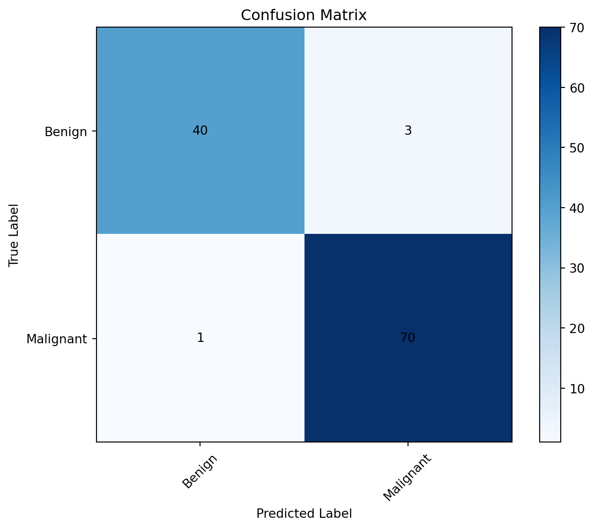

<!DOCTYPE html>
<html xmlns="http://www.w3.org/1999/xhtml" lang="en" xml:lang="en"><head>

<meta charset="utf-8">
<meta name="generator" content="quarto-1.3.433">

<meta name="viewport" content="width=device-width, initial-scale=1.0, user-scalable=yes">

<meta name="author" content="Daniel A. Udekwe">
<meta name="dcterms.date" content="2023-10-14">

<title>About Me - Classification</title>
<style>
code{white-space: pre-wrap;}
span.smallcaps{font-variant: small-caps;}
div.columns{display: flex; gap: min(4vw, 1.5em);}
div.column{flex: auto; overflow-x: auto;}
div.hanging-indent{margin-left: 1.5em; text-indent: -1.5em;}
ul.task-list{list-style: none;}
ul.task-list li input[type="checkbox"] {
  width: 0.8em;
  margin: 0 0.8em 0.2em -1em; /* quarto-specific, see https://github.com/quarto-dev/quarto-cli/issues/4556 */ 
  vertical-align: middle;
}
/* CSS for syntax highlighting */
pre > code.sourceCode { white-space: pre; position: relative; }
pre > code.sourceCode > span { display: inline-block; line-height: 1.25; }
pre > code.sourceCode > span:empty { height: 1.2em; }
.sourceCode { overflow: visible; }
code.sourceCode > span { color: inherit; text-decoration: inherit; }
div.sourceCode { margin: 1em 0; }
pre.sourceCode { margin: 0; }
@media screen {
div.sourceCode { overflow: auto; }
}
@media print {
pre > code.sourceCode { white-space: pre-wrap; }
pre > code.sourceCode > span { text-indent: -5em; padding-left: 5em; }
}
pre.numberSource code
  { counter-reset: source-line 0; }
pre.numberSource code > span
  { position: relative; left: -4em; counter-increment: source-line; }
pre.numberSource code > span > a:first-child::before
  { content: counter(source-line);
    position: relative; left: -1em; text-align: right; vertical-align: baseline;
    border: none; display: inline-block;
    -webkit-touch-callout: none; -webkit-user-select: none;
    -khtml-user-select: none; -moz-user-select: none;
    -ms-user-select: none; user-select: none;
    padding: 0 4px; width: 4em;
  }
pre.numberSource { margin-left: 3em;  padding-left: 4px; }
div.sourceCode
  {   }
@media screen {
pre > code.sourceCode > span > a:first-child::before { text-decoration: underline; }
}
</style>


<script src="../../site_libs/quarto-nav/quarto-nav.js"></script>
<script src="../../site_libs/quarto-nav/headroom.min.js"></script>
<script src="../../site_libs/clipboard/clipboard.min.js"></script>
<script src="../../site_libs/quarto-search/autocomplete.umd.js"></script>
<script src="../../site_libs/quarto-search/fuse.min.js"></script>
<script src="../../site_libs/quarto-search/quarto-search.js"></script>
<meta name="quarto:offset" content="../../">
<script src="../../site_libs/quarto-html/quarto.js"></script>
<script src="../../site_libs/quarto-html/popper.min.js"></script>
<script src="../../site_libs/quarto-html/tippy.umd.min.js"></script>
<script src="../../site_libs/quarto-html/anchor.min.js"></script>
<link href="../../site_libs/quarto-html/tippy.css" rel="stylesheet">
<link href="../../site_libs/quarto-html/quarto-syntax-highlighting.css" rel="stylesheet" id="quarto-text-highlighting-styles">
<script src="../../site_libs/bootstrap/bootstrap.min.js"></script>
<link href="../../site_libs/bootstrap/bootstrap-icons.css" rel="stylesheet">
<link href="../../site_libs/bootstrap/bootstrap.min.css" rel="stylesheet" id="quarto-bootstrap" data-mode="light">
<script id="quarto-search-options" type="application/json">{
  "location": "navbar",
  "copy-button": false,
  "collapse-after": 3,
  "panel-placement": "end",
  "type": "overlay",
  "limit": 20,
  "language": {
    "search-no-results-text": "No results",
    "search-matching-documents-text": "matching documents",
    "search-copy-link-title": "Copy link to search",
    "search-hide-matches-text": "Hide additional matches",
    "search-more-match-text": "more match in this document",
    "search-more-matches-text": "more matches in this document",
    "search-clear-button-title": "Clear",
    "search-detached-cancel-button-title": "Cancel",
    "search-submit-button-title": "Submit",
    "search-label": "Search"
  }
}</script>

  <script src="https://polyfill.io/v3/polyfill.min.js?features=es6"></script>
  <script src="https://cdn.jsdelivr.net/npm/mathjax@3/es5/tex-chtml-full.js" type="text/javascript"></script>

</head>

<body class="nav-fixed">

<div id="quarto-search-results"></div>
  <header id="quarto-header" class="headroom fixed-top">
    <nav class="navbar navbar-expand-lg navbar-dark ">
      <div class="navbar-container container-fluid">
      <div class="navbar-brand-container">
    <a class="navbar-brand" href="../../index.html">
    <span class="navbar-title">About Me</span>
    </a>
  </div>
            <div id="quarto-search" class="" title="Search"></div>
          <button class="navbar-toggler" type="button" data-bs-toggle="collapse" data-bs-target="#navbarCollapse" aria-controls="navbarCollapse" aria-expanded="false" aria-label="Toggle navigation" onclick="if (window.quartoToggleHeadroom) { window.quartoToggleHeadroom(); }">
  <span class="navbar-toggler-icon"></span>
</button>
          <div class="collapse navbar-collapse" id="navbarCollapse">
            <ul class="navbar-nav navbar-nav-scroll ms-auto">
  <li class="nav-item">
    <a class="nav-link" href="../../posts.html" rel="" target="">
 <span class="menu-text">Blog Posts</span></a>
  </li>  
  <li class="nav-item compact">
    <a class="nav-link" href="https://github.com/daniel-udekwe" rel="" target=""><i class="bi bi-github" role="img">
</i> 
 <span class="menu-text"></span></a>
  </li>  
  <li class="nav-item compact">
    <a class="nav-link" href="https://twitter.com" rel="" target=""><i class="bi bi-twitter" role="img">
</i> 
 <span class="menu-text"></span></a>
  </li>  
  <li class="nav-item compact">
    <a class="nav-link" href="https://linkedin.com/in/daniel-a-udekwe-19a2bbb2" rel="" target=""><i class="bi bi-linkedin" role="img">
</i> 
 <span class="menu-text"></span></a>
  </li>  
</ul>
            <div class="quarto-navbar-tools">
</div>
          </div> <!-- /navcollapse -->
      </div> <!-- /container-fluid -->
    </nav>
</header>
<!-- content -->
<header id="title-block-header" class="quarto-title-block default page-columns page-full">
  <div class="quarto-title-banner page-columns page-full">
    <div class="quarto-title column-page-left">
      <div class="quarto-title-block"><div><h1 class="title">Classification</h1><button type="button" class="btn code-tools-button" id="quarto-code-tools-source"><i class="bi"></i> Code</button></div></div>
                                <div class="quarto-categories">
                <div class="quarto-category">news</div>
              </div>
                  </div>
  </div>
    
  
  <div class="quarto-title-meta">

      <div>
      <div class="quarto-title-meta-heading">Author</div>
      <div class="quarto-title-meta-contents">
               <p>Daniel A. Udekwe </p>
            </div>
    </div>
      
      <div>
      <div class="quarto-title-meta-heading">Published</div>
      <div class="quarto-title-meta-contents">
        <p class="date">October 14, 2023</p>
      </div>
    </div>
    
      
    </div>
    
  
  </header><div id="quarto-content" class="quarto-container page-columns page-rows-contents page-layout-full page-navbar">
<!-- sidebar -->
<!-- margin-sidebar -->
    <div id="quarto-margin-sidebar" class="sidebar margin-sidebar">
        <nav id="TOC" role="doc-toc" class="toc-active">
    <h2 id="toc-title">On this page</h2>
   
  <ul>
  <li><a href="#binary-classification" id="toc-binary-classification" class="nav-link active" data-scroll-target="#binary-classification"><strong>Binary Classification</strong></a>
  <ul class="collapse">
  <li><a href="#k-nearest-neighbours" id="toc-k-nearest-neighbours" class="nav-link" data-scroll-target="#k-nearest-neighbours">K-Nearest Neighbours</a>
  <ul class="collapse">
  <li><a href="#implementation" id="toc-implementation" class="nav-link" data-scroll-target="#implementation">Implementation</a></li>
  </ul></li>
  <li><a href="#logistic-regression" id="toc-logistic-regression" class="nav-link" data-scroll-target="#logistic-regression">Logistic Regression</a>
  <ul class="collapse">
  <li><a href="#implementation-1" id="toc-implementation-1" class="nav-link" data-scroll-target="#implementation-1">Implementation</a></li>
  </ul></li>
  <li><a href="#support-vector-machine" id="toc-support-vector-machine" class="nav-link" data-scroll-target="#support-vector-machine">Support Vector Machine</a>
  <ul class="collapse">
  <li><a href="#implementation-2" id="toc-implementation-2" class="nav-link" data-scroll-target="#implementation-2">Implementation</a></li>
  </ul></li>
  <li><a href="#naive-bayes" id="toc-naive-bayes" class="nav-link" data-scroll-target="#naive-bayes">Naive Bayes</a>
  <ul class="collapse">
  <li><a href="#implementation-3" id="toc-implementation-3" class="nav-link" data-scroll-target="#implementation-3">Implementation</a></li>
  </ul></li>
  <li><a href="#neural-networks" id="toc-neural-networks" class="nav-link" data-scroll-target="#neural-networks">Neural Networks</a>
  <ul class="collapse">
  <li><a href="#implementation-4" id="toc-implementation-4" class="nav-link" data-scroll-target="#implementation-4">Implementation</a></li>
  </ul></li>
  <li><a href="#decision-trees" id="toc-decision-trees" class="nav-link" data-scroll-target="#decision-trees">Decision Trees</a>
  <ul class="collapse">
  <li><a href="#implementation-5" id="toc-implementation-5" class="nav-link" data-scroll-target="#implementation-5">Implementation</a></li>
  </ul></li>
  </ul></li>
  </ul>
<div class="toc-actions"><div><i class="bi bi-github"></i></div><div class="action-links"><p><a href="https://github.com/daniel-a-udekwe/daniel-a-udekwe.github.io/blob/main/posts/Second Blog Post/index.qmd" class="toc-action">View source</a></p></div></div></nav>
    </div>
<!-- main -->
<main class="content quarto-banner-title-block column-page-left" id="quarto-document-content">


<p>In machine learning, classification is a type of supervised learning where the algorithm is trained to categorize input data into predefined classes or categories. The goal is to learn a mapping between the input features and the corresponding class labels based on a set of labeled training data. Essentially, the algorithm learns to generalize from the provided examples and then applies this knowledge to classify new, unseen instances.</p>
<p>The process involves training a model on a labeled dataset, where each data point has input features and an associated class label. The model learns to recognize patterns and relationships within the input data that are indicative of the different classes. Once trained, the model can predict the class labels for new, unseen data.</p>
<p>Some types of Classification challenges are :</p>
<ul>
<li><p>Classifying emails as spam or not</p></li>
<li><p>Classifying a given handwritten character to be either a known character or not</p></li>
<li><p>Classifying recent user behaviour as churn or not</p></li>
</ul>
<p>There are various classification algorithms, each with its strengths and weaknesses, suited for different types of data and problem domains. Common algorithms include:</p>
<ul>
<li><p>K-Nearest Neighbours,</p></li>
<li><p>Logistic Regression</p></li>
<li><p>Support Vector Machine</p></li>
<li><p>Naive Bayes</p></li>
<li><p>Neural Networks</p></li>
<li><p>Decision Trees</p></li>
</ul>
<p>The choice of algorithm often depends on factors such as the nature of the data, the size of the dataset, and the desired interpretability of the model.</p>
<p>We will go over them one by one.</p>
<section id="binary-classification" class="level1">
<h1><strong>Binary Classification</strong></h1>
<p>A binary classification refers to those tasks which can give either of any two class labels as the output. Generally, one is considered as the normal state and the other is considered to be the abnormal state.&nbsp; The following examples will help you to understand them better.</p>
<ul>
<li><p>Email Spam detection:</p>
<p>Normal State – Not Spam, Abnormal State – Spam</p></li>
<li><p>Conversion prediction:</p>
<p>Normal State – Not churned, Abnormal State – Churn</p></li>
</ul>
<section id="k-nearest-neighbours" class="level2">
<h2 class="anchored" data-anchor-id="k-nearest-neighbours">K-Nearest Neighbours</h2>
<p>K-Nearest Neighbors (KNN) is a simple and intuitive supervised machine learning algorithm used for classification and regression tasks. It is a type of instance-based learning, also known as lazy learning, where the algorithm makes predictions based on the entire training dataset rather than learning a specific model during the training phase.</p>
<p>Here’s a basic overview of how the KNN algorithm works:</p>
<ol type="1">
<li><p><strong>Training Phase:</strong></p>
<ul>
<li><p>The algorithm stores all the training examples in memory.</p></li>
<li><p>Each example in the training set consists of a set of features and a corresponding class label.</p></li>
</ul></li>
<li><p><strong>Prediction Phase:</strong></p>
<ul>
<li><p>When a prediction is needed for a new, unseen data point, the algorithm calculates the distances between that point and all the points in the training set. Common distance metrics include Euclidean distance, Manhattan distance, or others depending on the problem.</p></li>
<li><p>The “k” nearest neighbors to the new data point are identified based on the calculated distances. “K” is a user-defined parameter representing the number of neighbors to consider.</p></li>
<li><p>For a classification task, the algorithm assigns the class label that is most frequent among the k neighbors. In regression tasks, the algorithm may return the average or weighted average of the target values of the k neighbors.</p></li>
</ul></li>
</ol>
<p>KNN is a versatile algorithm with some key characteristics:</p>
<ul>
<li><p><strong>Non-parametric:</strong> KNN doesn’t make any assumptions about the underlying data distribution. It adapts to the data during the training phase.</p></li>
<li><p><strong>Instance-based:</strong> Instead of building an explicit model during training, KNN stores the entire dataset and makes predictions based on the similarities between instances.</p></li>
<li><p><strong>Simple and interpretable:</strong> KNN is easy to understand and implement, making it a good choice for quick prototyping and baseline models.</p></li>
</ul>
<p>However, KNN has some limitations, such as being sensitive to irrelevant or redundant features, computation complexity (especially for large datasets), and a lack of interpretability for the decision-making process.</p>
<p>Choosing the appropriate value for “k” is crucial, as a small k may lead to overfitting, and a large k may introduce bias. The optimal value of “k” often depends on the specific dataset and problem at hand.</p>
<section id="implementation" class="level3">
<h3 class="anchored" data-anchor-id="implementation">Implementation</h3>
<p>Now, let’s implement K-Nearest neighbours on the scikit learn breast cancer dataset to classify malignant and benign cancers</p>
<div class="cell" data-execution_count="1">
<div class="sourceCode cell-code" id="cb1"><pre class="sourceCode python code-with-copy"><code class="sourceCode python"><span id="cb1-1"><a href="#cb1-1" aria-hidden="true" tabindex="-1"></a><span class="im">import</span> numpy <span class="im">as</span> np</span>
<span id="cb1-2"><a href="#cb1-2" aria-hidden="true" tabindex="-1"></a><span class="im">import</span> matplotlib.pyplot <span class="im">as</span> plt</span>
<span id="cb1-3"><a href="#cb1-3" aria-hidden="true" tabindex="-1"></a><span class="im">from</span> sklearn.datasets <span class="im">import</span> load_breast_cancer</span>
<span id="cb1-4"><a href="#cb1-4" aria-hidden="true" tabindex="-1"></a><span class="im">from</span> sklearn.model_selection <span class="im">import</span> train_test_split</span>
<span id="cb1-5"><a href="#cb1-5" aria-hidden="true" tabindex="-1"></a><span class="im">from</span> sklearn.preprocessing <span class="im">import</span> StandardScaler</span>
<span id="cb1-6"><a href="#cb1-6" aria-hidden="true" tabindex="-1"></a><span class="im">from</span> sklearn.neighbors <span class="im">import</span> KNeighborsClassifier</span>
<span id="cb1-7"><a href="#cb1-7" aria-hidden="true" tabindex="-1"></a><span class="im">from</span> sklearn.metrics <span class="im">import</span> accuracy_score, confusion_matrix</span>
<span id="cb1-8"><a href="#cb1-8" aria-hidden="true" tabindex="-1"></a><span class="im">from</span> sklearn.decomposition <span class="im">import</span> PCA</span>
<span id="cb1-9"><a href="#cb1-9" aria-hidden="true" tabindex="-1"></a><span class="im">from</span> matplotlib.colors <span class="im">import</span> ListedColormap</span>
<span id="cb1-10"><a href="#cb1-10" aria-hidden="true" tabindex="-1"></a></span>
<span id="cb1-11"><a href="#cb1-11" aria-hidden="true" tabindex="-1"></a><span class="co"># Load the breast cancer dataset</span></span>
<span id="cb1-12"><a href="#cb1-12" aria-hidden="true" tabindex="-1"></a>data <span class="op">=</span> load_breast_cancer()</span>
<span id="cb1-13"><a href="#cb1-13" aria-hidden="true" tabindex="-1"></a>X <span class="op">=</span> data.data</span>
<span id="cb1-14"><a href="#cb1-14" aria-hidden="true" tabindex="-1"></a>y <span class="op">=</span> data.target</span>
<span id="cb1-15"><a href="#cb1-15" aria-hidden="true" tabindex="-1"></a></span>
<span id="cb1-16"><a href="#cb1-16" aria-hidden="true" tabindex="-1"></a><span class="co"># Split the data into training and testing sets</span></span>
<span id="cb1-17"><a href="#cb1-17" aria-hidden="true" tabindex="-1"></a>X_train, X_test, y_train, y_test <span class="op">=</span> train_test_split(X, y, test_size<span class="op">=</span><span class="fl">0.2</span>, random_state<span class="op">=</span><span class="dv">42</span>)</span>
<span id="cb1-18"><a href="#cb1-18" aria-hidden="true" tabindex="-1"></a></span>
<span id="cb1-19"><a href="#cb1-19" aria-hidden="true" tabindex="-1"></a><span class="co"># Standardize the features</span></span>
<span id="cb1-20"><a href="#cb1-20" aria-hidden="true" tabindex="-1"></a>scaler <span class="op">=</span> StandardScaler()</span>
<span id="cb1-21"><a href="#cb1-21" aria-hidden="true" tabindex="-1"></a>X_train_scaled <span class="op">=</span> scaler.fit_transform(X_train)</span>
<span id="cb1-22"><a href="#cb1-22" aria-hidden="true" tabindex="-1"></a>X_test_scaled <span class="op">=</span> scaler.transform(X_test)</span>
<span id="cb1-23"><a href="#cb1-23" aria-hidden="true" tabindex="-1"></a></span>
<span id="cb1-24"><a href="#cb1-24" aria-hidden="true" tabindex="-1"></a><span class="co"># Apply PCA for dimensionality reduction</span></span>
<span id="cb1-25"><a href="#cb1-25" aria-hidden="true" tabindex="-1"></a>pca <span class="op">=</span> PCA(n_components<span class="op">=</span><span class="dv">2</span>)</span>
<span id="cb1-26"><a href="#cb1-26" aria-hidden="true" tabindex="-1"></a>X_train_2d <span class="op">=</span> pca.fit_transform(X_train_scaled)</span>
<span id="cb1-27"><a href="#cb1-27" aria-hidden="true" tabindex="-1"></a>X_test_2d <span class="op">=</span> pca.transform(X_test_scaled)</span>
<span id="cb1-28"><a href="#cb1-28" aria-hidden="true" tabindex="-1"></a></span>
<span id="cb1-29"><a href="#cb1-29" aria-hidden="true" tabindex="-1"></a><span class="co"># Train the KNN classifier</span></span>
<span id="cb1-30"><a href="#cb1-30" aria-hidden="true" tabindex="-1"></a>k <span class="op">=</span> <span class="dv">5</span>  <span class="co"># You can choose your desired value for k</span></span>
<span id="cb1-31"><a href="#cb1-31" aria-hidden="true" tabindex="-1"></a>knn_classifier <span class="op">=</span> KNeighborsClassifier(n_neighbors<span class="op">=</span>k)</span>
<span id="cb1-32"><a href="#cb1-32" aria-hidden="true" tabindex="-1"></a>knn_classifier.fit(X_train_2d, y_train)</span>
<span id="cb1-33"><a href="#cb1-33" aria-hidden="true" tabindex="-1"></a></span>
<span id="cb1-34"><a href="#cb1-34" aria-hidden="true" tabindex="-1"></a><span class="co"># Make predictions on the test set</span></span>
<span id="cb1-35"><a href="#cb1-35" aria-hidden="true" tabindex="-1"></a>y_pred <span class="op">=</span> knn_classifier.predict(X_test_2d)</span>
<span id="cb1-36"><a href="#cb1-36" aria-hidden="true" tabindex="-1"></a></span>
<span id="cb1-37"><a href="#cb1-37" aria-hidden="true" tabindex="-1"></a><span class="co"># Calculate accuracy and display confusion matrix</span></span>
<span id="cb1-38"><a href="#cb1-38" aria-hidden="true" tabindex="-1"></a>accuracy <span class="op">=</span> accuracy_score(y_test, y_pred)</span>
<span id="cb1-39"><a href="#cb1-39" aria-hidden="true" tabindex="-1"></a>conf_matrix <span class="op">=</span> confusion_matrix(y_test, y_pred)</span>
<span id="cb1-40"><a href="#cb1-40" aria-hidden="true" tabindex="-1"></a></span>
<span id="cb1-41"><a href="#cb1-41" aria-hidden="true" tabindex="-1"></a></span>
<span id="cb1-42"><a href="#cb1-42" aria-hidden="true" tabindex="-1"></a><span class="bu">print</span>(<span class="ss">f'Accuracy: </span><span class="sc">{</span>accuracy <span class="op">*</span> <span class="dv">100</span><span class="sc">:.2f}</span><span class="ss">%'</span>)</span>
<span id="cb1-43"><a href="#cb1-43" aria-hidden="true" tabindex="-1"></a><span class="co">#print('Confusion Matrix:')</span></span>
<span id="cb1-44"><a href="#cb1-44" aria-hidden="true" tabindex="-1"></a><span class="co">#print(conf_matrix)</span></span>
<span id="cb1-45"><a href="#cb1-45" aria-hidden="true" tabindex="-1"></a>plt.imshow(conf_matrix, interpolation<span class="op">=</span><span class="st">'nearest'</span>, cmap<span class="op">=</span>plt.cm.Blues)</span>
<span id="cb1-46"><a href="#cb1-46" aria-hidden="true" tabindex="-1"></a>plt.title(<span class="st">'Confusion Matrix'</span>)</span>
<span id="cb1-47"><a href="#cb1-47" aria-hidden="true" tabindex="-1"></a>plt.colorbar()</span>
<span id="cb1-48"><a href="#cb1-48" aria-hidden="true" tabindex="-1"></a></span>
<span id="cb1-49"><a href="#cb1-49" aria-hidden="true" tabindex="-1"></a>classes <span class="op">=</span> [<span class="st">'Benign'</span>, <span class="st">'Malignant'</span>]</span>
<span id="cb1-50"><a href="#cb1-50" aria-hidden="true" tabindex="-1"></a>tick_marks <span class="op">=</span> np.arange(<span class="bu">len</span>(classes))</span>
<span id="cb1-51"><a href="#cb1-51" aria-hidden="true" tabindex="-1"></a>plt.xticks(tick_marks, classes, rotation<span class="op">=</span><span class="dv">45</span>)</span>
<span id="cb1-52"><a href="#cb1-52" aria-hidden="true" tabindex="-1"></a>plt.yticks(tick_marks, classes)</span>
<span id="cb1-53"><a href="#cb1-53" aria-hidden="true" tabindex="-1"></a>plt.xlabel(<span class="st">'Predicted Label'</span>)</span>
<span id="cb1-54"><a href="#cb1-54" aria-hidden="true" tabindex="-1"></a>plt.ylabel(<span class="st">'True Label'</span>)</span>
<span id="cb1-55"><a href="#cb1-55" aria-hidden="true" tabindex="-1"></a><span class="cf">for</span> i <span class="kw">in</span> <span class="bu">range</span>(<span class="bu">len</span>(classes)):</span>
<span id="cb1-56"><a href="#cb1-56" aria-hidden="true" tabindex="-1"></a>    <span class="cf">for</span> j <span class="kw">in</span> <span class="bu">range</span>(<span class="bu">len</span>(classes)):</span>
<span id="cb1-57"><a href="#cb1-57" aria-hidden="true" tabindex="-1"></a>        plt.text(j, i, <span class="bu">str</span>(conf_matrix[i, j]), ha<span class="op">=</span><span class="st">'center'</span>, va<span class="op">=</span><span class="st">'center'</span>)</span>
<span id="cb1-58"><a href="#cb1-58" aria-hidden="true" tabindex="-1"></a>plt.show()</span>
<span id="cb1-59"><a href="#cb1-59" aria-hidden="true" tabindex="-1"></a></span>
<span id="cb1-60"><a href="#cb1-60" aria-hidden="true" tabindex="-1"></a></span>
<span id="cb1-61"><a href="#cb1-61" aria-hidden="true" tabindex="-1"></a><span class="co"># Plot the decision boundaries</span></span>
<span id="cb1-62"><a href="#cb1-62" aria-hidden="true" tabindex="-1"></a><span class="kw">def</span> plot_decision_boundary(X, y, classifier, title):</span>
<span id="cb1-63"><a href="#cb1-63" aria-hidden="true" tabindex="-1"></a>    h <span class="op">=</span> <span class="fl">0.02</span>  <span class="co"># step size in the mesh</span></span>
<span id="cb1-64"><a href="#cb1-64" aria-hidden="true" tabindex="-1"></a>    cmap_light <span class="op">=</span> ListedColormap([<span class="st">'#FFAAAA'</span>, <span class="st">'#AAAAFF'</span>])</span>
<span id="cb1-65"><a href="#cb1-65" aria-hidden="true" tabindex="-1"></a>    cmap_bold <span class="op">=</span> ListedColormap([<span class="st">'#FF0000'</span>, <span class="st">'#0000FF'</span>])</span>
<span id="cb1-66"><a href="#cb1-66" aria-hidden="true" tabindex="-1"></a></span>
<span id="cb1-67"><a href="#cb1-67" aria-hidden="true" tabindex="-1"></a>    x_min, x_max <span class="op">=</span> X[:, <span class="dv">0</span>].<span class="bu">min</span>() <span class="op">-</span> <span class="dv">1</span>, X[:, <span class="dv">0</span>].<span class="bu">max</span>() <span class="op">+</span> <span class="dv">1</span></span>
<span id="cb1-68"><a href="#cb1-68" aria-hidden="true" tabindex="-1"></a>    y_min, y_max <span class="op">=</span> X[:, <span class="dv">1</span>].<span class="bu">min</span>() <span class="op">-</span> <span class="dv">1</span>, X[:, <span class="dv">1</span>].<span class="bu">max</span>() <span class="op">+</span> <span class="dv">1</span></span>
<span id="cb1-69"><a href="#cb1-69" aria-hidden="true" tabindex="-1"></a></span>
<span id="cb1-70"><a href="#cb1-70" aria-hidden="true" tabindex="-1"></a>    xx, yy <span class="op">=</span> np.meshgrid(np.arange(x_min, x_max, h), np.arange(y_min, y_max, h))</span>
<span id="cb1-71"><a href="#cb1-71" aria-hidden="true" tabindex="-1"></a>    Z <span class="op">=</span> classifier.predict(np.c_[xx.ravel(), yy.ravel()])</span>
<span id="cb1-72"><a href="#cb1-72" aria-hidden="true" tabindex="-1"></a></span>
<span id="cb1-73"><a href="#cb1-73" aria-hidden="true" tabindex="-1"></a>    Z <span class="op">=</span> Z.reshape(xx.shape)</span>
<span id="cb1-74"><a href="#cb1-74" aria-hidden="true" tabindex="-1"></a>    plt.figure()</span>
<span id="cb1-75"><a href="#cb1-75" aria-hidden="true" tabindex="-1"></a>    plt.pcolormesh(xx, yy, Z, cmap<span class="op">=</span>cmap_light)</span>
<span id="cb1-76"><a href="#cb1-76" aria-hidden="true" tabindex="-1"></a></span>
<span id="cb1-77"><a href="#cb1-77" aria-hidden="true" tabindex="-1"></a>    <span class="co"># Plot the training points</span></span>
<span id="cb1-78"><a href="#cb1-78" aria-hidden="true" tabindex="-1"></a>    plt.scatter(X[:, <span class="dv">0</span>], X[:, <span class="dv">1</span>], c<span class="op">=</span>y, cmap<span class="op">=</span>cmap_bold, edgecolor<span class="op">=</span><span class="st">'k'</span>, s<span class="op">=</span><span class="dv">20</span>)</span>
<span id="cb1-79"><a href="#cb1-79" aria-hidden="true" tabindex="-1"></a>    plt.xlim(xx.<span class="bu">min</span>(), xx.<span class="bu">max</span>())</span>
<span id="cb1-80"><a href="#cb1-80" aria-hidden="true" tabindex="-1"></a>    plt.ylim(yy.<span class="bu">min</span>(), yy.<span class="bu">max</span>())</span>
<span id="cb1-81"><a href="#cb1-81" aria-hidden="true" tabindex="-1"></a>    </span>
<span id="cb1-82"><a href="#cb1-82" aria-hidden="true" tabindex="-1"></a>    plt.title(title)</span>
<span id="cb1-83"><a href="#cb1-83" aria-hidden="true" tabindex="-1"></a>    plt.xlabel(<span class="st">'Principal Component 1'</span>)</span>
<span id="cb1-84"><a href="#cb1-84" aria-hidden="true" tabindex="-1"></a>    plt.ylabel(<span class="st">'Principal Component 2'</span>)</span>
<span id="cb1-85"><a href="#cb1-85" aria-hidden="true" tabindex="-1"></a></span>
<span id="cb1-86"><a href="#cb1-86" aria-hidden="true" tabindex="-1"></a><span class="co"># Plot the decision boundaries on the training set</span></span>
<span id="cb1-87"><a href="#cb1-87" aria-hidden="true" tabindex="-1"></a>plot_decision_boundary(X_train_2d, y_train, knn_classifier, <span class="st">'KNN Classification (Training Set)'</span>)</span>
<span id="cb1-88"><a href="#cb1-88" aria-hidden="true" tabindex="-1"></a>plt.show()</span>
<span id="cb1-89"><a href="#cb1-89" aria-hidden="true" tabindex="-1"></a></span>
<span id="cb1-90"><a href="#cb1-90" aria-hidden="true" tabindex="-1"></a><span class="co"># Plot the decision boundaries on the test set</span></span>
<span id="cb1-91"><a href="#cb1-91" aria-hidden="true" tabindex="-1"></a>plot_decision_boundary(X_test_2d, y_test, knn_classifier, <span class="st">'KNN Classification (Test Set)'</span>)</span>
<span id="cb1-92"><a href="#cb1-92" aria-hidden="true" tabindex="-1"></a>plt.show()</span></code><button title="Copy to Clipboard" class="code-copy-button"><i class="bi"></i></button></pre></div>
<div class="cell-output cell-output-stdout">
<pre><code>Accuracy: 97.37%</code></pre>
</div>
<div class="cell-output cell-output-display">
<p></p>
</div>
<div class="cell-output cell-output-display">
<p></p>
</div>
<div class="cell-output cell-output-display">
<p></p>
</div>
</div>
</section>
</section>
<section id="logistic-regression" class="level2">
<h2 class="anchored" data-anchor-id="logistic-regression">Logistic Regression</h2>
<p>Logistic Regression is a statistical method and a popular machine learning algorithm used for binary classification problems. Despite its name, it is used for classification rather than regression. Logistic Regression models the probability that a given input belongs to a particular category. It’s widely employed in various fields, such as medicine (disease prediction), marketing (customer churn analysis), and finance (credit scoring).</p>
<p>Here’s a brief overview of how logistic regression works:</p>
<ol type="1">
<li><p><strong>Sigmoid Function:</strong></p>
<ul>
<li><p>Logistic Regression uses the logistic function, also called the sigmoid function, to model the probability.</p></li>
<li><p>The sigmoid function has an S-shaped curve and maps any real-valued number to the range [0, 1]. The formula for the sigmoid function is: <span class="math inline">\(\sigma(z) = \frac{1}{1+ e^{-z}}\)</span> where <span class="math inline">\(\sigma(z)\)</span> is the linear combination of input features and weights.</p></li>
</ul></li>
<li><p><strong>Linear Combination:</strong></p>
<ul>
<li><p>Logistic Regression establishes a linear relationship between the input features and the log-odds (logit) of the probability of belonging to the positive class.</p></li>
<li><p>The linear combination is given by: <span class="math inline">\(z = b_0 + b_1\times x_1 + b_2\times x_2 + ... + b_n \times x_n\)</span> where <span class="math inline">\(b_0, b_1, ... , b_n\)</span> are the coefficients (weights) and <span class="math inline">\(x_1, x_2, ... , x_n\)</span> are the input features.</p></li>
</ul></li>
<li><p><strong>Probability Prediction:</strong></p>
<ul>
<li>The output of the sigmoid function is interpreted as the probability that the given input belongs to the positive class. If <span class="math inline">\(\sigma(z)\)</span> is close to 1, the model predicts a high probability of belonging to the positive class; if close to 0, it predicts a low probability.</li>
</ul></li>
<li><p><strong>Decision Boundary:</strong></p>
<ul>
<li>A decision boundary is established by the model based on a threshold probability (commonly 0.5). If the predicted probability is above the threshold, the instance is classified as the positive class; otherwise, it’s classified as the negative class.</li>
</ul></li>
</ol>
<p>Training a logistic regression model involves finding the optimal weights that maximize the likelihood of the observed data given the model. This is typically done using optimization algorithms like gradient descent.</p>
<p>Logistic Regression is advantageous for its simplicity, interpretability, and efficiency. However, it assumes a linear relationship between the features and the log-odds, which may not hold in all situations. Extensions like polynomial logistic regression can be used to capture non-linear relationships.</p>
<section id="implementation-1" class="level3">
<h3 class="anchored" data-anchor-id="implementation-1">Implementation</h3>
<p>Now, let’s implement logistic regression on the breast cancer dataset to classify malignant and benign cancers</p>
<div class="cell" data-execution_count="2">
<div class="sourceCode cell-code" id="cb3"><pre class="sourceCode python code-with-copy"><code class="sourceCode python"><span id="cb3-1"><a href="#cb3-1" aria-hidden="true" tabindex="-1"></a><span class="im">import</span> numpy <span class="im">as</span> np</span>
<span id="cb3-2"><a href="#cb3-2" aria-hidden="true" tabindex="-1"></a><span class="im">import</span> matplotlib.pyplot <span class="im">as</span> plt</span>
<span id="cb3-3"><a href="#cb3-3" aria-hidden="true" tabindex="-1"></a><span class="im">from</span> sklearn.datasets <span class="im">import</span> load_breast_cancer</span>
<span id="cb3-4"><a href="#cb3-4" aria-hidden="true" tabindex="-1"></a><span class="im">from</span> sklearn.model_selection <span class="im">import</span> train_test_split</span>
<span id="cb3-5"><a href="#cb3-5" aria-hidden="true" tabindex="-1"></a><span class="im">from</span> sklearn.preprocessing <span class="im">import</span> StandardScaler</span>
<span id="cb3-6"><a href="#cb3-6" aria-hidden="true" tabindex="-1"></a><span class="im">from</span> sklearn.linear_model <span class="im">import</span> LogisticRegression</span>
<span id="cb3-7"><a href="#cb3-7" aria-hidden="true" tabindex="-1"></a><span class="im">from</span> sklearn.metrics <span class="im">import</span> accuracy_score, confusion_matrix</span>
<span id="cb3-8"><a href="#cb3-8" aria-hidden="true" tabindex="-1"></a><span class="im">from</span> sklearn.decomposition <span class="im">import</span> PCA</span>
<span id="cb3-9"><a href="#cb3-9" aria-hidden="true" tabindex="-1"></a><span class="im">from</span> matplotlib.colors <span class="im">import</span> ListedColormap</span>
<span id="cb3-10"><a href="#cb3-10" aria-hidden="true" tabindex="-1"></a></span>
<span id="cb3-11"><a href="#cb3-11" aria-hidden="true" tabindex="-1"></a><span class="co"># Load the breast cancer dataset</span></span>
<span id="cb3-12"><a href="#cb3-12" aria-hidden="true" tabindex="-1"></a>data <span class="op">=</span> load_breast_cancer()</span>
<span id="cb3-13"><a href="#cb3-13" aria-hidden="true" tabindex="-1"></a>X <span class="op">=</span> data.data</span>
<span id="cb3-14"><a href="#cb3-14" aria-hidden="true" tabindex="-1"></a>y <span class="op">=</span> data.target</span>
<span id="cb3-15"><a href="#cb3-15" aria-hidden="true" tabindex="-1"></a></span>
<span id="cb3-16"><a href="#cb3-16" aria-hidden="true" tabindex="-1"></a><span class="co"># Split the data into training and testing sets</span></span>
<span id="cb3-17"><a href="#cb3-17" aria-hidden="true" tabindex="-1"></a>X_train, X_test, y_train, y_test <span class="op">=</span> train_test_split(X, y, test_size<span class="op">=</span><span class="fl">0.2</span>, random_state<span class="op">=</span><span class="dv">42</span>)</span>
<span id="cb3-18"><a href="#cb3-18" aria-hidden="true" tabindex="-1"></a></span>
<span id="cb3-19"><a href="#cb3-19" aria-hidden="true" tabindex="-1"></a><span class="co"># Standardize the features</span></span>
<span id="cb3-20"><a href="#cb3-20" aria-hidden="true" tabindex="-1"></a>scaler <span class="op">=</span> StandardScaler()</span>
<span id="cb3-21"><a href="#cb3-21" aria-hidden="true" tabindex="-1"></a>X_train_scaled <span class="op">=</span> scaler.fit_transform(X_train)</span>
<span id="cb3-22"><a href="#cb3-22" aria-hidden="true" tabindex="-1"></a>X_test_scaled <span class="op">=</span> scaler.transform(X_test)</span>
<span id="cb3-23"><a href="#cb3-23" aria-hidden="true" tabindex="-1"></a></span>
<span id="cb3-24"><a href="#cb3-24" aria-hidden="true" tabindex="-1"></a><span class="co"># Apply PCA for dimensionality reduction</span></span>
<span id="cb3-25"><a href="#cb3-25" aria-hidden="true" tabindex="-1"></a>pca <span class="op">=</span> PCA(n_components<span class="op">=</span><span class="dv">2</span>)</span>
<span id="cb3-26"><a href="#cb3-26" aria-hidden="true" tabindex="-1"></a>X_train_2d <span class="op">=</span> pca.fit_transform(X_train_scaled)</span>
<span id="cb3-27"><a href="#cb3-27" aria-hidden="true" tabindex="-1"></a>X_test_2d <span class="op">=</span> pca.transform(X_test_scaled)</span>
<span id="cb3-28"><a href="#cb3-28" aria-hidden="true" tabindex="-1"></a></span>
<span id="cb3-29"><a href="#cb3-29" aria-hidden="true" tabindex="-1"></a><span class="co"># Train the Logistic Regression model</span></span>
<span id="cb3-30"><a href="#cb3-30" aria-hidden="true" tabindex="-1"></a>logreg_model <span class="op">=</span> LogisticRegression(random_state<span class="op">=</span><span class="dv">42</span>)</span>
<span id="cb3-31"><a href="#cb3-31" aria-hidden="true" tabindex="-1"></a>logreg_model.fit(X_train_2d, y_train)  <span class="co"># Use the reduced dimensionality for training</span></span>
<span id="cb3-32"><a href="#cb3-32" aria-hidden="true" tabindex="-1"></a></span>
<span id="cb3-33"><a href="#cb3-33" aria-hidden="true" tabindex="-1"></a><span class="co"># Make predictions on the test set</span></span>
<span id="cb3-34"><a href="#cb3-34" aria-hidden="true" tabindex="-1"></a>y_pred <span class="op">=</span> logreg_model.predict(X_test_2d)  <span class="co"># Use the same dimensionality for testing</span></span>
<span id="cb3-35"><a href="#cb3-35" aria-hidden="true" tabindex="-1"></a></span>
<span id="cb3-36"><a href="#cb3-36" aria-hidden="true" tabindex="-1"></a><span class="co"># Calculate accuracy and display confusion matrix</span></span>
<span id="cb3-37"><a href="#cb3-37" aria-hidden="true" tabindex="-1"></a>accuracy <span class="op">=</span> accuracy_score(y_test, y_pred)</span>
<span id="cb3-38"><a href="#cb3-38" aria-hidden="true" tabindex="-1"></a>conf_matrix <span class="op">=</span> confusion_matrix(y_test, y_pred)</span>
<span id="cb3-39"><a href="#cb3-39" aria-hidden="true" tabindex="-1"></a></span>
<span id="cb3-40"><a href="#cb3-40" aria-hidden="true" tabindex="-1"></a><span class="bu">print</span>(<span class="ss">f'Accuracy: </span><span class="sc">{</span>accuracy <span class="op">*</span> <span class="dv">100</span><span class="sc">:.2f}</span><span class="ss">%'</span>)</span>
<span id="cb3-41"><a href="#cb3-41" aria-hidden="true" tabindex="-1"></a><span class="co">#print('Confusion Matrix:')</span></span>
<span id="cb3-42"><a href="#cb3-42" aria-hidden="true" tabindex="-1"></a><span class="co">#print(conf_matrix)</span></span>
<span id="cb3-43"><a href="#cb3-43" aria-hidden="true" tabindex="-1"></a></span>
<span id="cb3-44"><a href="#cb3-44" aria-hidden="true" tabindex="-1"></a>plt.imshow(conf_matrix, interpolation<span class="op">=</span><span class="st">'nearest'</span>, cmap<span class="op">=</span>plt.cm.Blues)</span>
<span id="cb3-45"><a href="#cb3-45" aria-hidden="true" tabindex="-1"></a>plt.title(<span class="st">'Confusion Matrix'</span>)</span>
<span id="cb3-46"><a href="#cb3-46" aria-hidden="true" tabindex="-1"></a>plt.colorbar()</span>
<span id="cb3-47"><a href="#cb3-47" aria-hidden="true" tabindex="-1"></a></span>
<span id="cb3-48"><a href="#cb3-48" aria-hidden="true" tabindex="-1"></a>classes <span class="op">=</span> [<span class="st">'Benign'</span>, <span class="st">'Malignant'</span>]</span>
<span id="cb3-49"><a href="#cb3-49" aria-hidden="true" tabindex="-1"></a>tick_marks <span class="op">=</span> np.arange(<span class="bu">len</span>(classes))</span>
<span id="cb3-50"><a href="#cb3-50" aria-hidden="true" tabindex="-1"></a>plt.xticks(tick_marks, classes, rotation<span class="op">=</span><span class="dv">45</span>)</span>
<span id="cb3-51"><a href="#cb3-51" aria-hidden="true" tabindex="-1"></a>plt.yticks(tick_marks, classes)</span>
<span id="cb3-52"><a href="#cb3-52" aria-hidden="true" tabindex="-1"></a>plt.xlabel(<span class="st">'Predicted Label'</span>)</span>
<span id="cb3-53"><a href="#cb3-53" aria-hidden="true" tabindex="-1"></a>plt.ylabel(<span class="st">'True Label'</span>)</span>
<span id="cb3-54"><a href="#cb3-54" aria-hidden="true" tabindex="-1"></a><span class="cf">for</span> i <span class="kw">in</span> <span class="bu">range</span>(<span class="bu">len</span>(classes)):</span>
<span id="cb3-55"><a href="#cb3-55" aria-hidden="true" tabindex="-1"></a>    <span class="cf">for</span> j <span class="kw">in</span> <span class="bu">range</span>(<span class="bu">len</span>(classes)):</span>
<span id="cb3-56"><a href="#cb3-56" aria-hidden="true" tabindex="-1"></a>        plt.text(j, i, <span class="bu">str</span>(conf_matrix[i, j]), ha<span class="op">=</span><span class="st">'center'</span>, va<span class="op">=</span><span class="st">'center'</span>)</span>
<span id="cb3-57"><a href="#cb3-57" aria-hidden="true" tabindex="-1"></a>plt.show()</span>
<span id="cb3-58"><a href="#cb3-58" aria-hidden="true" tabindex="-1"></a></span>
<span id="cb3-59"><a href="#cb3-59" aria-hidden="true" tabindex="-1"></a></span>
<span id="cb3-60"><a href="#cb3-60" aria-hidden="true" tabindex="-1"></a><span class="co"># Plot the decision boundaries</span></span>
<span id="cb3-61"><a href="#cb3-61" aria-hidden="true" tabindex="-1"></a><span class="kw">def</span> plot_decision_boundary(X, y, classifier, title):</span>
<span id="cb3-62"><a href="#cb3-62" aria-hidden="true" tabindex="-1"></a>    h <span class="op">=</span> <span class="fl">0.02</span>  <span class="co"># step size in the mesh</span></span>
<span id="cb3-63"><a href="#cb3-63" aria-hidden="true" tabindex="-1"></a>    cmap_light <span class="op">=</span> ListedColormap([<span class="st">'#FFAAAA'</span>, <span class="st">'#AAAAFF'</span>])</span>
<span id="cb3-64"><a href="#cb3-64" aria-hidden="true" tabindex="-1"></a>    cmap_bold <span class="op">=</span> ListedColormap([<span class="st">'#FF0000'</span>, <span class="st">'#0000FF'</span>])</span>
<span id="cb3-65"><a href="#cb3-65" aria-hidden="true" tabindex="-1"></a></span>
<span id="cb3-66"><a href="#cb3-66" aria-hidden="true" tabindex="-1"></a>    x_min, x_max <span class="op">=</span> X[:, <span class="dv">0</span>].<span class="bu">min</span>() <span class="op">-</span> <span class="dv">1</span>, X[:, <span class="dv">0</span>].<span class="bu">max</span>() <span class="op">+</span> <span class="dv">1</span></span>
<span id="cb3-67"><a href="#cb3-67" aria-hidden="true" tabindex="-1"></a>    y_min, y_max <span class="op">=</span> X[:, <span class="dv">1</span>].<span class="bu">min</span>() <span class="op">-</span> <span class="dv">1</span>, X[:, <span class="dv">1</span>].<span class="bu">max</span>() <span class="op">+</span> <span class="dv">1</span></span>
<span id="cb3-68"><a href="#cb3-68" aria-hidden="true" tabindex="-1"></a></span>
<span id="cb3-69"><a href="#cb3-69" aria-hidden="true" tabindex="-1"></a>    xx, yy <span class="op">=</span> np.meshgrid(np.arange(x_min, x_max, h), np.arange(y_min, y_max, h))</span>
<span id="cb3-70"><a href="#cb3-70" aria-hidden="true" tabindex="-1"></a>    Z <span class="op">=</span> classifier.predict(np.c_[xx.ravel(), yy.ravel()])</span>
<span id="cb3-71"><a href="#cb3-71" aria-hidden="true" tabindex="-1"></a></span>
<span id="cb3-72"><a href="#cb3-72" aria-hidden="true" tabindex="-1"></a>    Z <span class="op">=</span> Z.reshape(xx.shape)</span>
<span id="cb3-73"><a href="#cb3-73" aria-hidden="true" tabindex="-1"></a>    plt.figure()</span>
<span id="cb3-74"><a href="#cb3-74" aria-hidden="true" tabindex="-1"></a>    plt.pcolormesh(xx, yy, Z, cmap<span class="op">=</span>cmap_light)</span>
<span id="cb3-75"><a href="#cb3-75" aria-hidden="true" tabindex="-1"></a></span>
<span id="cb3-76"><a href="#cb3-76" aria-hidden="true" tabindex="-1"></a>    <span class="co"># Plot the training points</span></span>
<span id="cb3-77"><a href="#cb3-77" aria-hidden="true" tabindex="-1"></a>    plt.scatter(X[:, <span class="dv">0</span>], X[:, <span class="dv">1</span>], c<span class="op">=</span>y, cmap<span class="op">=</span>cmap_bold, edgecolor<span class="op">=</span><span class="st">'k'</span>, s<span class="op">=</span><span class="dv">20</span>)</span>
<span id="cb3-78"><a href="#cb3-78" aria-hidden="true" tabindex="-1"></a>    plt.xlim(xx.<span class="bu">min</span>(), xx.<span class="bu">max</span>())</span>
<span id="cb3-79"><a href="#cb3-79" aria-hidden="true" tabindex="-1"></a>    plt.ylim(yy.<span class="bu">min</span>(), yy.<span class="bu">max</span>())</span>
<span id="cb3-80"><a href="#cb3-80" aria-hidden="true" tabindex="-1"></a>    </span>
<span id="cb3-81"><a href="#cb3-81" aria-hidden="true" tabindex="-1"></a>    plt.title(title)</span>
<span id="cb3-82"><a href="#cb3-82" aria-hidden="true" tabindex="-1"></a>    plt.xlabel(<span class="st">'Principal Component 1'</span>)</span>
<span id="cb3-83"><a href="#cb3-83" aria-hidden="true" tabindex="-1"></a>    plt.ylabel(<span class="st">'Principal Component 2'</span>)</span>
<span id="cb3-84"><a href="#cb3-84" aria-hidden="true" tabindex="-1"></a></span>
<span id="cb3-85"><a href="#cb3-85" aria-hidden="true" tabindex="-1"></a><span class="co"># Plot the decision boundaries for logistic regression on the training set</span></span>
<span id="cb3-86"><a href="#cb3-86" aria-hidden="true" tabindex="-1"></a>plot_decision_boundary(X_train_2d, y_train, logreg_model, <span class="st">'Logistic Regression (Training Set)'</span>)</span>
<span id="cb3-87"><a href="#cb3-87" aria-hidden="true" tabindex="-1"></a>plt.show()</span>
<span id="cb3-88"><a href="#cb3-88" aria-hidden="true" tabindex="-1"></a></span>
<span id="cb3-89"><a href="#cb3-89" aria-hidden="true" tabindex="-1"></a><span class="co"># Plot the decision boundaries for logistic regression on the test set</span></span>
<span id="cb3-90"><a href="#cb3-90" aria-hidden="true" tabindex="-1"></a>plot_decision_boundary(X_test_2d, y_test, logreg_model, <span class="st">'Logistic Regression (Test Set)'</span>)</span>
<span id="cb3-91"><a href="#cb3-91" aria-hidden="true" tabindex="-1"></a>plt.show()</span></code><button title="Copy to Clipboard" class="code-copy-button"><i class="bi"></i></button></pre></div>
<div class="cell-output cell-output-stdout">
<pre><code>Accuracy: 99.12%</code></pre>
</div>
<div class="cell-output cell-output-display">
<p></p>
</div>
<div class="cell-output cell-output-display">
<p></p>
</div>
<div class="cell-output cell-output-display">
<p></p>
</div>
</div>
</section>
</section>
<section id="support-vector-machine" class="level2">
<h2 class="anchored" data-anchor-id="support-vector-machine">Support Vector Machine</h2>
<p>A Support Vector Machine (SVM) is a supervised machine learning algorithm used for classification and regression tasks. Its primary objective is to find a hyperplane in a high-dimensional space that best separates data points into different classes. In the context of classification, the SVM aims to create a decision boundary that maximizes the margin between classes.</p>
<p>Here are key concepts and features of Support Vector Machines:</p>
<ol type="1">
<li><p><strong>Hyperplane:</strong></p>
<ul>
<li>In a two-dimensional space, a hyperplane is a simple line. In higher dimensions, it becomes a hyperplane, which is a subspace of one dimension less than the ambient space. For a binary classification problem, the SVM seeks the hyperplane that best separates data points of different classes.</li>
</ul></li>
<li><p><strong>Margin:</strong></p>
<ul>
<li>The margin is the distance between the hyperplane and the nearest data point from either class. SVMs strive to maximize this margin because a larger margin generally leads to better generalization performance on unseen data.</li>
</ul></li>
<li><p><strong>Support Vectors:</strong></p>
<ul>
<li>Support vectors are the data points that are closest to the hyperplane and have the most influence on determining its position. These are the critical elements for defining the margin and decision boundary.</li>
</ul></li>
<li><p><strong>Kernel Trick:</strong></p>
<ul>
<li>SVMs can handle non-linear decision boundaries by using a kernel trick. The kernel function transforms the input features into a higher-dimensional space, making it possible to find a hyperplane in this transformed space. Common kernels include polynomial kernels and radial basis function (RBF) kernels.</li>
</ul></li>
<li><p><strong>C Parameter:</strong></p>
<ul>
<li>The C parameter in SVM is a regularization parameter that controls the trade-off between achieving a smooth decision boundary and classifying the training points correctly. A smaller C value allows for a more flexible decision boundary (potentially with some misclassifications), while a larger C value enforces a stricter boundary.</li>
</ul></li>
</ol>
<p>SVMs have several advantages:</p>
<ul>
<li><p>Effective in high-dimensional spaces.</p></li>
<li><p>Versatile due to the kernel trick, enabling them to handle complex relationships in the data.</p></li>
<li><p>Resistant to overfitting, especially in high-dimensional spaces.</p></li>
</ul>
<section id="implementation-2" class="level3">
<h3 class="anchored" data-anchor-id="implementation-2">Implementation</h3>
<p>Now, lets use support vector machines to classify malignant and benign cancers</p>
<div class="cell" data-execution_count="3">
<div class="sourceCode cell-code" id="cb5"><pre class="sourceCode python code-with-copy"><code class="sourceCode python"><span id="cb5-1"><a href="#cb5-1" aria-hidden="true" tabindex="-1"></a><span class="im">import</span> numpy <span class="im">as</span> np</span>
<span id="cb5-2"><a href="#cb5-2" aria-hidden="true" tabindex="-1"></a><span class="im">import</span> matplotlib.pyplot <span class="im">as</span> plt</span>
<span id="cb5-3"><a href="#cb5-3" aria-hidden="true" tabindex="-1"></a><span class="im">from</span> sklearn.datasets <span class="im">import</span> load_breast_cancer</span>
<span id="cb5-4"><a href="#cb5-4" aria-hidden="true" tabindex="-1"></a><span class="im">from</span> sklearn.model_selection <span class="im">import</span> train_test_split</span>
<span id="cb5-5"><a href="#cb5-5" aria-hidden="true" tabindex="-1"></a><span class="im">from</span> sklearn.preprocessing <span class="im">import</span> StandardScaler</span>
<span id="cb5-6"><a href="#cb5-6" aria-hidden="true" tabindex="-1"></a><span class="im">from</span> sklearn.svm <span class="im">import</span> SVC</span>
<span id="cb5-7"><a href="#cb5-7" aria-hidden="true" tabindex="-1"></a><span class="im">from</span> sklearn.metrics <span class="im">import</span> accuracy_score, confusion_matrix</span>
<span id="cb5-8"><a href="#cb5-8" aria-hidden="true" tabindex="-1"></a><span class="im">from</span> sklearn.decomposition <span class="im">import</span> PCA</span>
<span id="cb5-9"><a href="#cb5-9" aria-hidden="true" tabindex="-1"></a><span class="im">from</span> matplotlib.colors <span class="im">import</span> ListedColormap</span>
<span id="cb5-10"><a href="#cb5-10" aria-hidden="true" tabindex="-1"></a></span>
<span id="cb5-11"><a href="#cb5-11" aria-hidden="true" tabindex="-1"></a><span class="co"># Load the breast cancer dataset</span></span>
<span id="cb5-12"><a href="#cb5-12" aria-hidden="true" tabindex="-1"></a>data <span class="op">=</span> load_breast_cancer()</span>
<span id="cb5-13"><a href="#cb5-13" aria-hidden="true" tabindex="-1"></a>X <span class="op">=</span> data.data</span>
<span id="cb5-14"><a href="#cb5-14" aria-hidden="true" tabindex="-1"></a>y <span class="op">=</span> data.target</span>
<span id="cb5-15"><a href="#cb5-15" aria-hidden="true" tabindex="-1"></a></span>
<span id="cb5-16"><a href="#cb5-16" aria-hidden="true" tabindex="-1"></a><span class="co"># Split the data into training and testing sets</span></span>
<span id="cb5-17"><a href="#cb5-17" aria-hidden="true" tabindex="-1"></a>X_train, X_test, y_train, y_test <span class="op">=</span> train_test_split(X, y, test_size<span class="op">=</span><span class="fl">0.2</span>, random_state<span class="op">=</span><span class="dv">42</span>)</span>
<span id="cb5-18"><a href="#cb5-18" aria-hidden="true" tabindex="-1"></a></span>
<span id="cb5-19"><a href="#cb5-19" aria-hidden="true" tabindex="-1"></a><span class="co"># Standardize the features</span></span>
<span id="cb5-20"><a href="#cb5-20" aria-hidden="true" tabindex="-1"></a>scaler <span class="op">=</span> StandardScaler()</span>
<span id="cb5-21"><a href="#cb5-21" aria-hidden="true" tabindex="-1"></a>X_train_scaled <span class="op">=</span> scaler.fit_transform(X_train)</span>
<span id="cb5-22"><a href="#cb5-22" aria-hidden="true" tabindex="-1"></a>X_test_scaled <span class="op">=</span> scaler.transform(X_test)</span>
<span id="cb5-23"><a href="#cb5-23" aria-hidden="true" tabindex="-1"></a></span>
<span id="cb5-24"><a href="#cb5-24" aria-hidden="true" tabindex="-1"></a><span class="co"># Apply PCA for dimensionality reduction separately on the training and testing sets</span></span>
<span id="cb5-25"><a href="#cb5-25" aria-hidden="true" tabindex="-1"></a>pca <span class="op">=</span> PCA(n_components<span class="op">=</span><span class="dv">2</span>)</span>
<span id="cb5-26"><a href="#cb5-26" aria-hidden="true" tabindex="-1"></a>X_train_2d <span class="op">=</span> pca.fit_transform(X_train_scaled)</span>
<span id="cb5-27"><a href="#cb5-27" aria-hidden="true" tabindex="-1"></a>X_test_2d <span class="op">=</span> pca.transform(X_test_scaled)</span>
<span id="cb5-28"><a href="#cb5-28" aria-hidden="true" tabindex="-1"></a></span>
<span id="cb5-29"><a href="#cb5-29" aria-hidden="true" tabindex="-1"></a><span class="co"># Train the SVM model</span></span>
<span id="cb5-30"><a href="#cb5-30" aria-hidden="true" tabindex="-1"></a>svm_model <span class="op">=</span> SVC(kernel<span class="op">=</span><span class="st">'linear'</span>, random_state<span class="op">=</span><span class="dv">42</span>)</span>
<span id="cb5-31"><a href="#cb5-31" aria-hidden="true" tabindex="-1"></a>svm_model.fit(X_train_2d, y_train)</span>
<span id="cb5-32"><a href="#cb5-32" aria-hidden="true" tabindex="-1"></a></span>
<span id="cb5-33"><a href="#cb5-33" aria-hidden="true" tabindex="-1"></a><span class="co"># Make predictions on the test set</span></span>
<span id="cb5-34"><a href="#cb5-34" aria-hidden="true" tabindex="-1"></a>y_pred <span class="op">=</span> svm_model.predict(X_test_2d)</span>
<span id="cb5-35"><a href="#cb5-35" aria-hidden="true" tabindex="-1"></a></span>
<span id="cb5-36"><a href="#cb5-36" aria-hidden="true" tabindex="-1"></a><span class="co"># Calculate accuracy and display confusion matrix</span></span>
<span id="cb5-37"><a href="#cb5-37" aria-hidden="true" tabindex="-1"></a>accuracy <span class="op">=</span> accuracy_score(y_test, y_pred)</span>
<span id="cb5-38"><a href="#cb5-38" aria-hidden="true" tabindex="-1"></a>conf_matrix <span class="op">=</span> confusion_matrix(y_test, y_pred)</span>
<span id="cb5-39"><a href="#cb5-39" aria-hidden="true" tabindex="-1"></a></span>
<span id="cb5-40"><a href="#cb5-40" aria-hidden="true" tabindex="-1"></a><span class="bu">print</span>(<span class="ss">f'Accuracy: </span><span class="sc">{</span>accuracy <span class="op">*</span> <span class="dv">100</span><span class="sc">:.2f}</span><span class="ss">%'</span>)</span>
<span id="cb5-41"><a href="#cb5-41" aria-hidden="true" tabindex="-1"></a><span class="co">#print('Confusion Matrix:')</span></span>
<span id="cb5-42"><a href="#cb5-42" aria-hidden="true" tabindex="-1"></a><span class="co">#print(conf_matrix)</span></span>
<span id="cb5-43"><a href="#cb5-43" aria-hidden="true" tabindex="-1"></a></span>
<span id="cb5-44"><a href="#cb5-44" aria-hidden="true" tabindex="-1"></a>plt.imshow(conf_matrix, interpolation<span class="op">=</span><span class="st">'nearest'</span>, cmap<span class="op">=</span>plt.cm.Blues)</span>
<span id="cb5-45"><a href="#cb5-45" aria-hidden="true" tabindex="-1"></a>plt.title(<span class="st">'Confusion Matrix'</span>)</span>
<span id="cb5-46"><a href="#cb5-46" aria-hidden="true" tabindex="-1"></a>plt.colorbar()</span>
<span id="cb5-47"><a href="#cb5-47" aria-hidden="true" tabindex="-1"></a></span>
<span id="cb5-48"><a href="#cb5-48" aria-hidden="true" tabindex="-1"></a>classes <span class="op">=</span> [<span class="st">'Benign'</span>, <span class="st">'Malignant'</span>]</span>
<span id="cb5-49"><a href="#cb5-49" aria-hidden="true" tabindex="-1"></a>tick_marks <span class="op">=</span> np.arange(<span class="bu">len</span>(classes))</span>
<span id="cb5-50"><a href="#cb5-50" aria-hidden="true" tabindex="-1"></a>plt.xticks(tick_marks, classes, rotation<span class="op">=</span><span class="dv">45</span>)</span>
<span id="cb5-51"><a href="#cb5-51" aria-hidden="true" tabindex="-1"></a>plt.yticks(tick_marks, classes)</span>
<span id="cb5-52"><a href="#cb5-52" aria-hidden="true" tabindex="-1"></a>plt.xlabel(<span class="st">'Predicted Label'</span>)</span>
<span id="cb5-53"><a href="#cb5-53" aria-hidden="true" tabindex="-1"></a>plt.ylabel(<span class="st">'True Label'</span>)</span>
<span id="cb5-54"><a href="#cb5-54" aria-hidden="true" tabindex="-1"></a><span class="cf">for</span> i <span class="kw">in</span> <span class="bu">range</span>(<span class="bu">len</span>(classes)):</span>
<span id="cb5-55"><a href="#cb5-55" aria-hidden="true" tabindex="-1"></a>    <span class="cf">for</span> j <span class="kw">in</span> <span class="bu">range</span>(<span class="bu">len</span>(classes)):</span>
<span id="cb5-56"><a href="#cb5-56" aria-hidden="true" tabindex="-1"></a>        plt.text(j, i, <span class="bu">str</span>(conf_matrix[i, j]), ha<span class="op">=</span><span class="st">'center'</span>, va<span class="op">=</span><span class="st">'center'</span>)</span>
<span id="cb5-57"><a href="#cb5-57" aria-hidden="true" tabindex="-1"></a>plt.show()</span>
<span id="cb5-58"><a href="#cb5-58" aria-hidden="true" tabindex="-1"></a></span>
<span id="cb5-59"><a href="#cb5-59" aria-hidden="true" tabindex="-1"></a></span>
<span id="cb5-60"><a href="#cb5-60" aria-hidden="true" tabindex="-1"></a><span class="co"># Plot the decision boundaries</span></span>
<span id="cb5-61"><a href="#cb5-61" aria-hidden="true" tabindex="-1"></a><span class="kw">def</span> plot_decision_boundary(X, y, classifier, title):</span>
<span id="cb5-62"><a href="#cb5-62" aria-hidden="true" tabindex="-1"></a>    h <span class="op">=</span> <span class="fl">0.02</span>  <span class="co"># step size in the mesh</span></span>
<span id="cb5-63"><a href="#cb5-63" aria-hidden="true" tabindex="-1"></a>    cmap_light <span class="op">=</span> ListedColormap([<span class="st">'#FFAAAA'</span>, <span class="st">'#AAAAFF'</span>])</span>
<span id="cb5-64"><a href="#cb5-64" aria-hidden="true" tabindex="-1"></a>    cmap_bold <span class="op">=</span> ListedColormap([<span class="st">'#FF0000'</span>, <span class="st">'#0000FF'</span>])</span>
<span id="cb5-65"><a href="#cb5-65" aria-hidden="true" tabindex="-1"></a></span>
<span id="cb5-66"><a href="#cb5-66" aria-hidden="true" tabindex="-1"></a>    x_min, x_max <span class="op">=</span> X[:, <span class="dv">0</span>].<span class="bu">min</span>() <span class="op">-</span> <span class="dv">1</span>, X[:, <span class="dv">0</span>].<span class="bu">max</span>() <span class="op">+</span> <span class="dv">1</span></span>
<span id="cb5-67"><a href="#cb5-67" aria-hidden="true" tabindex="-1"></a>    y_min, y_max <span class="op">=</span> X[:, <span class="dv">1</span>].<span class="bu">min</span>() <span class="op">-</span> <span class="dv">1</span>, X[:, <span class="dv">1</span>].<span class="bu">max</span>() <span class="op">+</span> <span class="dv">1</span></span>
<span id="cb5-68"><a href="#cb5-68" aria-hidden="true" tabindex="-1"></a></span>
<span id="cb5-69"><a href="#cb5-69" aria-hidden="true" tabindex="-1"></a>    xx, yy <span class="op">=</span> np.meshgrid(np.arange(x_min, x_max, h), np.arange(y_min, y_max, h))</span>
<span id="cb5-70"><a href="#cb5-70" aria-hidden="true" tabindex="-1"></a>    Z <span class="op">=</span> classifier.predict(np.c_[xx.ravel(), yy.ravel()])</span>
<span id="cb5-71"><a href="#cb5-71" aria-hidden="true" tabindex="-1"></a></span>
<span id="cb5-72"><a href="#cb5-72" aria-hidden="true" tabindex="-1"></a>    Z <span class="op">=</span> Z.reshape(xx.shape)</span>
<span id="cb5-73"><a href="#cb5-73" aria-hidden="true" tabindex="-1"></a>    plt.figure()</span>
<span id="cb5-74"><a href="#cb5-74" aria-hidden="true" tabindex="-1"></a>    plt.pcolormesh(xx, yy, Z, cmap<span class="op">=</span>cmap_light)</span>
<span id="cb5-75"><a href="#cb5-75" aria-hidden="true" tabindex="-1"></a></span>
<span id="cb5-76"><a href="#cb5-76" aria-hidden="true" tabindex="-1"></a>    <span class="co"># Plot the training points</span></span>
<span id="cb5-77"><a href="#cb5-77" aria-hidden="true" tabindex="-1"></a>    plt.scatter(X[:, <span class="dv">0</span>], X[:, <span class="dv">1</span>], c<span class="op">=</span>y, cmap<span class="op">=</span>cmap_bold, edgecolor<span class="op">=</span><span class="st">'k'</span>, s<span class="op">=</span><span class="dv">20</span>)</span>
<span id="cb5-78"><a href="#cb5-78" aria-hidden="true" tabindex="-1"></a>    plt.xlim(xx.<span class="bu">min</span>(), xx.<span class="bu">max</span>())</span>
<span id="cb5-79"><a href="#cb5-79" aria-hidden="true" tabindex="-1"></a>    plt.ylim(yy.<span class="bu">min</span>(), yy.<span class="bu">max</span>())</span>
<span id="cb5-80"><a href="#cb5-80" aria-hidden="true" tabindex="-1"></a>    </span>
<span id="cb5-81"><a href="#cb5-81" aria-hidden="true" tabindex="-1"></a>    plt.title(title)</span>
<span id="cb5-82"><a href="#cb5-82" aria-hidden="true" tabindex="-1"></a>    plt.xlabel(<span class="st">'Principal Component 1'</span>)</span>
<span id="cb5-83"><a href="#cb5-83" aria-hidden="true" tabindex="-1"></a>    plt.ylabel(<span class="st">'Principal Component 2'</span>)</span>
<span id="cb5-84"><a href="#cb5-84" aria-hidden="true" tabindex="-1"></a></span>
<span id="cb5-85"><a href="#cb5-85" aria-hidden="true" tabindex="-1"></a><span class="co"># Plot the decision boundaries for SVM on the training set</span></span>
<span id="cb5-86"><a href="#cb5-86" aria-hidden="true" tabindex="-1"></a>plot_decision_boundary(X_train_2d, y_train, svm_model, <span class="st">'SVM Classification (Training Set)'</span>)</span>
<span id="cb5-87"><a href="#cb5-87" aria-hidden="true" tabindex="-1"></a>plt.show()</span>
<span id="cb5-88"><a href="#cb5-88" aria-hidden="true" tabindex="-1"></a></span>
<span id="cb5-89"><a href="#cb5-89" aria-hidden="true" tabindex="-1"></a><span class="co"># Plot the decision boundaries for SVM on the test set</span></span>
<span id="cb5-90"><a href="#cb5-90" aria-hidden="true" tabindex="-1"></a>plot_decision_boundary(X_test_2d, y_test, svm_model, <span class="st">'SVM Classification (Test Set)'</span>)</span>
<span id="cb5-91"><a href="#cb5-91" aria-hidden="true" tabindex="-1"></a>plt.show()</span></code><button title="Copy to Clipboard" class="code-copy-button"><i class="bi"></i></button></pre></div>
<div class="cell-output cell-output-stdout">
<pre><code>Accuracy: 99.12%</code></pre>
</div>
<div class="cell-output cell-output-display">
<p></p>
</div>
<div class="cell-output cell-output-display">
<p></p>
</div>
<div class="cell-output cell-output-display">
<p></p>
</div>
</div>
</section>
</section>
<section id="naive-bayes" class="level2">
<h2 class="anchored" data-anchor-id="naive-bayes">Naive Bayes</h2>
<p>Naive Bayes is a family of probabilistic algorithms used for classification and, in some cases, regression tasks. It is based on Bayes’ theorem, which is a mathematical formula that describes the probability of an event, based on prior knowledge of conditions that might be related to the event.</p>
<p>Here are the key concepts of Naive Bayes:</p>
<ol type="1">
<li><p><strong>Bayes’ Theorem:</strong></p>
<ul>
<li><p>Bayes’ theorem relates the conditional and marginal probabilities of random events. For a classification problem, it can be expressed as: <span class="math display">\[P(y|X) = \frac{P(X|y) \times P(y)}{P(X)}\]</span> where:</p>
<ul>
<li><p><span class="math inline">\(P(y|X)\)</span> is the posterior probability of class <span class="math inline">\(y\)</span> given the features <span class="math inline">\(X\)</span>,</p></li>
<li><p><span class="math inline">\(P(X|y)\)</span> is the likelihood of the features given the class,</p></li>
<li><p><span class="math inline">\(P(y)\)</span> is the prior probability of class <span class="math inline">\(y\)</span>,</p></li>
<li><p><span class="math inline">\(P(X)\)</span> is the probability of the features.</p></li>
</ul></li>
</ul></li>
<li><p><strong>Naive Assumption:</strong></p>
<ul>
<li>The “naive” in Naive Bayes comes from the assumption that features are conditionally independent given the class label. This means that the presence of one feature is considered independent of the presence of any other feature, given the class label. While this assumption simplifies the model, it may not always hold in real-world scenarios.</li>
</ul></li>
<li><p><strong>Types of Naive Bayes:</strong></p>
<ul>
<li><p>There are different variants of Naive Bayes, depending on the distributional assumptions made about the data. The three most common types are:</p>
<ul>
<li><p><strong>Gaussian Naive Bayes:</strong> Assumes that the features follow a normal distribution.</p></li>
<li><p><strong>Multinomial Naive Bayes:</strong> Used for discrete data, often for text classification with word frequencies.</p></li>
<li><p><strong>Bernoulli Naive Bayes:</strong> Assumes binary (0 or 1) features, often used for text classification with binary term presence/absence.</p></li>
</ul></li>
</ul></li>
<li><p><strong>Text Classification:</strong></p>
<ul>
<li>Naive Bayes is particularly popular in text classification tasks, such as spam filtering and sentiment analysis. It works well with high-dimensional data like word counts in documents.</li>
</ul></li>
<li><p><strong>Training and Prediction:</strong></p>
<ul>
<li><p>During training, Naive Bayes estimates the parameters (probabilities) from the training dataset.</p></li>
<li><p>During prediction, it calculates the posterior probability for each class and assigns the class with the highest probability to the input instance.</p></li>
</ul></li>
</ol>
<p>Naive Bayes is computationally efficient, simple to implement, and often performs surprisingly well, especially in text and document classification tasks. However, its performance may degrade when the independence assumption is strongly violated or when dealing with highly correlated features.</p>
<section id="implementation-3" class="level3">
<h3 class="anchored" data-anchor-id="implementation-3">Implementation</h3>
<p>Now, lets implement Naive Bayes to classify malignant and benign cancers using Gaussian Naive Bayes</p>
<div class="cell" data-execution_count="4">
<div class="sourceCode cell-code" id="cb7"><pre class="sourceCode python code-with-copy"><code class="sourceCode python"><span id="cb7-1"><a href="#cb7-1" aria-hidden="true" tabindex="-1"></a><span class="im">import</span> numpy <span class="im">as</span> np</span>
<span id="cb7-2"><a href="#cb7-2" aria-hidden="true" tabindex="-1"></a><span class="im">import</span> pandas <span class="im">as</span> pd</span>
<span id="cb7-3"><a href="#cb7-3" aria-hidden="true" tabindex="-1"></a><span class="im">import</span> seaborn <span class="im">as</span> sns</span>
<span id="cb7-4"><a href="#cb7-4" aria-hidden="true" tabindex="-1"></a><span class="im">import</span> matplotlib.pyplot <span class="im">as</span> plt</span>
<span id="cb7-5"><a href="#cb7-5" aria-hidden="true" tabindex="-1"></a><span class="im">from</span> sklearn.datasets <span class="im">import</span> load_breast_cancer</span>
<span id="cb7-6"><a href="#cb7-6" aria-hidden="true" tabindex="-1"></a><span class="im">from</span> sklearn.model_selection <span class="im">import</span> train_test_split</span>
<span id="cb7-7"><a href="#cb7-7" aria-hidden="true" tabindex="-1"></a><span class="im">from</span> sklearn.preprocessing <span class="im">import</span> StandardScaler</span>
<span id="cb7-8"><a href="#cb7-8" aria-hidden="true" tabindex="-1"></a><span class="im">from</span> sklearn.naive_bayes <span class="im">import</span> GaussianNB</span>
<span id="cb7-9"><a href="#cb7-9" aria-hidden="true" tabindex="-1"></a><span class="im">from</span> sklearn.metrics <span class="im">import</span> accuracy_score, confusion_matrix</span>
<span id="cb7-10"><a href="#cb7-10" aria-hidden="true" tabindex="-1"></a></span>
<span id="cb7-11"><a href="#cb7-11" aria-hidden="true" tabindex="-1"></a><span class="co"># Load the breast cancer dataset</span></span>
<span id="cb7-12"><a href="#cb7-12" aria-hidden="true" tabindex="-1"></a>data <span class="op">=</span> load_breast_cancer()</span>
<span id="cb7-13"><a href="#cb7-13" aria-hidden="true" tabindex="-1"></a>X <span class="op">=</span> data.data</span>
<span id="cb7-14"><a href="#cb7-14" aria-hidden="true" tabindex="-1"></a>y <span class="op">=</span> data.target</span>
<span id="cb7-15"><a href="#cb7-15" aria-hidden="true" tabindex="-1"></a></span>
<span id="cb7-16"><a href="#cb7-16" aria-hidden="true" tabindex="-1"></a><span class="co"># Split the data into training and testing sets</span></span>
<span id="cb7-17"><a href="#cb7-17" aria-hidden="true" tabindex="-1"></a>X_train, X_test, y_train, y_test <span class="op">=</span> train_test_split(X, y, test_size<span class="op">=</span><span class="fl">0.2</span>, random_state<span class="op">=</span><span class="dv">42</span>)</span>
<span id="cb7-18"><a href="#cb7-18" aria-hidden="true" tabindex="-1"></a></span>
<span id="cb7-19"><a href="#cb7-19" aria-hidden="true" tabindex="-1"></a><span class="co"># Standardize the features</span></span>
<span id="cb7-20"><a href="#cb7-20" aria-hidden="true" tabindex="-1"></a>scaler <span class="op">=</span> StandardScaler()</span>
<span id="cb7-21"><a href="#cb7-21" aria-hidden="true" tabindex="-1"></a>X_train_scaled <span class="op">=</span> scaler.fit_transform(X_train)</span>
<span id="cb7-22"><a href="#cb7-22" aria-hidden="true" tabindex="-1"></a>X_test_scaled <span class="op">=</span> scaler.transform(X_test)</span>
<span id="cb7-23"><a href="#cb7-23" aria-hidden="true" tabindex="-1"></a></span>
<span id="cb7-24"><a href="#cb7-24" aria-hidden="true" tabindex="-1"></a><span class="co"># Train the Naive Bayes model</span></span>
<span id="cb7-25"><a href="#cb7-25" aria-hidden="true" tabindex="-1"></a>nb_model <span class="op">=</span> GaussianNB()</span>
<span id="cb7-26"><a href="#cb7-26" aria-hidden="true" tabindex="-1"></a>nb_model.fit(X_train_scaled, y_train)</span>
<span id="cb7-27"><a href="#cb7-27" aria-hidden="true" tabindex="-1"></a></span>
<span id="cb7-28"><a href="#cb7-28" aria-hidden="true" tabindex="-1"></a><span class="co"># Make predictions on the test set</span></span>
<span id="cb7-29"><a href="#cb7-29" aria-hidden="true" tabindex="-1"></a>y_pred <span class="op">=</span> nb_model.predict(X_test_scaled)</span>
<span id="cb7-30"><a href="#cb7-30" aria-hidden="true" tabindex="-1"></a></span>
<span id="cb7-31"><a href="#cb7-31" aria-hidden="true" tabindex="-1"></a><span class="co"># Calculate accuracy and display confusion matrix</span></span>
<span id="cb7-32"><a href="#cb7-32" aria-hidden="true" tabindex="-1"></a>accuracy <span class="op">=</span> accuracy_score(y_test, y_pred)</span>
<span id="cb7-33"><a href="#cb7-33" aria-hidden="true" tabindex="-1"></a>conf_matrix <span class="op">=</span> confusion_matrix(y_test, y_pred)</span>
<span id="cb7-34"><a href="#cb7-34" aria-hidden="true" tabindex="-1"></a></span>
<span id="cb7-35"><a href="#cb7-35" aria-hidden="true" tabindex="-1"></a><span class="bu">print</span>(<span class="ss">f'Accuracy: </span><span class="sc">{</span>accuracy <span class="op">*</span> <span class="dv">100</span><span class="sc">:.2f}</span><span class="ss">%'</span>)</span>
<span id="cb7-36"><a href="#cb7-36" aria-hidden="true" tabindex="-1"></a></span>
<span id="cb7-37"><a href="#cb7-37" aria-hidden="true" tabindex="-1"></a><span class="co"># Plot Confusion Matrix</span></span>
<span id="cb7-38"><a href="#cb7-38" aria-hidden="true" tabindex="-1"></a>plt.figure(figsize<span class="op">=</span>(<span class="dv">8</span>, <span class="dv">6</span>))</span>
<span id="cb7-39"><a href="#cb7-39" aria-hidden="true" tabindex="-1"></a>plt.imshow(conf_matrix, interpolation<span class="op">=</span><span class="st">'nearest'</span>, cmap<span class="op">=</span>plt.cm.Blues)</span>
<span id="cb7-40"><a href="#cb7-40" aria-hidden="true" tabindex="-1"></a>plt.title(<span class="st">'Confusion Matrix'</span>)</span>
<span id="cb7-41"><a href="#cb7-41" aria-hidden="true" tabindex="-1"></a>plt.colorbar()</span>
<span id="cb7-42"><a href="#cb7-42" aria-hidden="true" tabindex="-1"></a>classes <span class="op">=</span> [<span class="st">'Benign'</span>, <span class="st">'Malignant'</span>]</span>
<span id="cb7-43"><a href="#cb7-43" aria-hidden="true" tabindex="-1"></a>tick_marks <span class="op">=</span> np.arange(<span class="bu">len</span>(classes))</span>
<span id="cb7-44"><a href="#cb7-44" aria-hidden="true" tabindex="-1"></a>plt.xticks(tick_marks, classes, rotation<span class="op">=</span><span class="dv">45</span>)</span>
<span id="cb7-45"><a href="#cb7-45" aria-hidden="true" tabindex="-1"></a>plt.yticks(tick_marks, classes)</span>
<span id="cb7-46"><a href="#cb7-46" aria-hidden="true" tabindex="-1"></a>plt.xlabel(<span class="st">'Predicted Label'</span>)</span>
<span id="cb7-47"><a href="#cb7-47" aria-hidden="true" tabindex="-1"></a>plt.ylabel(<span class="st">'True Label'</span>)</span>
<span id="cb7-48"><a href="#cb7-48" aria-hidden="true" tabindex="-1"></a><span class="cf">for</span> i <span class="kw">in</span> <span class="bu">range</span>(<span class="bu">len</span>(classes)):</span>
<span id="cb7-49"><a href="#cb7-49" aria-hidden="true" tabindex="-1"></a>    <span class="cf">for</span> j <span class="kw">in</span> <span class="bu">range</span>(<span class="bu">len</span>(classes)):</span>
<span id="cb7-50"><a href="#cb7-50" aria-hidden="true" tabindex="-1"></a>        plt.text(j, i, <span class="bu">str</span>(conf_matrix[i, j]), ha<span class="op">=</span><span class="st">'center'</span>, va<span class="op">=</span><span class="st">'center'</span>)</span>
<span id="cb7-51"><a href="#cb7-51" aria-hidden="true" tabindex="-1"></a>plt.show()</span>
<span id="cb7-52"><a href="#cb7-52" aria-hidden="true" tabindex="-1"></a></span>
<span id="cb7-53"><a href="#cb7-53" aria-hidden="true" tabindex="-1"></a><span class="co"># Plot Classification Results</span></span>
<span id="cb7-54"><a href="#cb7-54" aria-hidden="true" tabindex="-1"></a>plt.figure(figsize<span class="op">=</span>(<span class="dv">8</span>, <span class="dv">6</span>))</span>
<span id="cb7-55"><a href="#cb7-55" aria-hidden="true" tabindex="-1"></a>correctly_classified <span class="op">=</span> (y_test <span class="op">==</span> y_pred)</span>
<span id="cb7-56"><a href="#cb7-56" aria-hidden="true" tabindex="-1"></a>incorrectly_classified <span class="op">=</span> (y_test <span class="op">!=</span> y_pred)</span>
<span id="cb7-57"><a href="#cb7-57" aria-hidden="true" tabindex="-1"></a></span>
<span id="cb7-58"><a href="#cb7-58" aria-hidden="true" tabindex="-1"></a><span class="co"># Plot correctly classified points</span></span>
<span id="cb7-59"><a href="#cb7-59" aria-hidden="true" tabindex="-1"></a>sns.scatterplot(x<span class="op">=</span>X_test_scaled[correctly_classified, <span class="dv">0</span>], y<span class="op">=</span>X_test_scaled[correctly_classified, <span class="dv">1</span>], color<span class="op">=</span><span class="st">'green'</span>, label<span class="op">=</span><span class="st">'Correctly Classified'</span>, marker<span class="op">=</span><span class="st">'o'</span>)</span>
<span id="cb7-60"><a href="#cb7-60" aria-hidden="true" tabindex="-1"></a></span>
<span id="cb7-61"><a href="#cb7-61" aria-hidden="true" tabindex="-1"></a><span class="co"># Plot incorrectly classified points</span></span>
<span id="cb7-62"><a href="#cb7-62" aria-hidden="true" tabindex="-1"></a>sns.scatterplot(x<span class="op">=</span>X_test_scaled[incorrectly_classified, <span class="dv">0</span>], y<span class="op">=</span>X_test_scaled[incorrectly_classified, <span class="dv">1</span>], color<span class="op">=</span><span class="st">'red'</span>, label<span class="op">=</span><span class="st">'Incorrectly Classified'</span>, marker<span class="op">=</span><span class="st">'x'</span>)</span>
<span id="cb7-63"><a href="#cb7-63" aria-hidden="true" tabindex="-1"></a></span>
<span id="cb7-64"><a href="#cb7-64" aria-hidden="true" tabindex="-1"></a>plt.title(<span class="st">'Classification Results'</span>)</span>
<span id="cb7-65"><a href="#cb7-65" aria-hidden="true" tabindex="-1"></a>plt.xlabel(<span class="st">'Feature 1'</span>)</span>
<span id="cb7-66"><a href="#cb7-66" aria-hidden="true" tabindex="-1"></a>plt.ylabel(<span class="st">'Feature 2'</span>)</span>
<span id="cb7-67"><a href="#cb7-67" aria-hidden="true" tabindex="-1"></a>plt.legend()</span>
<span id="cb7-68"><a href="#cb7-68" aria-hidden="true" tabindex="-1"></a>plt.show()</span></code><button title="Copy to Clipboard" class="code-copy-button"><i class="bi"></i></button></pre></div>
<div class="cell-output cell-output-stdout">
<pre><code>Accuracy: 96.49%</code></pre>
</div>
<div class="cell-output cell-output-display">
<p></p>
</div>
<div class="cell-output cell-output-display">
<p></p>
</div>
</div>
</section>
</section>
<section id="neural-networks" class="level2">
<h2 class="anchored" data-anchor-id="neural-networks">Neural Networks</h2>
<p>Neural networks, or artificial neural networks (ANNs), are a class of machine learning models inspired by the structure and functioning of the human brain. They consist of interconnected nodes, known as neurons or artificial neurons, organized into layers. Neural networks are a fundamental component of deep learning, a subfield of machine learning that focuses on models with multiple layers, also known as deep neural networks.</p>
<p>Here are the key components and concepts related to neural networks:</p>
<ol type="1">
<li><p><strong>Neurons:</strong></p>
<ul>
<li>Neurons are the basic units of a neural network. They receive inputs, perform a weighted sum of those inputs, apply an activation function, and produce an output. The output is then passed to the next layer of neurons.</li>
</ul></li>
<li><p><strong>Layers:</strong></p>
<ul>
<li><p>Neural networks are organized into layers, typically divided into three types:</p>
<ul>
<li><p><strong>Input Layer:</strong> Neurons that receive the initial input data.</p></li>
<li><p><strong>Hidden Layers:</strong> Neurons that process the input data. Deep neural networks have multiple hidden layers.</p></li>
<li><p><strong>Output Layer:</strong> Neurons that produce the final output of the network.</p></li>
</ul></li>
</ul></li>
<li><p><strong>Connections and Weights:</strong></p>
<ul>
<li>Neurons in one layer are connected to neurons in the next layer by connections. Each connection has an associated weight that determines the strength of the connection. During training, these weights are adjusted to optimize the network’s performance.</li>
</ul></li>
<li><p><strong>Activation Function:</strong></p>
<ul>
<li>The activation function introduces non-linearity to the network, allowing it to learn complex relationships in the data. Common activation functions include sigmoid, hyperbolic tangent (tanh), and rectified linear unit (ReLU).</li>
</ul></li>
<li><p><strong>Feedforward and Backpropagation:</strong></p>
<ul>
<li><p>During the feedforward phase, input data is passed through the network to generate predictions. The predictions are compared to the actual targets, and the error is calculated.</p></li>
<li><p>Backpropagation is the process of iteratively adjusting the weights of the connections based on the calculated error. This is done using optimization algorithms like gradient descent to minimize the error and improve the model’s performance.</p></li>
</ul></li>
<li><p><strong>Deep Learning:</strong></p>
<ul>
<li>Neural networks with multiple hidden layers are referred to as deep neural networks. The depth of the network allows it to learn hierarchical features and representations, making it capable of handling complex tasks.</li>
</ul></li>
<li><p><strong>Types of Neural Networks:</strong></p>
<ul>
<li><p>Different types of neural networks are designed for specific tasks. For example:</p>
<ul>
<li><p><strong>Feedforward Neural Networks (FNN):</strong> Standard neural networks where information flows in one direction, from input to output.</p></li>
<li><p><strong>Convolutional Neural Networks (CNN):</strong> Effective for image-related tasks, with specialized layers for feature extraction.</p></li>
<li><p><strong>Recurrent Neural Networks (RNN):</strong> Suitable for sequential data, with connections that form cycles to capture temporal dependencies.</p></li>
</ul></li>
</ul></li>
</ol>
<p>Neural networks have achieved remarkable success in various domains, including image and speech recognition, natural language processing, and playing games. Their power lies in their ability to automatically learn complex patterns and representations from data, enabling them to excel in tasks that traditional algorithms may struggle with.</p>
<section id="implementation-4" class="level3">
<h3 class="anchored" data-anchor-id="implementation-4">Implementation</h3>
<p>Now, let’s use a neural network to classify malignant or benign cancers</p>
<div class="cell" data-execution_count="5">
<div class="sourceCode cell-code" id="cb9"><pre class="sourceCode python code-with-copy"><code class="sourceCode python"><span id="cb9-1"><a href="#cb9-1" aria-hidden="true" tabindex="-1"></a><span class="im">import</span> numpy <span class="im">as</span> np</span>
<span id="cb9-2"><a href="#cb9-2" aria-hidden="true" tabindex="-1"></a><span class="im">import</span> tensorflow <span class="im">as</span> tf</span>
<span id="cb9-3"><a href="#cb9-3" aria-hidden="true" tabindex="-1"></a><span class="im">from</span> sklearn.model_selection <span class="im">import</span> train_test_split</span>
<span id="cb9-4"><a href="#cb9-4" aria-hidden="true" tabindex="-1"></a><span class="im">from</span> sklearn.preprocessing <span class="im">import</span> StandardScaler</span>
<span id="cb9-5"><a href="#cb9-5" aria-hidden="true" tabindex="-1"></a><span class="im">from</span> sklearn.datasets <span class="im">import</span> load_breast_cancer</span>
<span id="cb9-6"><a href="#cb9-6" aria-hidden="true" tabindex="-1"></a><span class="im">from</span> tensorflow.keras.utils <span class="im">import</span> plot_model</span>
<span id="cb9-7"><a href="#cb9-7" aria-hidden="true" tabindex="-1"></a><span class="im">import</span> matplotlib.pyplot <span class="im">as</span> plt</span>
<span id="cb9-8"><a href="#cb9-8" aria-hidden="true" tabindex="-1"></a></span>
<span id="cb9-9"><a href="#cb9-9" aria-hidden="true" tabindex="-1"></a><span class="co"># Load Breast Cancer dataset</span></span>
<span id="cb9-10"><a href="#cb9-10" aria-hidden="true" tabindex="-1"></a>data <span class="op">=</span> load_breast_cancer()</span>
<span id="cb9-11"><a href="#cb9-11" aria-hidden="true" tabindex="-1"></a>X <span class="op">=</span> data.data</span>
<span id="cb9-12"><a href="#cb9-12" aria-hidden="true" tabindex="-1"></a>y <span class="op">=</span> data.target</span>
<span id="cb9-13"><a href="#cb9-13" aria-hidden="true" tabindex="-1"></a></span>
<span id="cb9-14"><a href="#cb9-14" aria-hidden="true" tabindex="-1"></a><span class="co"># Split the data into training and testing sets</span></span>
<span id="cb9-15"><a href="#cb9-15" aria-hidden="true" tabindex="-1"></a>X_train, X_test, y_train, y_test <span class="op">=</span> train_test_split(X, y, test_size<span class="op">=</span><span class="fl">0.2</span>, random_state<span class="op">=</span><span class="dv">42</span>)</span>
<span id="cb9-16"><a href="#cb9-16" aria-hidden="true" tabindex="-1"></a></span>
<span id="cb9-17"><a href="#cb9-17" aria-hidden="true" tabindex="-1"></a><span class="co"># Standardize the features</span></span>
<span id="cb9-18"><a href="#cb9-18" aria-hidden="true" tabindex="-1"></a>scaler <span class="op">=</span> StandardScaler()</span>
<span id="cb9-19"><a href="#cb9-19" aria-hidden="true" tabindex="-1"></a>X_train <span class="op">=</span> scaler.fit_transform(X_train)</span>
<span id="cb9-20"><a href="#cb9-20" aria-hidden="true" tabindex="-1"></a>X_test <span class="op">=</span> scaler.transform(X_test)</span>
<span id="cb9-21"><a href="#cb9-21" aria-hidden="true" tabindex="-1"></a></span>
<span id="cb9-22"><a href="#cb9-22" aria-hidden="true" tabindex="-1"></a><span class="co"># Build the neural network model using Keras</span></span>
<span id="cb9-23"><a href="#cb9-23" aria-hidden="true" tabindex="-1"></a>model <span class="op">=</span> tf.keras.Sequential([</span>
<span id="cb9-24"><a href="#cb9-24" aria-hidden="true" tabindex="-1"></a>    tf.keras.layers.Dense(<span class="dv">64</span>, activation<span class="op">=</span><span class="st">'relu'</span>, input_shape<span class="op">=</span>(X_train.shape[<span class="dv">1</span>],)),</span>
<span id="cb9-25"><a href="#cb9-25" aria-hidden="true" tabindex="-1"></a>    tf.keras.layers.Dropout(<span class="fl">0.5</span>),</span>
<span id="cb9-26"><a href="#cb9-26" aria-hidden="true" tabindex="-1"></a>    tf.keras.layers.Dense(<span class="dv">32</span>, activation<span class="op">=</span><span class="st">'relu'</span>),</span>
<span id="cb9-27"><a href="#cb9-27" aria-hidden="true" tabindex="-1"></a>    tf.keras.layers.Dropout(<span class="fl">0.5</span>),</span>
<span id="cb9-28"><a href="#cb9-28" aria-hidden="true" tabindex="-1"></a>    tf.keras.layers.Dense(<span class="dv">1</span>, activation<span class="op">=</span><span class="st">'sigmoid'</span>)  <span class="co"># Binary classification, so use 'sigmoid' activation</span></span>
<span id="cb9-29"><a href="#cb9-29" aria-hidden="true" tabindex="-1"></a>])</span>
<span id="cb9-30"><a href="#cb9-30" aria-hidden="true" tabindex="-1"></a></span>
<span id="cb9-31"><a href="#cb9-31" aria-hidden="true" tabindex="-1"></a><span class="co"># Compile the model</span></span>
<span id="cb9-32"><a href="#cb9-32" aria-hidden="true" tabindex="-1"></a>model.<span class="bu">compile</span>(optimizer<span class="op">=</span><span class="st">'adam'</span>, loss<span class="op">=</span><span class="st">'binary_crossentropy'</span>, metrics<span class="op">=</span>[<span class="st">'accuracy'</span>])</span>
<span id="cb9-33"><a href="#cb9-33" aria-hidden="true" tabindex="-1"></a></span>
<span id="cb9-34"><a href="#cb9-34" aria-hidden="true" tabindex="-1"></a><span class="co"># Visualize the model architecture</span></span>
<span id="cb9-35"><a href="#cb9-35" aria-hidden="true" tabindex="-1"></a>plot_model(model, to_file<span class="op">=</span><span class="st">'neural_network.png'</span>, show_shapes<span class="op">=</span><span class="va">True</span>, show_layer_names<span class="op">=</span><span class="va">True</span>)</span>
<span id="cb9-36"><a href="#cb9-36" aria-hidden="true" tabindex="-1"></a></span>
<span id="cb9-37"><a href="#cb9-37" aria-hidden="true" tabindex="-1"></a><span class="co"># Train the model</span></span>
<span id="cb9-38"><a href="#cb9-38" aria-hidden="true" tabindex="-1"></a>history <span class="op">=</span> model.fit(X_train, y_train, epochs<span class="op">=</span><span class="dv">50</span>, batch_size<span class="op">=</span><span class="dv">32</span>, validation_data<span class="op">=</span>(X_test, y_test), verbose<span class="op">=</span><span class="dv">0</span>)</span>
<span id="cb9-39"><a href="#cb9-39" aria-hidden="true" tabindex="-1"></a></span>
<span id="cb9-40"><a href="#cb9-40" aria-hidden="true" tabindex="-1"></a><span class="co"># Evaluate the model on the test set</span></span>
<span id="cb9-41"><a href="#cb9-41" aria-hidden="true" tabindex="-1"></a>loss, accuracy <span class="op">=</span> model.evaluate(X_test, y_test)</span>
<span id="cb9-42"><a href="#cb9-42" aria-hidden="true" tabindex="-1"></a><span class="bu">print</span>(<span class="ss">f"Test Loss: </span><span class="sc">{</span>loss<span class="sc">:.4f}</span><span class="ss">"</span>)</span>
<span id="cb9-43"><a href="#cb9-43" aria-hidden="true" tabindex="-1"></a><span class="bu">print</span>(<span class="ss">f"Test Accuracy: </span><span class="sc">{</span>accuracy<span class="sc">:.4f}</span><span class="ss">"</span>)</span>
<span id="cb9-44"><a href="#cb9-44" aria-hidden="true" tabindex="-1"></a></span>
<span id="cb9-45"><a href="#cb9-45" aria-hidden="true" tabindex="-1"></a><span class="co"># Plot training history</span></span>
<span id="cb9-46"><a href="#cb9-46" aria-hidden="true" tabindex="-1"></a>plt.figure(figsize<span class="op">=</span>(<span class="dv">12</span>, <span class="dv">5</span>))</span>
<span id="cb9-47"><a href="#cb9-47" aria-hidden="true" tabindex="-1"></a></span>
<span id="cb9-48"><a href="#cb9-48" aria-hidden="true" tabindex="-1"></a><span class="co"># Plot training &amp; validation accuracy values</span></span>
<span id="cb9-49"><a href="#cb9-49" aria-hidden="true" tabindex="-1"></a>plt.subplot(<span class="dv">1</span>, <span class="dv">2</span>, <span class="dv">1</span>)</span>
<span id="cb9-50"><a href="#cb9-50" aria-hidden="true" tabindex="-1"></a>plt.plot(history.history[<span class="st">'accuracy'</span>])</span>
<span id="cb9-51"><a href="#cb9-51" aria-hidden="true" tabindex="-1"></a>plt.plot(history.history[<span class="st">'val_accuracy'</span>])</span>
<span id="cb9-52"><a href="#cb9-52" aria-hidden="true" tabindex="-1"></a>plt.title(<span class="st">'Model accuracy'</span>)</span>
<span id="cb9-53"><a href="#cb9-53" aria-hidden="true" tabindex="-1"></a>plt.xlabel(<span class="st">'Epoch'</span>)</span>
<span id="cb9-54"><a href="#cb9-54" aria-hidden="true" tabindex="-1"></a>plt.ylabel(<span class="st">'Accuracy'</span>)</span>
<span id="cb9-55"><a href="#cb9-55" aria-hidden="true" tabindex="-1"></a>plt.legend([<span class="st">'Train'</span>, <span class="st">'Test'</span>], loc<span class="op">=</span><span class="st">'upper left'</span>)</span>
<span id="cb9-56"><a href="#cb9-56" aria-hidden="true" tabindex="-1"></a></span>
<span id="cb9-57"><a href="#cb9-57" aria-hidden="true" tabindex="-1"></a><span class="co"># Plot training &amp; validation loss values</span></span>
<span id="cb9-58"><a href="#cb9-58" aria-hidden="true" tabindex="-1"></a>plt.subplot(<span class="dv">1</span>, <span class="dv">2</span>, <span class="dv">2</span>)</span>
<span id="cb9-59"><a href="#cb9-59" aria-hidden="true" tabindex="-1"></a>plt.plot(history.history[<span class="st">'loss'</span>])</span>
<span id="cb9-60"><a href="#cb9-60" aria-hidden="true" tabindex="-1"></a>plt.plot(history.history[<span class="st">'val_loss'</span>])</span>
<span id="cb9-61"><a href="#cb9-61" aria-hidden="true" tabindex="-1"></a>plt.title(<span class="st">'Model loss'</span>)</span>
<span id="cb9-62"><a href="#cb9-62" aria-hidden="true" tabindex="-1"></a>plt.xlabel(<span class="st">'Epoch'</span>)</span>
<span id="cb9-63"><a href="#cb9-63" aria-hidden="true" tabindex="-1"></a>plt.ylabel(<span class="st">'Loss'</span>)</span>
<span id="cb9-64"><a href="#cb9-64" aria-hidden="true" tabindex="-1"></a>plt.legend([<span class="st">'Train'</span>, <span class="st">'Test'</span>], loc<span class="op">=</span><span class="st">'upper left'</span>)</span>
<span id="cb9-65"><a href="#cb9-65" aria-hidden="true" tabindex="-1"></a></span>
<span id="cb9-66"><a href="#cb9-66" aria-hidden="true" tabindex="-1"></a>plt.tight_layout()</span>
<span id="cb9-67"><a href="#cb9-67" aria-hidden="true" tabindex="-1"></a>plt.show()</span></code><button title="Copy to Clipboard" class="code-copy-button"><i class="bi"></i></button></pre></div>
<div class="cell-output cell-output-stdout">
<pre><code>You must install pydot (`pip install pydot`) and install graphviz (see instructions at https://graphviz.gitlab.io/download/) for plot_model to work.
1/4 [======&gt;.......................] - ETA: 0s - loss: 0.1449 - accuracy: 0.96884/4 [==============================] - 0s 960us/step - loss: 0.0669 - accuracy: 0.9825
Test Loss: 0.0669
Test Accuracy: 0.9825</code></pre>
</div>
<div class="cell-output cell-output-display">
<p></p>
</div>
</div>
</section>
</section>
<section id="decision-trees" class="level2">
<h2 class="anchored" data-anchor-id="decision-trees">Decision Trees</h2>
<p>A Decision Tree is a supervised machine learning algorithm used for both classification and regression tasks. It’s a tree-like structure where each internal node represents a decision based on the value of a particular feature, each branch represents the outcome of that decision, and each leaf node represents the final decision or prediction.</p>
<p>Here are the key concepts of decision trees:</p>
<ol type="1">
<li><p><strong>Node Types:</strong></p>
<ul>
<li><p><strong>Root Node:</strong> The topmost node that makes the initial decision.</p></li>
<li><p><strong>Internal Nodes:</strong> Nodes that represent decisions based on feature values.</p></li>
<li><p><strong>Leaf Nodes:</strong> Terminal nodes that provide the final prediction or decision.</p></li>
</ul></li>
<li><p><strong>Decision Criteria:</strong></p>
<ul>
<li>At each internal node, a decision is made based on the value of a specific feature. The goal is to make decisions that result in the most accurate predictions.</li>
</ul></li>
<li><p><strong>Splitting:</strong></p>
<ul>
<li>The process of dividing a node into two or more child nodes based on a chosen feature and a threshold value. The goal is to increase the homogeneity of the target variable within each resulting node.</li>
</ul></li>
<li><p><strong>Homogeneity and Impurity:</strong></p>
<ul>
<li>Decision trees aim to create nodes that are as pure as possible. Impurity measures, such as Gini impurity or entropy, are used to quantify the homogeneity within a node. The goal is to minimize impurity during the tree-building process.</li>
</ul></li>
<li><p><strong>Tree Pruning:</strong></p>
<ul>
<li>Decision trees can become too complex and overfit the training data. Pruning involves removing some branches (subtrees) from the tree to prevent overfitting and improve generalization to new data.</li>
</ul></li>
<li><p><strong>Categorical and Continuous Variables:</strong></p>
<ul>
<li>Decision trees can handle both categorical and continuous features. For categorical features, the tree performs a split for each category, while for continuous features, the tree finds an optimal threshold to split the data.</li>
</ul></li>
<li><p><strong>Ensemble Methods:</strong></p>
<ul>
<li>Decision trees are often used in ensemble methods, such as Random Forests and Gradient Boosting, to enhance predictive performance. Ensemble methods combine the predictions of multiple decision trees to achieve more robust and accurate results.</li>
</ul></li>
<li><p><strong>Interpretability:</strong></p>
<ul>
<li>Decision trees are known for their interpretability. The structure of the tree provides a clear and intuitive representation of the decision-making process, making it easy to understand how the model arrives at its predictions.</li>
</ul></li>
</ol>
<p>Decision trees are used in various applications, including finance, healthcare, and marketing. They are particularly useful when dealing with a mix of categorical and numerical features and are valued for their simplicity, interpretability, and ability to handle non-linear relationships in the data.</p>
<section id="implementation-5" class="level3">
<h3 class="anchored" data-anchor-id="implementation-5">Implementation</h3>
<p>Now lets use a Decision Tree to classify malignant and benign cancers</p>
<div class="cell" data-execution_count="6">
<div class="sourceCode cell-code" id="cb11"><pre class="sourceCode python code-with-copy"><code class="sourceCode python"><span id="cb11-1"><a href="#cb11-1" aria-hidden="true" tabindex="-1"></a><span class="im">from</span> sklearn.datasets <span class="im">import</span> load_breast_cancer</span>
<span id="cb11-2"><a href="#cb11-2" aria-hidden="true" tabindex="-1"></a><span class="im">from</span> sklearn.model_selection <span class="im">import</span> train_test_split</span>
<span id="cb11-3"><a href="#cb11-3" aria-hidden="true" tabindex="-1"></a><span class="im">from</span> sklearn.tree <span class="im">import</span> DecisionTreeClassifier</span>
<span id="cb11-4"><a href="#cb11-4" aria-hidden="true" tabindex="-1"></a><span class="im">from</span> sklearn.metrics <span class="im">import</span> accuracy_score, confusion_matrix</span>
<span id="cb11-5"><a href="#cb11-5" aria-hidden="true" tabindex="-1"></a><span class="im">import</span> matplotlib.pyplot <span class="im">as</span> plt</span>
<span id="cb11-6"><a href="#cb11-6" aria-hidden="true" tabindex="-1"></a><span class="im">from</span> sklearn <span class="im">import</span> tree</span>
<span id="cb11-7"><a href="#cb11-7" aria-hidden="true" tabindex="-1"></a></span>
<span id="cb11-8"><a href="#cb11-8" aria-hidden="true" tabindex="-1"></a><span class="co"># Load Breast Cancer dataset</span></span>
<span id="cb11-9"><a href="#cb11-9" aria-hidden="true" tabindex="-1"></a>data <span class="op">=</span> load_breast_cancer()</span>
<span id="cb11-10"><a href="#cb11-10" aria-hidden="true" tabindex="-1"></a>X <span class="op">=</span> data.data</span>
<span id="cb11-11"><a href="#cb11-11" aria-hidden="true" tabindex="-1"></a>y <span class="op">=</span> data.target</span>
<span id="cb11-12"><a href="#cb11-12" aria-hidden="true" tabindex="-1"></a></span>
<span id="cb11-13"><a href="#cb11-13" aria-hidden="true" tabindex="-1"></a><span class="co"># Split the data into training and testing sets</span></span>
<span id="cb11-14"><a href="#cb11-14" aria-hidden="true" tabindex="-1"></a>X_train, X_test, y_train, y_test <span class="op">=</span> train_test_split(X, y, test_size<span class="op">=</span><span class="fl">0.2</span>, random_state<span class="op">=</span><span class="dv">42</span>)</span>
<span id="cb11-15"><a href="#cb11-15" aria-hidden="true" tabindex="-1"></a></span>
<span id="cb11-16"><a href="#cb11-16" aria-hidden="true" tabindex="-1"></a><span class="co"># Create a decision tree classifier</span></span>
<span id="cb11-17"><a href="#cb11-17" aria-hidden="true" tabindex="-1"></a>clf <span class="op">=</span> DecisionTreeClassifier(random_state<span class="op">=</span><span class="dv">42</span>)</span>
<span id="cb11-18"><a href="#cb11-18" aria-hidden="true" tabindex="-1"></a></span>
<span id="cb11-19"><a href="#cb11-19" aria-hidden="true" tabindex="-1"></a><span class="co"># Train the classifier</span></span>
<span id="cb11-20"><a href="#cb11-20" aria-hidden="true" tabindex="-1"></a>clf.fit(X_train, y_train)</span>
<span id="cb11-21"><a href="#cb11-21" aria-hidden="true" tabindex="-1"></a></span>
<span id="cb11-22"><a href="#cb11-22" aria-hidden="true" tabindex="-1"></a><span class="co"># Make predictions on the test set</span></span>
<span id="cb11-23"><a href="#cb11-23" aria-hidden="true" tabindex="-1"></a>y_pred <span class="op">=</span> clf.predict(X_test)</span>
<span id="cb11-24"><a href="#cb11-24" aria-hidden="true" tabindex="-1"></a></span>
<span id="cb11-25"><a href="#cb11-25" aria-hidden="true" tabindex="-1"></a><span class="co"># Evaluate the accuracy</span></span>
<span id="cb11-26"><a href="#cb11-26" aria-hidden="true" tabindex="-1"></a>accuracy <span class="op">=</span> accuracy_score(y_test, y_pred)</span>
<span id="cb11-27"><a href="#cb11-27" aria-hidden="true" tabindex="-1"></a><span class="bu">print</span>(<span class="ss">f"Test Accuracy: </span><span class="sc">{</span>accuracy<span class="sc">:.4f}</span><span class="ss">"</span>)</span>
<span id="cb11-28"><a href="#cb11-28" aria-hidden="true" tabindex="-1"></a></span>
<span id="cb11-29"><a href="#cb11-29" aria-hidden="true" tabindex="-1"></a><span class="co"># Plot the confusion matrix</span></span>
<span id="cb11-30"><a href="#cb11-30" aria-hidden="true" tabindex="-1"></a>conf_mat <span class="op">=</span> confusion_matrix(y_test, y_pred)</span>
<span id="cb11-31"><a href="#cb11-31" aria-hidden="true" tabindex="-1"></a>plt.imshow(conf_mat, interpolation<span class="op">=</span><span class="st">'nearest'</span>, cmap<span class="op">=</span>plt.cm.Blues)</span>
<span id="cb11-32"><a href="#cb11-32" aria-hidden="true" tabindex="-1"></a>plt.title(<span class="st">'Confusion Matrix'</span>)</span>
<span id="cb11-33"><a href="#cb11-33" aria-hidden="true" tabindex="-1"></a>plt.colorbar()</span>
<span id="cb11-34"><a href="#cb11-34" aria-hidden="true" tabindex="-1"></a></span>
<span id="cb11-35"><a href="#cb11-35" aria-hidden="true" tabindex="-1"></a>classes <span class="op">=</span> [<span class="st">'Benign'</span>, <span class="st">'Malignant'</span>]</span>
<span id="cb11-36"><a href="#cb11-36" aria-hidden="true" tabindex="-1"></a>tick_marks <span class="op">=</span> np.arange(<span class="bu">len</span>(classes))</span>
<span id="cb11-37"><a href="#cb11-37" aria-hidden="true" tabindex="-1"></a>plt.xticks(tick_marks, classes, rotation<span class="op">=</span><span class="dv">45</span>)</span>
<span id="cb11-38"><a href="#cb11-38" aria-hidden="true" tabindex="-1"></a>plt.yticks(tick_marks, classes)</span>
<span id="cb11-39"><a href="#cb11-39" aria-hidden="true" tabindex="-1"></a></span>
<span id="cb11-40"><a href="#cb11-40" aria-hidden="true" tabindex="-1"></a>plt.xlabel(<span class="st">'Predicted Label'</span>)</span>
<span id="cb11-41"><a href="#cb11-41" aria-hidden="true" tabindex="-1"></a>plt.ylabel(<span class="st">'True Label'</span>)</span>
<span id="cb11-42"><a href="#cb11-42" aria-hidden="true" tabindex="-1"></a></span>
<span id="cb11-43"><a href="#cb11-43" aria-hidden="true" tabindex="-1"></a><span class="cf">for</span> i <span class="kw">in</span> <span class="bu">range</span>(<span class="bu">len</span>(classes)):</span>
<span id="cb11-44"><a href="#cb11-44" aria-hidden="true" tabindex="-1"></a>    <span class="cf">for</span> j <span class="kw">in</span> <span class="bu">range</span>(<span class="bu">len</span>(classes)):</span>
<span id="cb11-45"><a href="#cb11-45" aria-hidden="true" tabindex="-1"></a>        plt.text(j, i, <span class="bu">str</span>(conf_mat[i, j]), ha<span class="op">=</span><span class="st">'center'</span>, va<span class="op">=</span><span class="st">'center'</span>)</span>
<span id="cb11-46"><a href="#cb11-46" aria-hidden="true" tabindex="-1"></a></span>
<span id="cb11-47"><a href="#cb11-47" aria-hidden="true" tabindex="-1"></a>plt.show()</span>
<span id="cb11-48"><a href="#cb11-48" aria-hidden="true" tabindex="-1"></a></span>
<span id="cb11-49"><a href="#cb11-49" aria-hidden="true" tabindex="-1"></a><span class="co"># Plot the decision tree</span></span>
<span id="cb11-50"><a href="#cb11-50" aria-hidden="true" tabindex="-1"></a>plt.figure(figsize<span class="op">=</span>(<span class="dv">15</span>, <span class="dv">10</span>))</span>
<span id="cb11-51"><a href="#cb11-51" aria-hidden="true" tabindex="-1"></a>tree.plot_tree(clf, feature_names<span class="op">=</span>data.feature_names, class_names<span class="op">=</span>data.target_names, filled<span class="op">=</span><span class="va">True</span>)</span>
<span id="cb11-52"><a href="#cb11-52" aria-hidden="true" tabindex="-1"></a>plt.show()</span></code><button title="Copy to Clipboard" class="code-copy-button"><i class="bi"></i></button></pre></div>
<div class="cell-output cell-output-stdout">
<pre><code>Test Accuracy: 0.9474</code></pre>
</div>
<div class="cell-output cell-output-display">
<p></p>
</div>
<div class="cell-output cell-output-display">
<p></p>
</div>
</div>


<!-- -->

</section>
</section>
</section>

</main> <!-- /main -->
<script id="quarto-html-after-body" type="application/javascript">
window.document.addEventListener("DOMContentLoaded", function (event) {
  const toggleBodyColorMode = (bsSheetEl) => {
    const mode = bsSheetEl.getAttribute("data-mode");
    const bodyEl = window.document.querySelector("body");
    if (mode === "dark") {
      bodyEl.classList.add("quarto-dark");
      bodyEl.classList.remove("quarto-light");
    } else {
      bodyEl.classList.add("quarto-light");
      bodyEl.classList.remove("quarto-dark");
    }
  }
  const toggleBodyColorPrimary = () => {
    const bsSheetEl = window.document.querySelector("link#quarto-bootstrap");
    if (bsSheetEl) {
      toggleBodyColorMode(bsSheetEl);
    }
  }
  toggleBodyColorPrimary();  
  const icon = "";
  const anchorJS = new window.AnchorJS();
  anchorJS.options = {
    placement: 'right',
    icon: icon
  };
  anchorJS.add('.anchored');
  const isCodeAnnotation = (el) => {
    for (const clz of el.classList) {
      if (clz.startsWith('code-annotation-')) {                     
        return true;
      }
    }
    return false;
  }
  const clipboard = new window.ClipboardJS('.code-copy-button', {
    text: function(trigger) {
      const codeEl = trigger.previousElementSibling.cloneNode(true);
      for (const childEl of codeEl.children) {
        if (isCodeAnnotation(childEl)) {
          childEl.remove();
        }
      }
      return codeEl.innerText;
    }
  });
  clipboard.on('success', function(e) {
    // button target
    const button = e.trigger;
    // don't keep focus
    button.blur();
    // flash "checked"
    button.classList.add('code-copy-button-checked');
    var currentTitle = button.getAttribute("title");
    button.setAttribute("title", "Copied!");
    let tooltip;
    if (window.bootstrap) {
      button.setAttribute("data-bs-toggle", "tooltip");
      button.setAttribute("data-bs-placement", "left");
      button.setAttribute("data-bs-title", "Copied!");
      tooltip = new bootstrap.Tooltip(button, 
        { trigger: "manual", 
          customClass: "code-copy-button-tooltip",
          offset: [0, -8]});
      tooltip.show();    
    }
    setTimeout(function() {
      if (tooltip) {
        tooltip.hide();
        button.removeAttribute("data-bs-title");
        button.removeAttribute("data-bs-toggle");
        button.removeAttribute("data-bs-placement");
      }
      button.setAttribute("title", currentTitle);
      button.classList.remove('code-copy-button-checked');
    }, 1000);
    // clear code selection
    e.clearSelection();
  });
  const viewSource = window.document.getElementById('quarto-view-source') ||
                     window.document.getElementById('quarto-code-tools-source');
  if (viewSource) {
    const sourceUrl = viewSource.getAttribute("data-quarto-source-url");
    viewSource.addEventListener("click", function(e) {
      if (sourceUrl) {
        // rstudio viewer pane
        if (/\bcapabilities=\b/.test(window.location)) {
          window.open(sourceUrl);
        } else {
          window.location.href = sourceUrl;
        }
      } else {
        const modal = new bootstrap.Modal(document.getElementById('quarto-embedded-source-code-modal'));
        modal.show();
      }
      return false;
    });
  }
  function toggleCodeHandler(show) {
    return function(e) {
      const detailsSrc = window.document.querySelectorAll(".cell > details > .sourceCode");
      for (let i=0; i<detailsSrc.length; i++) {
        const details = detailsSrc[i].parentElement;
        if (show) {
          details.open = true;
        } else {
          details.removeAttribute("open");
        }
      }
      const cellCodeDivs = window.document.querySelectorAll(".cell > .sourceCode");
      const fromCls = show ? "hidden" : "unhidden";
      const toCls = show ? "unhidden" : "hidden";
      for (let i=0; i<cellCodeDivs.length; i++) {
        const codeDiv = cellCodeDivs[i];
        if (codeDiv.classList.contains(fromCls)) {
          codeDiv.classList.remove(fromCls);
          codeDiv.classList.add(toCls);
        } 
      }
      return false;
    }
  }
  const hideAllCode = window.document.getElementById("quarto-hide-all-code");
  if (hideAllCode) {
    hideAllCode.addEventListener("click", toggleCodeHandler(false));
  }
  const showAllCode = window.document.getElementById("quarto-show-all-code");
  if (showAllCode) {
    showAllCode.addEventListener("click", toggleCodeHandler(true));
  }
  function tippyHover(el, contentFn) {
    const config = {
      allowHTML: true,
      content: contentFn,
      maxWidth: 500,
      delay: 100,
      arrow: false,
      appendTo: function(el) {
          return el.parentElement;
      },
      interactive: true,
      interactiveBorder: 10,
      theme: 'quarto',
      placement: 'bottom-start'
    };
    window.tippy(el, config); 
  }
  const noterefs = window.document.querySelectorAll('a[role="doc-noteref"]');
  for (var i=0; i<noterefs.length; i++) {
    const ref = noterefs[i];
    tippyHover(ref, function() {
      // use id or data attribute instead here
      let href = ref.getAttribute('data-footnote-href') || ref.getAttribute('href');
      try { href = new URL(href).hash; } catch {}
      const id = href.replace(/^#\/?/, "");
      const note = window.document.getElementById(id);
      return note.innerHTML;
    });
  }
      let selectedAnnoteEl;
      const selectorForAnnotation = ( cell, annotation) => {
        let cellAttr = 'data-code-cell="' + cell + '"';
        let lineAttr = 'data-code-annotation="' +  annotation + '"';
        const selector = 'span[' + cellAttr + '][' + lineAttr + ']';
        return selector;
      }
      const selectCodeLines = (annoteEl) => {
        const doc = window.document;
        const targetCell = annoteEl.getAttribute("data-target-cell");
        const targetAnnotation = annoteEl.getAttribute("data-target-annotation");
        const annoteSpan = window.document.querySelector(selectorForAnnotation(targetCell, targetAnnotation));
        const lines = annoteSpan.getAttribute("data-code-lines").split(",");
        const lineIds = lines.map((line) => {
          return targetCell + "-" + line;
        })
        let top = null;
        let height = null;
        let parent = null;
        if (lineIds.length > 0) {
            //compute the position of the single el (top and bottom and make a div)
            const el = window.document.getElementById(lineIds[0]);
            top = el.offsetTop;
            height = el.offsetHeight;
            parent = el.parentElement.parentElement;
          if (lineIds.length > 1) {
            const lastEl = window.document.getElementById(lineIds[lineIds.length - 1]);
            const bottom = lastEl.offsetTop + lastEl.offsetHeight;
            height = bottom - top;
          }
          if (top !== null && height !== null && parent !== null) {
            // cook up a div (if necessary) and position it 
            let div = window.document.getElementById("code-annotation-line-highlight");
            if (div === null) {
              div = window.document.createElement("div");
              div.setAttribute("id", "code-annotation-line-highlight");
              div.style.position = 'absolute';
              parent.appendChild(div);
            }
            div.style.top = top - 2 + "px";
            div.style.height = height + 4 + "px";
            let gutterDiv = window.document.getElementById("code-annotation-line-highlight-gutter");
            if (gutterDiv === null) {
              gutterDiv = window.document.createElement("div");
              gutterDiv.setAttribute("id", "code-annotation-line-highlight-gutter");
              gutterDiv.style.position = 'absolute';
              const codeCell = window.document.getElementById(targetCell);
              const gutter = codeCell.querySelector('.code-annotation-gutter');
              gutter.appendChild(gutterDiv);
            }
            gutterDiv.style.top = top - 2 + "px";
            gutterDiv.style.height = height + 4 + "px";
          }
          selectedAnnoteEl = annoteEl;
        }
      };
      const unselectCodeLines = () => {
        const elementsIds = ["code-annotation-line-highlight", "code-annotation-line-highlight-gutter"];
        elementsIds.forEach((elId) => {
          const div = window.document.getElementById(elId);
          if (div) {
            div.remove();
          }
        });
        selectedAnnoteEl = undefined;
      };
      // Attach click handler to the DT
      const annoteDls = window.document.querySelectorAll('dt[data-target-cell]');
      for (const annoteDlNode of annoteDls) {
        annoteDlNode.addEventListener('click', (event) => {
          const clickedEl = event.target;
          if (clickedEl !== selectedAnnoteEl) {
            unselectCodeLines();
            const activeEl = window.document.querySelector('dt[data-target-cell].code-annotation-active');
            if (activeEl) {
              activeEl.classList.remove('code-annotation-active');
            }
            selectCodeLines(clickedEl);
            clickedEl.classList.add('code-annotation-active');
          } else {
            // Unselect the line
            unselectCodeLines();
            clickedEl.classList.remove('code-annotation-active');
          }
        });
      }
  const findCites = (el) => {
    const parentEl = el.parentElement;
    if (parentEl) {
      const cites = parentEl.dataset.cites;
      if (cites) {
        return {
          el,
          cites: cites.split(' ')
        };
      } else {
        return findCites(el.parentElement)
      }
    } else {
      return undefined;
    }
  };
  var bibliorefs = window.document.querySelectorAll('a[role="doc-biblioref"]');
  for (var i=0; i<bibliorefs.length; i++) {
    const ref = bibliorefs[i];
    const citeInfo = findCites(ref);
    if (citeInfo) {
      tippyHover(citeInfo.el, function() {
        var popup = window.document.createElement('div');
        citeInfo.cites.forEach(function(cite) {
          var citeDiv = window.document.createElement('div');
          citeDiv.classList.add('hanging-indent');
          citeDiv.classList.add('csl-entry');
          var biblioDiv = window.document.getElementById('ref-' + cite);
          if (biblioDiv) {
            citeDiv.innerHTML = biblioDiv.innerHTML;
          }
          popup.appendChild(citeDiv);
        });
        return popup.innerHTML;
      });
    }
  }
});
</script><div class="modal fade" id="quarto-embedded-source-code-modal" tabindex="-1" aria-labelledby="quarto-embedded-source-code-modal-label" aria-hidden="true"><div class="modal-dialog modal-dialog-scrollable"><div class="modal-content"><div class="modal-header"><h5 class="modal-title" id="quarto-embedded-source-code-modal-label">Source Code</h5><button class="btn-close" data-bs-dismiss="modal"></button></div><div class="modal-body"><div class="">
<div class="sourceCode" id="cb13" data-shortcodes="false"><pre class="sourceCode markdown code-with-copy"><code class="sourceCode markdown"><span id="cb13-1"><a href="#cb13-1" aria-hidden="true" tabindex="-1"></a><span class="co">---</span></span>
<span id="cb13-2"><a href="#cb13-2" aria-hidden="true" tabindex="-1"></a><span class="an">title:</span><span class="co"> "Classification"</span></span>
<span id="cb13-3"><a href="#cb13-3" aria-hidden="true" tabindex="-1"></a><span class="an">author:</span><span class="co"> "Daniel A. Udekwe"</span></span>
<span id="cb13-4"><a href="#cb13-4" aria-hidden="true" tabindex="-1"></a><span class="an">date:</span><span class="co"> "2023-11-24"</span></span>
<span id="cb13-5"><a href="#cb13-5" aria-hidden="true" tabindex="-1"></a><span class="an">categories:</span><span class="co"> [data, code, analysis]</span></span>
<span id="cb13-6"><a href="#cb13-6" aria-hidden="true" tabindex="-1"></a><span class="an">image:</span><span class="co"> "classification.png"</span></span>
<span id="cb13-7"><a href="#cb13-7" aria-hidden="true" tabindex="-1"></a><span class="co">---</span></span>
<span id="cb13-8"><a href="#cb13-8" aria-hidden="true" tabindex="-1"></a></span>
<span id="cb13-9"><a href="#cb13-9" aria-hidden="true" tabindex="-1"></a>In machine learning, classification is a type of supervised learning where the algorithm is trained to categorize input data into predefined classes or categories. The goal is to learn a mapping between the input features and the corresponding class labels based on a set of labeled training data. Essentially, the algorithm learns to generalize from the provided examples and then applies this knowledge to classify new, unseen instances.</span>
<span id="cb13-10"><a href="#cb13-10" aria-hidden="true" tabindex="-1"></a></span>
<span id="cb13-11"><a href="#cb13-11" aria-hidden="true" tabindex="-1"></a>The process involves training a model on a labeled dataset, where each data point has input features and an associated class label. The model learns to recognize patterns and relationships within the input data that are indicative of the different classes. Once trained, the model can predict the class labels for new, unseen data.</span>
<span id="cb13-12"><a href="#cb13-12" aria-hidden="true" tabindex="-1"></a></span>
<span id="cb13-13"><a href="#cb13-13" aria-hidden="true" tabindex="-1"></a>Some types of Classification challenges are :</span>
<span id="cb13-14"><a href="#cb13-14" aria-hidden="true" tabindex="-1"></a></span>
<span id="cb13-15"><a href="#cb13-15" aria-hidden="true" tabindex="-1"></a><span class="ss">-   </span>Classifying emails as spam or not</span>
<span id="cb13-16"><a href="#cb13-16" aria-hidden="true" tabindex="-1"></a></span>
<span id="cb13-17"><a href="#cb13-17" aria-hidden="true" tabindex="-1"></a><span class="ss">-   </span>Classifying a given handwritten character to be either a known character or not</span>
<span id="cb13-18"><a href="#cb13-18" aria-hidden="true" tabindex="-1"></a></span>
<span id="cb13-19"><a href="#cb13-19" aria-hidden="true" tabindex="-1"></a><span class="ss">-   </span>Classifying recent user behaviour as churn or not</span>
<span id="cb13-20"><a href="#cb13-20" aria-hidden="true" tabindex="-1"></a></span>
<span id="cb13-21"><a href="#cb13-21" aria-hidden="true" tabindex="-1"></a>There are various classification algorithms, each with its strengths and weaknesses, suited for different types of data and problem domains. Common algorithms include:</span>
<span id="cb13-22"><a href="#cb13-22" aria-hidden="true" tabindex="-1"></a></span>
<span id="cb13-23"><a href="#cb13-23" aria-hidden="true" tabindex="-1"></a><span class="ss">-   </span>K-Nearest Neighbours,</span>
<span id="cb13-24"><a href="#cb13-24" aria-hidden="true" tabindex="-1"></a></span>
<span id="cb13-25"><a href="#cb13-25" aria-hidden="true" tabindex="-1"></a><span class="ss">-   </span>Logistic Regression</span>
<span id="cb13-26"><a href="#cb13-26" aria-hidden="true" tabindex="-1"></a></span>
<span id="cb13-27"><a href="#cb13-27" aria-hidden="true" tabindex="-1"></a><span class="ss">-   </span>Support Vector Machine</span>
<span id="cb13-28"><a href="#cb13-28" aria-hidden="true" tabindex="-1"></a></span>
<span id="cb13-29"><a href="#cb13-29" aria-hidden="true" tabindex="-1"></a><span class="ss">-   </span>Naive Bayes</span>
<span id="cb13-30"><a href="#cb13-30" aria-hidden="true" tabindex="-1"></a></span>
<span id="cb13-31"><a href="#cb13-31" aria-hidden="true" tabindex="-1"></a><span class="ss">-   </span>Neural Networks</span>
<span id="cb13-32"><a href="#cb13-32" aria-hidden="true" tabindex="-1"></a></span>
<span id="cb13-33"><a href="#cb13-33" aria-hidden="true" tabindex="-1"></a><span class="ss">-   </span>Decision Trees</span>
<span id="cb13-34"><a href="#cb13-34" aria-hidden="true" tabindex="-1"></a></span>
<span id="cb13-35"><a href="#cb13-35" aria-hidden="true" tabindex="-1"></a>The choice of algorithm often depends on factors such as the nature of the data, the size of the dataset, and the desired interpretability of the model.</span>
<span id="cb13-36"><a href="#cb13-36" aria-hidden="true" tabindex="-1"></a></span>
<span id="cb13-37"><a href="#cb13-37" aria-hidden="true" tabindex="-1"></a>We will go over them one by one.</span>
<span id="cb13-38"><a href="#cb13-38" aria-hidden="true" tabindex="-1"></a></span>
<span id="cb13-39"><a href="#cb13-39" aria-hidden="true" tabindex="-1"></a><span class="fu"># **Binary Classification**</span></span>
<span id="cb13-40"><a href="#cb13-40" aria-hidden="true" tabindex="-1"></a></span>
<span id="cb13-41"><a href="#cb13-41" aria-hidden="true" tabindex="-1"></a>A binary classification refers to those tasks which can give either of any two class labels as the output. Generally, one is considered as the normal state and the other is considered to be the abnormal state.&nbsp; The following examples will help you to understand them better.</span>
<span id="cb13-42"><a href="#cb13-42" aria-hidden="true" tabindex="-1"></a></span>
<span id="cb13-43"><a href="#cb13-43" aria-hidden="true" tabindex="-1"></a><span class="ss">-   </span>Email Spam detection:</span>
<span id="cb13-44"><a href="#cb13-44" aria-hidden="true" tabindex="-1"></a></span>
<span id="cb13-45"><a href="#cb13-45" aria-hidden="true" tabindex="-1"></a>    Normal State -- Not Spam, Abnormal State -- Spam</span>
<span id="cb13-46"><a href="#cb13-46" aria-hidden="true" tabindex="-1"></a></span>
<span id="cb13-47"><a href="#cb13-47" aria-hidden="true" tabindex="-1"></a><span class="ss">-   </span>Conversion prediction:</span>
<span id="cb13-48"><a href="#cb13-48" aria-hidden="true" tabindex="-1"></a></span>
<span id="cb13-49"><a href="#cb13-49" aria-hidden="true" tabindex="-1"></a>    Normal State -- Not churned, Abnormal State -- Churn</span>
<span id="cb13-50"><a href="#cb13-50" aria-hidden="true" tabindex="-1"></a></span>
<span id="cb13-51"><a href="#cb13-51" aria-hidden="true" tabindex="-1"></a><span class="fu">## K-Nearest Neighbours</span></span>
<span id="cb13-52"><a href="#cb13-52" aria-hidden="true" tabindex="-1"></a></span>
<span id="cb13-53"><a href="#cb13-53" aria-hidden="true" tabindex="-1"></a>K-Nearest Neighbors (KNN) is a simple and intuitive supervised machine learning algorithm used for classification and regression tasks. It is a type of instance-based learning, also known as lazy learning, where the algorithm makes predictions based on the entire training dataset rather than learning a specific model during the training phase.</span>
<span id="cb13-54"><a href="#cb13-54" aria-hidden="true" tabindex="-1"></a></span>
<span id="cb13-55"><a href="#cb13-55" aria-hidden="true" tabindex="-1"></a>Here's a basic overview of how the KNN algorithm works:</span>
<span id="cb13-56"><a href="#cb13-56" aria-hidden="true" tabindex="-1"></a></span>
<span id="cb13-57"><a href="#cb13-57" aria-hidden="true" tabindex="-1"></a><span class="ss">1.  </span>**Training Phase:**</span>
<span id="cb13-58"><a href="#cb13-58" aria-hidden="true" tabindex="-1"></a></span>
<span id="cb13-59"><a href="#cb13-59" aria-hidden="true" tabindex="-1"></a><span class="ss">    -   </span>The algorithm stores all the training examples in memory.</span>
<span id="cb13-60"><a href="#cb13-60" aria-hidden="true" tabindex="-1"></a></span>
<span id="cb13-61"><a href="#cb13-61" aria-hidden="true" tabindex="-1"></a><span class="ss">    -   </span>Each example in the training set consists of a set of features and a corresponding class label.</span>
<span id="cb13-62"><a href="#cb13-62" aria-hidden="true" tabindex="-1"></a></span>
<span id="cb13-63"><a href="#cb13-63" aria-hidden="true" tabindex="-1"></a><span class="ss">2.  </span>**Prediction Phase:**</span>
<span id="cb13-64"><a href="#cb13-64" aria-hidden="true" tabindex="-1"></a></span>
<span id="cb13-65"><a href="#cb13-65" aria-hidden="true" tabindex="-1"></a><span class="ss">    -   </span>When a prediction is needed for a new, unseen data point, the algorithm calculates the distances between that point and all the points in the training set. Common distance metrics include Euclidean distance, Manhattan distance, or others depending on the problem.</span>
<span id="cb13-66"><a href="#cb13-66" aria-hidden="true" tabindex="-1"></a></span>
<span id="cb13-67"><a href="#cb13-67" aria-hidden="true" tabindex="-1"></a><span class="ss">    -   </span>The "k" nearest neighbors to the new data point are identified based on the calculated distances. "K" is a user-defined parameter representing the number of neighbors to consider.</span>
<span id="cb13-68"><a href="#cb13-68" aria-hidden="true" tabindex="-1"></a></span>
<span id="cb13-69"><a href="#cb13-69" aria-hidden="true" tabindex="-1"></a><span class="ss">    -   </span>For a classification task, the algorithm assigns the class label that is most frequent among the k neighbors. In regression tasks, the algorithm may return the average or weighted average of the target values of the k neighbors.</span>
<span id="cb13-70"><a href="#cb13-70" aria-hidden="true" tabindex="-1"></a></span>
<span id="cb13-71"><a href="#cb13-71" aria-hidden="true" tabindex="-1"></a>KNN is a versatile algorithm with some key characteristics:</span>
<span id="cb13-72"><a href="#cb13-72" aria-hidden="true" tabindex="-1"></a></span>
<span id="cb13-73"><a href="#cb13-73" aria-hidden="true" tabindex="-1"></a><span class="ss">-   </span>**Non-parametric:** KNN doesn't make any assumptions about the underlying data distribution. It adapts to the data during the training phase.</span>
<span id="cb13-74"><a href="#cb13-74" aria-hidden="true" tabindex="-1"></a></span>
<span id="cb13-75"><a href="#cb13-75" aria-hidden="true" tabindex="-1"></a><span class="ss">-   </span>**Instance-based:** Instead of building an explicit model during training, KNN stores the entire dataset and makes predictions based on the similarities between instances.</span>
<span id="cb13-76"><a href="#cb13-76" aria-hidden="true" tabindex="-1"></a></span>
<span id="cb13-77"><a href="#cb13-77" aria-hidden="true" tabindex="-1"></a><span class="ss">-   </span>**Simple and interpretable:** KNN is easy to understand and implement, making it a good choice for quick prototyping and baseline models.</span>
<span id="cb13-78"><a href="#cb13-78" aria-hidden="true" tabindex="-1"></a></span>
<span id="cb13-79"><a href="#cb13-79" aria-hidden="true" tabindex="-1"></a>However, KNN has some limitations, such as being sensitive to irrelevant or redundant features, computation complexity (especially for large datasets), and a lack of interpretability for the decision-making process.</span>
<span id="cb13-80"><a href="#cb13-80" aria-hidden="true" tabindex="-1"></a></span>
<span id="cb13-81"><a href="#cb13-81" aria-hidden="true" tabindex="-1"></a>Choosing the appropriate value for "k" is crucial, as a small k may lead to overfitting, and a large k may introduce bias. The optimal value of "k" often depends on the specific dataset and problem at hand.</span>
<span id="cb13-82"><a href="#cb13-82" aria-hidden="true" tabindex="-1"></a></span>
<span id="cb13-83"><a href="#cb13-83" aria-hidden="true" tabindex="-1"></a><span class="fu">### Implementation</span></span>
<span id="cb13-84"><a href="#cb13-84" aria-hidden="true" tabindex="-1"></a></span>
<span id="cb13-85"><a href="#cb13-85" aria-hidden="true" tabindex="-1"></a>Now, let's implement K-Nearest neighbours on the scikit learn breast cancer dataset to classify malignant and benign cancers</span>
<span id="cb13-86"><a href="#cb13-86" aria-hidden="true" tabindex="-1"></a></span>
<span id="cb13-89"><a href="#cb13-89" aria-hidden="true" tabindex="-1"></a><span class="in">```{python}</span></span>
<span id="cb13-90"><a href="#cb13-90" aria-hidden="true" tabindex="-1"></a><span class="im">import</span> numpy <span class="im">as</span> np</span>
<span id="cb13-91"><a href="#cb13-91" aria-hidden="true" tabindex="-1"></a><span class="im">import</span> matplotlib.pyplot <span class="im">as</span> plt</span>
<span id="cb13-92"><a href="#cb13-92" aria-hidden="true" tabindex="-1"></a><span class="im">from</span> sklearn.datasets <span class="im">import</span> load_breast_cancer</span>
<span id="cb13-93"><a href="#cb13-93" aria-hidden="true" tabindex="-1"></a><span class="im">from</span> sklearn.model_selection <span class="im">import</span> train_test_split</span>
<span id="cb13-94"><a href="#cb13-94" aria-hidden="true" tabindex="-1"></a><span class="im">from</span> sklearn.preprocessing <span class="im">import</span> StandardScaler</span>
<span id="cb13-95"><a href="#cb13-95" aria-hidden="true" tabindex="-1"></a><span class="im">from</span> sklearn.neighbors <span class="im">import</span> KNeighborsClassifier</span>
<span id="cb13-96"><a href="#cb13-96" aria-hidden="true" tabindex="-1"></a><span class="im">from</span> sklearn.metrics <span class="im">import</span> accuracy_score, confusion_matrix</span>
<span id="cb13-97"><a href="#cb13-97" aria-hidden="true" tabindex="-1"></a><span class="im">from</span> sklearn.decomposition <span class="im">import</span> PCA</span>
<span id="cb13-98"><a href="#cb13-98" aria-hidden="true" tabindex="-1"></a><span class="im">from</span> matplotlib.colors <span class="im">import</span> ListedColormap</span>
<span id="cb13-99"><a href="#cb13-99" aria-hidden="true" tabindex="-1"></a></span>
<span id="cb13-100"><a href="#cb13-100" aria-hidden="true" tabindex="-1"></a><span class="co"># Load the breast cancer dataset</span></span>
<span id="cb13-101"><a href="#cb13-101" aria-hidden="true" tabindex="-1"></a>data <span class="op">=</span> load_breast_cancer()</span>
<span id="cb13-102"><a href="#cb13-102" aria-hidden="true" tabindex="-1"></a>X <span class="op">=</span> data.data</span>
<span id="cb13-103"><a href="#cb13-103" aria-hidden="true" tabindex="-1"></a>y <span class="op">=</span> data.target</span>
<span id="cb13-104"><a href="#cb13-104" aria-hidden="true" tabindex="-1"></a></span>
<span id="cb13-105"><a href="#cb13-105" aria-hidden="true" tabindex="-1"></a><span class="co"># Split the data into training and testing sets</span></span>
<span id="cb13-106"><a href="#cb13-106" aria-hidden="true" tabindex="-1"></a>X_train, X_test, y_train, y_test <span class="op">=</span> train_test_split(X, y, test_size<span class="op">=</span><span class="fl">0.2</span>, random_state<span class="op">=</span><span class="dv">42</span>)</span>
<span id="cb13-107"><a href="#cb13-107" aria-hidden="true" tabindex="-1"></a></span>
<span id="cb13-108"><a href="#cb13-108" aria-hidden="true" tabindex="-1"></a><span class="co"># Standardize the features</span></span>
<span id="cb13-109"><a href="#cb13-109" aria-hidden="true" tabindex="-1"></a>scaler <span class="op">=</span> StandardScaler()</span>
<span id="cb13-110"><a href="#cb13-110" aria-hidden="true" tabindex="-1"></a>X_train_scaled <span class="op">=</span> scaler.fit_transform(X_train)</span>
<span id="cb13-111"><a href="#cb13-111" aria-hidden="true" tabindex="-1"></a>X_test_scaled <span class="op">=</span> scaler.transform(X_test)</span>
<span id="cb13-112"><a href="#cb13-112" aria-hidden="true" tabindex="-1"></a></span>
<span id="cb13-113"><a href="#cb13-113" aria-hidden="true" tabindex="-1"></a><span class="co"># Apply PCA for dimensionality reduction</span></span>
<span id="cb13-114"><a href="#cb13-114" aria-hidden="true" tabindex="-1"></a>pca <span class="op">=</span> PCA(n_components<span class="op">=</span><span class="dv">2</span>)</span>
<span id="cb13-115"><a href="#cb13-115" aria-hidden="true" tabindex="-1"></a>X_train_2d <span class="op">=</span> pca.fit_transform(X_train_scaled)</span>
<span id="cb13-116"><a href="#cb13-116" aria-hidden="true" tabindex="-1"></a>X_test_2d <span class="op">=</span> pca.transform(X_test_scaled)</span>
<span id="cb13-117"><a href="#cb13-117" aria-hidden="true" tabindex="-1"></a></span>
<span id="cb13-118"><a href="#cb13-118" aria-hidden="true" tabindex="-1"></a><span class="co"># Train the KNN classifier</span></span>
<span id="cb13-119"><a href="#cb13-119" aria-hidden="true" tabindex="-1"></a>k <span class="op">=</span> <span class="dv">5</span>  <span class="co"># You can choose your desired value for k</span></span>
<span id="cb13-120"><a href="#cb13-120" aria-hidden="true" tabindex="-1"></a>knn_classifier <span class="op">=</span> KNeighborsClassifier(n_neighbors<span class="op">=</span>k)</span>
<span id="cb13-121"><a href="#cb13-121" aria-hidden="true" tabindex="-1"></a>knn_classifier.fit(X_train_2d, y_train)</span>
<span id="cb13-122"><a href="#cb13-122" aria-hidden="true" tabindex="-1"></a></span>
<span id="cb13-123"><a href="#cb13-123" aria-hidden="true" tabindex="-1"></a><span class="co"># Make predictions on the test set</span></span>
<span id="cb13-124"><a href="#cb13-124" aria-hidden="true" tabindex="-1"></a>y_pred <span class="op">=</span> knn_classifier.predict(X_test_2d)</span>
<span id="cb13-125"><a href="#cb13-125" aria-hidden="true" tabindex="-1"></a></span>
<span id="cb13-126"><a href="#cb13-126" aria-hidden="true" tabindex="-1"></a><span class="co"># Calculate accuracy and display confusion matrix</span></span>
<span id="cb13-127"><a href="#cb13-127" aria-hidden="true" tabindex="-1"></a>accuracy <span class="op">=</span> accuracy_score(y_test, y_pred)</span>
<span id="cb13-128"><a href="#cb13-128" aria-hidden="true" tabindex="-1"></a>conf_matrix <span class="op">=</span> confusion_matrix(y_test, y_pred)</span>
<span id="cb13-129"><a href="#cb13-129" aria-hidden="true" tabindex="-1"></a></span>
<span id="cb13-130"><a href="#cb13-130" aria-hidden="true" tabindex="-1"></a></span>
<span id="cb13-131"><a href="#cb13-131" aria-hidden="true" tabindex="-1"></a><span class="bu">print</span>(<span class="ss">f'Accuracy: </span><span class="sc">{</span>accuracy <span class="op">*</span> <span class="dv">100</span><span class="sc">:.2f}</span><span class="ss">%'</span>)</span>
<span id="cb13-132"><a href="#cb13-132" aria-hidden="true" tabindex="-1"></a><span class="co">#print('Confusion Matrix:')</span></span>
<span id="cb13-133"><a href="#cb13-133" aria-hidden="true" tabindex="-1"></a><span class="co">#print(conf_matrix)</span></span>
<span id="cb13-134"><a href="#cb13-134" aria-hidden="true" tabindex="-1"></a>plt.imshow(conf_matrix, interpolation<span class="op">=</span><span class="st">'nearest'</span>, cmap<span class="op">=</span>plt.cm.Blues)</span>
<span id="cb13-135"><a href="#cb13-135" aria-hidden="true" tabindex="-1"></a>plt.title(<span class="st">'Confusion Matrix'</span>)</span>
<span id="cb13-136"><a href="#cb13-136" aria-hidden="true" tabindex="-1"></a>plt.colorbar()</span>
<span id="cb13-137"><a href="#cb13-137" aria-hidden="true" tabindex="-1"></a></span>
<span id="cb13-138"><a href="#cb13-138" aria-hidden="true" tabindex="-1"></a>classes <span class="op">=</span> [<span class="st">'Benign'</span>, <span class="st">'Malignant'</span>]</span>
<span id="cb13-139"><a href="#cb13-139" aria-hidden="true" tabindex="-1"></a>tick_marks <span class="op">=</span> np.arange(<span class="bu">len</span>(classes))</span>
<span id="cb13-140"><a href="#cb13-140" aria-hidden="true" tabindex="-1"></a>plt.xticks(tick_marks, classes, rotation<span class="op">=</span><span class="dv">45</span>)</span>
<span id="cb13-141"><a href="#cb13-141" aria-hidden="true" tabindex="-1"></a>plt.yticks(tick_marks, classes)</span>
<span id="cb13-142"><a href="#cb13-142" aria-hidden="true" tabindex="-1"></a>plt.xlabel(<span class="st">'Predicted Label'</span>)</span>
<span id="cb13-143"><a href="#cb13-143" aria-hidden="true" tabindex="-1"></a>plt.ylabel(<span class="st">'True Label'</span>)</span>
<span id="cb13-144"><a href="#cb13-144" aria-hidden="true" tabindex="-1"></a><span class="cf">for</span> i <span class="kw">in</span> <span class="bu">range</span>(<span class="bu">len</span>(classes)):</span>
<span id="cb13-145"><a href="#cb13-145" aria-hidden="true" tabindex="-1"></a>    <span class="cf">for</span> j <span class="kw">in</span> <span class="bu">range</span>(<span class="bu">len</span>(classes)):</span>
<span id="cb13-146"><a href="#cb13-146" aria-hidden="true" tabindex="-1"></a>        plt.text(j, i, <span class="bu">str</span>(conf_matrix[i, j]), ha<span class="op">=</span><span class="st">'center'</span>, va<span class="op">=</span><span class="st">'center'</span>)</span>
<span id="cb13-147"><a href="#cb13-147" aria-hidden="true" tabindex="-1"></a>plt.show()</span>
<span id="cb13-148"><a href="#cb13-148" aria-hidden="true" tabindex="-1"></a></span>
<span id="cb13-149"><a href="#cb13-149" aria-hidden="true" tabindex="-1"></a></span>
<span id="cb13-150"><a href="#cb13-150" aria-hidden="true" tabindex="-1"></a><span class="co"># Plot the decision boundaries</span></span>
<span id="cb13-151"><a href="#cb13-151" aria-hidden="true" tabindex="-1"></a><span class="kw">def</span> plot_decision_boundary(X, y, classifier, title):</span>
<span id="cb13-152"><a href="#cb13-152" aria-hidden="true" tabindex="-1"></a>    h <span class="op">=</span> <span class="fl">0.02</span>  <span class="co"># step size in the mesh</span></span>
<span id="cb13-153"><a href="#cb13-153" aria-hidden="true" tabindex="-1"></a>    cmap_light <span class="op">=</span> ListedColormap([<span class="st">'#FFAAAA'</span>, <span class="st">'#AAAAFF'</span>])</span>
<span id="cb13-154"><a href="#cb13-154" aria-hidden="true" tabindex="-1"></a>    cmap_bold <span class="op">=</span> ListedColormap([<span class="st">'#FF0000'</span>, <span class="st">'#0000FF'</span>])</span>
<span id="cb13-155"><a href="#cb13-155" aria-hidden="true" tabindex="-1"></a></span>
<span id="cb13-156"><a href="#cb13-156" aria-hidden="true" tabindex="-1"></a>    x_min, x_max <span class="op">=</span> X[:, <span class="dv">0</span>].<span class="bu">min</span>() <span class="op">-</span> <span class="dv">1</span>, X[:, <span class="dv">0</span>].<span class="bu">max</span>() <span class="op">+</span> <span class="dv">1</span></span>
<span id="cb13-157"><a href="#cb13-157" aria-hidden="true" tabindex="-1"></a>    y_min, y_max <span class="op">=</span> X[:, <span class="dv">1</span>].<span class="bu">min</span>() <span class="op">-</span> <span class="dv">1</span>, X[:, <span class="dv">1</span>].<span class="bu">max</span>() <span class="op">+</span> <span class="dv">1</span></span>
<span id="cb13-158"><a href="#cb13-158" aria-hidden="true" tabindex="-1"></a></span>
<span id="cb13-159"><a href="#cb13-159" aria-hidden="true" tabindex="-1"></a>    xx, yy <span class="op">=</span> np.meshgrid(np.arange(x_min, x_max, h), np.arange(y_min, y_max, h))</span>
<span id="cb13-160"><a href="#cb13-160" aria-hidden="true" tabindex="-1"></a>    Z <span class="op">=</span> classifier.predict(np.c_[xx.ravel(), yy.ravel()])</span>
<span id="cb13-161"><a href="#cb13-161" aria-hidden="true" tabindex="-1"></a></span>
<span id="cb13-162"><a href="#cb13-162" aria-hidden="true" tabindex="-1"></a>    Z <span class="op">=</span> Z.reshape(xx.shape)</span>
<span id="cb13-163"><a href="#cb13-163" aria-hidden="true" tabindex="-1"></a>    plt.figure()</span>
<span id="cb13-164"><a href="#cb13-164" aria-hidden="true" tabindex="-1"></a>    plt.pcolormesh(xx, yy, Z, cmap<span class="op">=</span>cmap_light)</span>
<span id="cb13-165"><a href="#cb13-165" aria-hidden="true" tabindex="-1"></a></span>
<span id="cb13-166"><a href="#cb13-166" aria-hidden="true" tabindex="-1"></a>    <span class="co"># Plot the training points</span></span>
<span id="cb13-167"><a href="#cb13-167" aria-hidden="true" tabindex="-1"></a>    plt.scatter(X[:, <span class="dv">0</span>], X[:, <span class="dv">1</span>], c<span class="op">=</span>y, cmap<span class="op">=</span>cmap_bold, edgecolor<span class="op">=</span><span class="st">'k'</span>, s<span class="op">=</span><span class="dv">20</span>)</span>
<span id="cb13-168"><a href="#cb13-168" aria-hidden="true" tabindex="-1"></a>    plt.xlim(xx.<span class="bu">min</span>(), xx.<span class="bu">max</span>())</span>
<span id="cb13-169"><a href="#cb13-169" aria-hidden="true" tabindex="-1"></a>    plt.ylim(yy.<span class="bu">min</span>(), yy.<span class="bu">max</span>())</span>
<span id="cb13-170"><a href="#cb13-170" aria-hidden="true" tabindex="-1"></a>    </span>
<span id="cb13-171"><a href="#cb13-171" aria-hidden="true" tabindex="-1"></a>    plt.title(title)</span>
<span id="cb13-172"><a href="#cb13-172" aria-hidden="true" tabindex="-1"></a>    plt.xlabel(<span class="st">'Principal Component 1'</span>)</span>
<span id="cb13-173"><a href="#cb13-173" aria-hidden="true" tabindex="-1"></a>    plt.ylabel(<span class="st">'Principal Component 2'</span>)</span>
<span id="cb13-174"><a href="#cb13-174" aria-hidden="true" tabindex="-1"></a></span>
<span id="cb13-175"><a href="#cb13-175" aria-hidden="true" tabindex="-1"></a><span class="co"># Plot the decision boundaries on the training set</span></span>
<span id="cb13-176"><a href="#cb13-176" aria-hidden="true" tabindex="-1"></a>plot_decision_boundary(X_train_2d, y_train, knn_classifier, <span class="st">'KNN Classification (Training Set)'</span>)</span>
<span id="cb13-177"><a href="#cb13-177" aria-hidden="true" tabindex="-1"></a>plt.show()</span>
<span id="cb13-178"><a href="#cb13-178" aria-hidden="true" tabindex="-1"></a></span>
<span id="cb13-179"><a href="#cb13-179" aria-hidden="true" tabindex="-1"></a><span class="co"># Plot the decision boundaries on the test set</span></span>
<span id="cb13-180"><a href="#cb13-180" aria-hidden="true" tabindex="-1"></a>plot_decision_boundary(X_test_2d, y_test, knn_classifier, <span class="st">'KNN Classification (Test Set)'</span>)</span>
<span id="cb13-181"><a href="#cb13-181" aria-hidden="true" tabindex="-1"></a>plt.show()</span>
<span id="cb13-182"><a href="#cb13-182" aria-hidden="true" tabindex="-1"></a></span>
<span id="cb13-183"><a href="#cb13-183" aria-hidden="true" tabindex="-1"></a><span class="in">```</span></span>
<span id="cb13-184"><a href="#cb13-184" aria-hidden="true" tabindex="-1"></a></span>
<span id="cb13-185"><a href="#cb13-185" aria-hidden="true" tabindex="-1"></a><span class="fu">## Logistic Regression</span></span>
<span id="cb13-186"><a href="#cb13-186" aria-hidden="true" tabindex="-1"></a></span>
<span id="cb13-187"><a href="#cb13-187" aria-hidden="true" tabindex="-1"></a>Logistic Regression is a statistical method and a popular machine learning algorithm used for binary classification problems. Despite its name, it is used for classification rather than regression. Logistic Regression models the probability that a given input belongs to a particular category. It's widely employed in various fields, such as medicine (disease prediction), marketing (customer churn analysis), and finance (credit scoring).</span>
<span id="cb13-188"><a href="#cb13-188" aria-hidden="true" tabindex="-1"></a></span>
<span id="cb13-189"><a href="#cb13-189" aria-hidden="true" tabindex="-1"></a>Here's a brief overview of how logistic regression works:</span>
<span id="cb13-190"><a href="#cb13-190" aria-hidden="true" tabindex="-1"></a></span>
<span id="cb13-191"><a href="#cb13-191" aria-hidden="true" tabindex="-1"></a><span class="ss">1.  </span>**Sigmoid Function:**</span>
<span id="cb13-192"><a href="#cb13-192" aria-hidden="true" tabindex="-1"></a></span>
<span id="cb13-193"><a href="#cb13-193" aria-hidden="true" tabindex="-1"></a><span class="ss">    -   </span>Logistic Regression uses the logistic function, also called the sigmoid function, to model the probability.</span>
<span id="cb13-194"><a href="#cb13-194" aria-hidden="true" tabindex="-1"></a></span>
<span id="cb13-195"><a href="#cb13-195" aria-hidden="true" tabindex="-1"></a><span class="ss">    -   </span>The sigmoid function has an S-shaped curve and maps any real-valued number to the range <span class="sc">\[</span>0, 1<span class="sc">\]</span>. The formula for the sigmoid function is: $\sigma(z) = \frac{1}{1+ e^{-z}}$ where $\sigma(z)$ is the linear combination of input features and weights.</span>
<span id="cb13-196"><a href="#cb13-196" aria-hidden="true" tabindex="-1"></a></span>
<span id="cb13-197"><a href="#cb13-197" aria-hidden="true" tabindex="-1"></a><span class="ss">2.  </span>**Linear Combination:**</span>
<span id="cb13-198"><a href="#cb13-198" aria-hidden="true" tabindex="-1"></a></span>
<span id="cb13-199"><a href="#cb13-199" aria-hidden="true" tabindex="-1"></a><span class="ss">    -   </span>Logistic Regression establishes a linear relationship between the input features and the log-odds (logit) of the probability of belonging to the positive class.</span>
<span id="cb13-200"><a href="#cb13-200" aria-hidden="true" tabindex="-1"></a></span>
<span id="cb13-201"><a href="#cb13-201" aria-hidden="true" tabindex="-1"></a><span class="ss">    -   </span>The linear combination is given by: $z = b_0 + b_1\times x_1 + b_2\times x_2 + ... + b_n \times x_n$ where $b_0, b_1, ... , b_n$ are the coefficients (weights) and $x_1, x_2, ... , x_n$ are the input features.</span>
<span id="cb13-202"><a href="#cb13-202" aria-hidden="true" tabindex="-1"></a></span>
<span id="cb13-203"><a href="#cb13-203" aria-hidden="true" tabindex="-1"></a><span class="ss">3.  </span>**Probability Prediction:**</span>
<span id="cb13-204"><a href="#cb13-204" aria-hidden="true" tabindex="-1"></a></span>
<span id="cb13-205"><a href="#cb13-205" aria-hidden="true" tabindex="-1"></a><span class="ss">    -   </span>The output of the sigmoid function is interpreted as the probability that the given input belongs to the positive class. If $\sigma(z)$ is close to 1, the model predicts a high probability of belonging to the positive class; if close to 0, it predicts a low probability.</span>
<span id="cb13-206"><a href="#cb13-206" aria-hidden="true" tabindex="-1"></a></span>
<span id="cb13-207"><a href="#cb13-207" aria-hidden="true" tabindex="-1"></a><span class="ss">4.  </span>**Decision Boundary:**</span>
<span id="cb13-208"><a href="#cb13-208" aria-hidden="true" tabindex="-1"></a></span>
<span id="cb13-209"><a href="#cb13-209" aria-hidden="true" tabindex="-1"></a><span class="ss">    -   </span>A decision boundary is established by the model based on a threshold probability (commonly 0.5). If the predicted probability is above the threshold, the instance is classified as the positive class; otherwise, it's classified as the negative class.</span>
<span id="cb13-210"><a href="#cb13-210" aria-hidden="true" tabindex="-1"></a></span>
<span id="cb13-211"><a href="#cb13-211" aria-hidden="true" tabindex="-1"></a>Training a logistic regression model involves finding the optimal weights that maximize the likelihood of the observed data given the model. This is typically done using optimization algorithms like gradient descent.</span>
<span id="cb13-212"><a href="#cb13-212" aria-hidden="true" tabindex="-1"></a></span>
<span id="cb13-213"><a href="#cb13-213" aria-hidden="true" tabindex="-1"></a>Logistic Regression is advantageous for its simplicity, interpretability, and efficiency. However, it assumes a linear relationship between the features and the log-odds, which may not hold in all situations. Extensions like polynomial logistic regression can be used to capture non-linear relationships.</span>
<span id="cb13-214"><a href="#cb13-214" aria-hidden="true" tabindex="-1"></a></span>
<span id="cb13-215"><a href="#cb13-215" aria-hidden="true" tabindex="-1"></a><span class="fu">### Implementation</span></span>
<span id="cb13-216"><a href="#cb13-216" aria-hidden="true" tabindex="-1"></a></span>
<span id="cb13-217"><a href="#cb13-217" aria-hidden="true" tabindex="-1"></a>Now, let's implement logistic regression on the breast cancer dataset to classify malignant and benign cancers</span>
<span id="cb13-218"><a href="#cb13-218" aria-hidden="true" tabindex="-1"></a></span>
<span id="cb13-221"><a href="#cb13-221" aria-hidden="true" tabindex="-1"></a><span class="in">```{python}</span></span>
<span id="cb13-222"><a href="#cb13-222" aria-hidden="true" tabindex="-1"></a><span class="im">import</span> numpy <span class="im">as</span> np</span>
<span id="cb13-223"><a href="#cb13-223" aria-hidden="true" tabindex="-1"></a><span class="im">import</span> matplotlib.pyplot <span class="im">as</span> plt</span>
<span id="cb13-224"><a href="#cb13-224" aria-hidden="true" tabindex="-1"></a><span class="im">from</span> sklearn.datasets <span class="im">import</span> load_breast_cancer</span>
<span id="cb13-225"><a href="#cb13-225" aria-hidden="true" tabindex="-1"></a><span class="im">from</span> sklearn.model_selection <span class="im">import</span> train_test_split</span>
<span id="cb13-226"><a href="#cb13-226" aria-hidden="true" tabindex="-1"></a><span class="im">from</span> sklearn.preprocessing <span class="im">import</span> StandardScaler</span>
<span id="cb13-227"><a href="#cb13-227" aria-hidden="true" tabindex="-1"></a><span class="im">from</span> sklearn.linear_model <span class="im">import</span> LogisticRegression</span>
<span id="cb13-228"><a href="#cb13-228" aria-hidden="true" tabindex="-1"></a><span class="im">from</span> sklearn.metrics <span class="im">import</span> accuracy_score, confusion_matrix</span>
<span id="cb13-229"><a href="#cb13-229" aria-hidden="true" tabindex="-1"></a><span class="im">from</span> sklearn.decomposition <span class="im">import</span> PCA</span>
<span id="cb13-230"><a href="#cb13-230" aria-hidden="true" tabindex="-1"></a><span class="im">from</span> matplotlib.colors <span class="im">import</span> ListedColormap</span>
<span id="cb13-231"><a href="#cb13-231" aria-hidden="true" tabindex="-1"></a></span>
<span id="cb13-232"><a href="#cb13-232" aria-hidden="true" tabindex="-1"></a><span class="co"># Load the breast cancer dataset</span></span>
<span id="cb13-233"><a href="#cb13-233" aria-hidden="true" tabindex="-1"></a>data <span class="op">=</span> load_breast_cancer()</span>
<span id="cb13-234"><a href="#cb13-234" aria-hidden="true" tabindex="-1"></a>X <span class="op">=</span> data.data</span>
<span id="cb13-235"><a href="#cb13-235" aria-hidden="true" tabindex="-1"></a>y <span class="op">=</span> data.target</span>
<span id="cb13-236"><a href="#cb13-236" aria-hidden="true" tabindex="-1"></a></span>
<span id="cb13-237"><a href="#cb13-237" aria-hidden="true" tabindex="-1"></a><span class="co"># Split the data into training and testing sets</span></span>
<span id="cb13-238"><a href="#cb13-238" aria-hidden="true" tabindex="-1"></a>X_train, X_test, y_train, y_test <span class="op">=</span> train_test_split(X, y, test_size<span class="op">=</span><span class="fl">0.2</span>, random_state<span class="op">=</span><span class="dv">42</span>)</span>
<span id="cb13-239"><a href="#cb13-239" aria-hidden="true" tabindex="-1"></a></span>
<span id="cb13-240"><a href="#cb13-240" aria-hidden="true" tabindex="-1"></a><span class="co"># Standardize the features</span></span>
<span id="cb13-241"><a href="#cb13-241" aria-hidden="true" tabindex="-1"></a>scaler <span class="op">=</span> StandardScaler()</span>
<span id="cb13-242"><a href="#cb13-242" aria-hidden="true" tabindex="-1"></a>X_train_scaled <span class="op">=</span> scaler.fit_transform(X_train)</span>
<span id="cb13-243"><a href="#cb13-243" aria-hidden="true" tabindex="-1"></a>X_test_scaled <span class="op">=</span> scaler.transform(X_test)</span>
<span id="cb13-244"><a href="#cb13-244" aria-hidden="true" tabindex="-1"></a></span>
<span id="cb13-245"><a href="#cb13-245" aria-hidden="true" tabindex="-1"></a><span class="co"># Apply PCA for dimensionality reduction</span></span>
<span id="cb13-246"><a href="#cb13-246" aria-hidden="true" tabindex="-1"></a>pca <span class="op">=</span> PCA(n_components<span class="op">=</span><span class="dv">2</span>)</span>
<span id="cb13-247"><a href="#cb13-247" aria-hidden="true" tabindex="-1"></a>X_train_2d <span class="op">=</span> pca.fit_transform(X_train_scaled)</span>
<span id="cb13-248"><a href="#cb13-248" aria-hidden="true" tabindex="-1"></a>X_test_2d <span class="op">=</span> pca.transform(X_test_scaled)</span>
<span id="cb13-249"><a href="#cb13-249" aria-hidden="true" tabindex="-1"></a></span>
<span id="cb13-250"><a href="#cb13-250" aria-hidden="true" tabindex="-1"></a><span class="co"># Train the Logistic Regression model</span></span>
<span id="cb13-251"><a href="#cb13-251" aria-hidden="true" tabindex="-1"></a>logreg_model <span class="op">=</span> LogisticRegression(random_state<span class="op">=</span><span class="dv">42</span>)</span>
<span id="cb13-252"><a href="#cb13-252" aria-hidden="true" tabindex="-1"></a>logreg_model.fit(X_train_2d, y_train)  <span class="co"># Use the reduced dimensionality for training</span></span>
<span id="cb13-253"><a href="#cb13-253" aria-hidden="true" tabindex="-1"></a></span>
<span id="cb13-254"><a href="#cb13-254" aria-hidden="true" tabindex="-1"></a><span class="co"># Make predictions on the test set</span></span>
<span id="cb13-255"><a href="#cb13-255" aria-hidden="true" tabindex="-1"></a>y_pred <span class="op">=</span> logreg_model.predict(X_test_2d)  <span class="co"># Use the same dimensionality for testing</span></span>
<span id="cb13-256"><a href="#cb13-256" aria-hidden="true" tabindex="-1"></a></span>
<span id="cb13-257"><a href="#cb13-257" aria-hidden="true" tabindex="-1"></a><span class="co"># Calculate accuracy and display confusion matrix</span></span>
<span id="cb13-258"><a href="#cb13-258" aria-hidden="true" tabindex="-1"></a>accuracy <span class="op">=</span> accuracy_score(y_test, y_pred)</span>
<span id="cb13-259"><a href="#cb13-259" aria-hidden="true" tabindex="-1"></a>conf_matrix <span class="op">=</span> confusion_matrix(y_test, y_pred)</span>
<span id="cb13-260"><a href="#cb13-260" aria-hidden="true" tabindex="-1"></a></span>
<span id="cb13-261"><a href="#cb13-261" aria-hidden="true" tabindex="-1"></a><span class="bu">print</span>(<span class="ss">f'Accuracy: </span><span class="sc">{</span>accuracy <span class="op">*</span> <span class="dv">100</span><span class="sc">:.2f}</span><span class="ss">%'</span>)</span>
<span id="cb13-262"><a href="#cb13-262" aria-hidden="true" tabindex="-1"></a><span class="co">#print('Confusion Matrix:')</span></span>
<span id="cb13-263"><a href="#cb13-263" aria-hidden="true" tabindex="-1"></a><span class="co">#print(conf_matrix)</span></span>
<span id="cb13-264"><a href="#cb13-264" aria-hidden="true" tabindex="-1"></a></span>
<span id="cb13-265"><a href="#cb13-265" aria-hidden="true" tabindex="-1"></a>plt.imshow(conf_matrix, interpolation<span class="op">=</span><span class="st">'nearest'</span>, cmap<span class="op">=</span>plt.cm.Blues)</span>
<span id="cb13-266"><a href="#cb13-266" aria-hidden="true" tabindex="-1"></a>plt.title(<span class="st">'Confusion Matrix'</span>)</span>
<span id="cb13-267"><a href="#cb13-267" aria-hidden="true" tabindex="-1"></a>plt.colorbar()</span>
<span id="cb13-268"><a href="#cb13-268" aria-hidden="true" tabindex="-1"></a></span>
<span id="cb13-269"><a href="#cb13-269" aria-hidden="true" tabindex="-1"></a>classes <span class="op">=</span> [<span class="st">'Benign'</span>, <span class="st">'Malignant'</span>]</span>
<span id="cb13-270"><a href="#cb13-270" aria-hidden="true" tabindex="-1"></a>tick_marks <span class="op">=</span> np.arange(<span class="bu">len</span>(classes))</span>
<span id="cb13-271"><a href="#cb13-271" aria-hidden="true" tabindex="-1"></a>plt.xticks(tick_marks, classes, rotation<span class="op">=</span><span class="dv">45</span>)</span>
<span id="cb13-272"><a href="#cb13-272" aria-hidden="true" tabindex="-1"></a>plt.yticks(tick_marks, classes)</span>
<span id="cb13-273"><a href="#cb13-273" aria-hidden="true" tabindex="-1"></a>plt.xlabel(<span class="st">'Predicted Label'</span>)</span>
<span id="cb13-274"><a href="#cb13-274" aria-hidden="true" tabindex="-1"></a>plt.ylabel(<span class="st">'True Label'</span>)</span>
<span id="cb13-275"><a href="#cb13-275" aria-hidden="true" tabindex="-1"></a><span class="cf">for</span> i <span class="kw">in</span> <span class="bu">range</span>(<span class="bu">len</span>(classes)):</span>
<span id="cb13-276"><a href="#cb13-276" aria-hidden="true" tabindex="-1"></a>    <span class="cf">for</span> j <span class="kw">in</span> <span class="bu">range</span>(<span class="bu">len</span>(classes)):</span>
<span id="cb13-277"><a href="#cb13-277" aria-hidden="true" tabindex="-1"></a>        plt.text(j, i, <span class="bu">str</span>(conf_matrix[i, j]), ha<span class="op">=</span><span class="st">'center'</span>, va<span class="op">=</span><span class="st">'center'</span>)</span>
<span id="cb13-278"><a href="#cb13-278" aria-hidden="true" tabindex="-1"></a>plt.show()</span>
<span id="cb13-279"><a href="#cb13-279" aria-hidden="true" tabindex="-1"></a></span>
<span id="cb13-280"><a href="#cb13-280" aria-hidden="true" tabindex="-1"></a></span>
<span id="cb13-281"><a href="#cb13-281" aria-hidden="true" tabindex="-1"></a><span class="co"># Plot the decision boundaries</span></span>
<span id="cb13-282"><a href="#cb13-282" aria-hidden="true" tabindex="-1"></a><span class="kw">def</span> plot_decision_boundary(X, y, classifier, title):</span>
<span id="cb13-283"><a href="#cb13-283" aria-hidden="true" tabindex="-1"></a>    h <span class="op">=</span> <span class="fl">0.02</span>  <span class="co"># step size in the mesh</span></span>
<span id="cb13-284"><a href="#cb13-284" aria-hidden="true" tabindex="-1"></a>    cmap_light <span class="op">=</span> ListedColormap([<span class="st">'#FFAAAA'</span>, <span class="st">'#AAAAFF'</span>])</span>
<span id="cb13-285"><a href="#cb13-285" aria-hidden="true" tabindex="-1"></a>    cmap_bold <span class="op">=</span> ListedColormap([<span class="st">'#FF0000'</span>, <span class="st">'#0000FF'</span>])</span>
<span id="cb13-286"><a href="#cb13-286" aria-hidden="true" tabindex="-1"></a></span>
<span id="cb13-287"><a href="#cb13-287" aria-hidden="true" tabindex="-1"></a>    x_min, x_max <span class="op">=</span> X[:, <span class="dv">0</span>].<span class="bu">min</span>() <span class="op">-</span> <span class="dv">1</span>, X[:, <span class="dv">0</span>].<span class="bu">max</span>() <span class="op">+</span> <span class="dv">1</span></span>
<span id="cb13-288"><a href="#cb13-288" aria-hidden="true" tabindex="-1"></a>    y_min, y_max <span class="op">=</span> X[:, <span class="dv">1</span>].<span class="bu">min</span>() <span class="op">-</span> <span class="dv">1</span>, X[:, <span class="dv">1</span>].<span class="bu">max</span>() <span class="op">+</span> <span class="dv">1</span></span>
<span id="cb13-289"><a href="#cb13-289" aria-hidden="true" tabindex="-1"></a></span>
<span id="cb13-290"><a href="#cb13-290" aria-hidden="true" tabindex="-1"></a>    xx, yy <span class="op">=</span> np.meshgrid(np.arange(x_min, x_max, h), np.arange(y_min, y_max, h))</span>
<span id="cb13-291"><a href="#cb13-291" aria-hidden="true" tabindex="-1"></a>    Z <span class="op">=</span> classifier.predict(np.c_[xx.ravel(), yy.ravel()])</span>
<span id="cb13-292"><a href="#cb13-292" aria-hidden="true" tabindex="-1"></a></span>
<span id="cb13-293"><a href="#cb13-293" aria-hidden="true" tabindex="-1"></a>    Z <span class="op">=</span> Z.reshape(xx.shape)</span>
<span id="cb13-294"><a href="#cb13-294" aria-hidden="true" tabindex="-1"></a>    plt.figure()</span>
<span id="cb13-295"><a href="#cb13-295" aria-hidden="true" tabindex="-1"></a>    plt.pcolormesh(xx, yy, Z, cmap<span class="op">=</span>cmap_light)</span>
<span id="cb13-296"><a href="#cb13-296" aria-hidden="true" tabindex="-1"></a></span>
<span id="cb13-297"><a href="#cb13-297" aria-hidden="true" tabindex="-1"></a>    <span class="co"># Plot the training points</span></span>
<span id="cb13-298"><a href="#cb13-298" aria-hidden="true" tabindex="-1"></a>    plt.scatter(X[:, <span class="dv">0</span>], X[:, <span class="dv">1</span>], c<span class="op">=</span>y, cmap<span class="op">=</span>cmap_bold, edgecolor<span class="op">=</span><span class="st">'k'</span>, s<span class="op">=</span><span class="dv">20</span>)</span>
<span id="cb13-299"><a href="#cb13-299" aria-hidden="true" tabindex="-1"></a>    plt.xlim(xx.<span class="bu">min</span>(), xx.<span class="bu">max</span>())</span>
<span id="cb13-300"><a href="#cb13-300" aria-hidden="true" tabindex="-1"></a>    plt.ylim(yy.<span class="bu">min</span>(), yy.<span class="bu">max</span>())</span>
<span id="cb13-301"><a href="#cb13-301" aria-hidden="true" tabindex="-1"></a>    </span>
<span id="cb13-302"><a href="#cb13-302" aria-hidden="true" tabindex="-1"></a>    plt.title(title)</span>
<span id="cb13-303"><a href="#cb13-303" aria-hidden="true" tabindex="-1"></a>    plt.xlabel(<span class="st">'Principal Component 1'</span>)</span>
<span id="cb13-304"><a href="#cb13-304" aria-hidden="true" tabindex="-1"></a>    plt.ylabel(<span class="st">'Principal Component 2'</span>)</span>
<span id="cb13-305"><a href="#cb13-305" aria-hidden="true" tabindex="-1"></a></span>
<span id="cb13-306"><a href="#cb13-306" aria-hidden="true" tabindex="-1"></a><span class="co"># Plot the decision boundaries for logistic regression on the training set</span></span>
<span id="cb13-307"><a href="#cb13-307" aria-hidden="true" tabindex="-1"></a>plot_decision_boundary(X_train_2d, y_train, logreg_model, <span class="st">'Logistic Regression (Training Set)'</span>)</span>
<span id="cb13-308"><a href="#cb13-308" aria-hidden="true" tabindex="-1"></a>plt.show()</span>
<span id="cb13-309"><a href="#cb13-309" aria-hidden="true" tabindex="-1"></a></span>
<span id="cb13-310"><a href="#cb13-310" aria-hidden="true" tabindex="-1"></a><span class="co"># Plot the decision boundaries for logistic regression on the test set</span></span>
<span id="cb13-311"><a href="#cb13-311" aria-hidden="true" tabindex="-1"></a>plot_decision_boundary(X_test_2d, y_test, logreg_model, <span class="st">'Logistic Regression (Test Set)'</span>)</span>
<span id="cb13-312"><a href="#cb13-312" aria-hidden="true" tabindex="-1"></a>plt.show()</span>
<span id="cb13-313"><a href="#cb13-313" aria-hidden="true" tabindex="-1"></a></span>
<span id="cb13-314"><a href="#cb13-314" aria-hidden="true" tabindex="-1"></a><span class="in">```</span></span>
<span id="cb13-315"><a href="#cb13-315" aria-hidden="true" tabindex="-1"></a></span>
<span id="cb13-316"><a href="#cb13-316" aria-hidden="true" tabindex="-1"></a><span class="fu">## Support Vector Machine</span></span>
<span id="cb13-317"><a href="#cb13-317" aria-hidden="true" tabindex="-1"></a></span>
<span id="cb13-318"><a href="#cb13-318" aria-hidden="true" tabindex="-1"></a>A Support Vector Machine (SVM) is a supervised machine learning algorithm used for classification and regression tasks. Its primary objective is to find a hyperplane in a high-dimensional space that best separates data points into different classes. In the context of classification, the SVM aims to create a decision boundary that maximizes the margin between classes.</span>
<span id="cb13-319"><a href="#cb13-319" aria-hidden="true" tabindex="-1"></a></span>
<span id="cb13-320"><a href="#cb13-320" aria-hidden="true" tabindex="-1"></a>Here are key concepts and features of Support Vector Machines:</span>
<span id="cb13-321"><a href="#cb13-321" aria-hidden="true" tabindex="-1"></a></span>
<span id="cb13-322"><a href="#cb13-322" aria-hidden="true" tabindex="-1"></a><span class="ss">1.  </span>**Hyperplane:**</span>
<span id="cb13-323"><a href="#cb13-323" aria-hidden="true" tabindex="-1"></a></span>
<span id="cb13-324"><a href="#cb13-324" aria-hidden="true" tabindex="-1"></a><span class="ss">    -   </span>In a two-dimensional space, a hyperplane is a simple line. In higher dimensions, it becomes a hyperplane, which is a subspace of one dimension less than the ambient space. For a binary classification problem, the SVM seeks the hyperplane that best separates data points of different classes.</span>
<span id="cb13-325"><a href="#cb13-325" aria-hidden="true" tabindex="-1"></a></span>
<span id="cb13-326"><a href="#cb13-326" aria-hidden="true" tabindex="-1"></a><span class="ss">2.  </span>**Margin:**</span>
<span id="cb13-327"><a href="#cb13-327" aria-hidden="true" tabindex="-1"></a></span>
<span id="cb13-328"><a href="#cb13-328" aria-hidden="true" tabindex="-1"></a><span class="ss">    -   </span>The margin is the distance between the hyperplane and the nearest data point from either class. SVMs strive to maximize this margin because a larger margin generally leads to better generalization performance on unseen data.</span>
<span id="cb13-329"><a href="#cb13-329" aria-hidden="true" tabindex="-1"></a></span>
<span id="cb13-330"><a href="#cb13-330" aria-hidden="true" tabindex="-1"></a><span class="ss">3.  </span>**Support Vectors:**</span>
<span id="cb13-331"><a href="#cb13-331" aria-hidden="true" tabindex="-1"></a></span>
<span id="cb13-332"><a href="#cb13-332" aria-hidden="true" tabindex="-1"></a><span class="ss">    -   </span>Support vectors are the data points that are closest to the hyperplane and have the most influence on determining its position. These are the critical elements for defining the margin and decision boundary.</span>
<span id="cb13-333"><a href="#cb13-333" aria-hidden="true" tabindex="-1"></a></span>
<span id="cb13-334"><a href="#cb13-334" aria-hidden="true" tabindex="-1"></a><span class="ss">4.  </span>**Kernel Trick:**</span>
<span id="cb13-335"><a href="#cb13-335" aria-hidden="true" tabindex="-1"></a></span>
<span id="cb13-336"><a href="#cb13-336" aria-hidden="true" tabindex="-1"></a><span class="ss">    -   </span>SVMs can handle non-linear decision boundaries by using a kernel trick. The kernel function transforms the input features into a higher-dimensional space, making it possible to find a hyperplane in this transformed space. Common kernels include polynomial kernels and radial basis function (RBF) kernels.</span>
<span id="cb13-337"><a href="#cb13-337" aria-hidden="true" tabindex="-1"></a></span>
<span id="cb13-338"><a href="#cb13-338" aria-hidden="true" tabindex="-1"></a><span class="ss">5.  </span>**C Parameter:**</span>
<span id="cb13-339"><a href="#cb13-339" aria-hidden="true" tabindex="-1"></a></span>
<span id="cb13-340"><a href="#cb13-340" aria-hidden="true" tabindex="-1"></a><span class="ss">    -   </span>The C parameter in SVM is a regularization parameter that controls the trade-off between achieving a smooth decision boundary and classifying the training points correctly. A smaller C value allows for a more flexible decision boundary (potentially with some misclassifications), while a larger C value enforces a stricter boundary.</span>
<span id="cb13-341"><a href="#cb13-341" aria-hidden="true" tabindex="-1"></a></span>
<span id="cb13-342"><a href="#cb13-342" aria-hidden="true" tabindex="-1"></a>SVMs have several advantages:</span>
<span id="cb13-343"><a href="#cb13-343" aria-hidden="true" tabindex="-1"></a></span>
<span id="cb13-344"><a href="#cb13-344" aria-hidden="true" tabindex="-1"></a><span class="ss">-   </span>Effective in high-dimensional spaces.</span>
<span id="cb13-345"><a href="#cb13-345" aria-hidden="true" tabindex="-1"></a></span>
<span id="cb13-346"><a href="#cb13-346" aria-hidden="true" tabindex="-1"></a><span class="ss">-   </span>Versatile due to the kernel trick, enabling them to handle complex relationships in the data.</span>
<span id="cb13-347"><a href="#cb13-347" aria-hidden="true" tabindex="-1"></a></span>
<span id="cb13-348"><a href="#cb13-348" aria-hidden="true" tabindex="-1"></a><span class="ss">-   </span>Resistant to overfitting, especially in high-dimensional spaces.</span>
<span id="cb13-349"><a href="#cb13-349" aria-hidden="true" tabindex="-1"></a></span>
<span id="cb13-350"><a href="#cb13-350" aria-hidden="true" tabindex="-1"></a><span class="fu">### Implementation</span></span>
<span id="cb13-351"><a href="#cb13-351" aria-hidden="true" tabindex="-1"></a></span>
<span id="cb13-352"><a href="#cb13-352" aria-hidden="true" tabindex="-1"></a>Now, lets use support vector machines to classify malignant and benign cancers</span>
<span id="cb13-353"><a href="#cb13-353" aria-hidden="true" tabindex="-1"></a></span>
<span id="cb13-356"><a href="#cb13-356" aria-hidden="true" tabindex="-1"></a><span class="in">```{python}</span></span>
<span id="cb13-357"><a href="#cb13-357" aria-hidden="true" tabindex="-1"></a><span class="im">import</span> numpy <span class="im">as</span> np</span>
<span id="cb13-358"><a href="#cb13-358" aria-hidden="true" tabindex="-1"></a><span class="im">import</span> matplotlib.pyplot <span class="im">as</span> plt</span>
<span id="cb13-359"><a href="#cb13-359" aria-hidden="true" tabindex="-1"></a><span class="im">from</span> sklearn.datasets <span class="im">import</span> load_breast_cancer</span>
<span id="cb13-360"><a href="#cb13-360" aria-hidden="true" tabindex="-1"></a><span class="im">from</span> sklearn.model_selection <span class="im">import</span> train_test_split</span>
<span id="cb13-361"><a href="#cb13-361" aria-hidden="true" tabindex="-1"></a><span class="im">from</span> sklearn.preprocessing <span class="im">import</span> StandardScaler</span>
<span id="cb13-362"><a href="#cb13-362" aria-hidden="true" tabindex="-1"></a><span class="im">from</span> sklearn.svm <span class="im">import</span> SVC</span>
<span id="cb13-363"><a href="#cb13-363" aria-hidden="true" tabindex="-1"></a><span class="im">from</span> sklearn.metrics <span class="im">import</span> accuracy_score, confusion_matrix</span>
<span id="cb13-364"><a href="#cb13-364" aria-hidden="true" tabindex="-1"></a><span class="im">from</span> sklearn.decomposition <span class="im">import</span> PCA</span>
<span id="cb13-365"><a href="#cb13-365" aria-hidden="true" tabindex="-1"></a><span class="im">from</span> matplotlib.colors <span class="im">import</span> ListedColormap</span>
<span id="cb13-366"><a href="#cb13-366" aria-hidden="true" tabindex="-1"></a></span>
<span id="cb13-367"><a href="#cb13-367" aria-hidden="true" tabindex="-1"></a><span class="co"># Load the breast cancer dataset</span></span>
<span id="cb13-368"><a href="#cb13-368" aria-hidden="true" tabindex="-1"></a>data <span class="op">=</span> load_breast_cancer()</span>
<span id="cb13-369"><a href="#cb13-369" aria-hidden="true" tabindex="-1"></a>X <span class="op">=</span> data.data</span>
<span id="cb13-370"><a href="#cb13-370" aria-hidden="true" tabindex="-1"></a>y <span class="op">=</span> data.target</span>
<span id="cb13-371"><a href="#cb13-371" aria-hidden="true" tabindex="-1"></a></span>
<span id="cb13-372"><a href="#cb13-372" aria-hidden="true" tabindex="-1"></a><span class="co"># Split the data into training and testing sets</span></span>
<span id="cb13-373"><a href="#cb13-373" aria-hidden="true" tabindex="-1"></a>X_train, X_test, y_train, y_test <span class="op">=</span> train_test_split(X, y, test_size<span class="op">=</span><span class="fl">0.2</span>, random_state<span class="op">=</span><span class="dv">42</span>)</span>
<span id="cb13-374"><a href="#cb13-374" aria-hidden="true" tabindex="-1"></a></span>
<span id="cb13-375"><a href="#cb13-375" aria-hidden="true" tabindex="-1"></a><span class="co"># Standardize the features</span></span>
<span id="cb13-376"><a href="#cb13-376" aria-hidden="true" tabindex="-1"></a>scaler <span class="op">=</span> StandardScaler()</span>
<span id="cb13-377"><a href="#cb13-377" aria-hidden="true" tabindex="-1"></a>X_train_scaled <span class="op">=</span> scaler.fit_transform(X_train)</span>
<span id="cb13-378"><a href="#cb13-378" aria-hidden="true" tabindex="-1"></a>X_test_scaled <span class="op">=</span> scaler.transform(X_test)</span>
<span id="cb13-379"><a href="#cb13-379" aria-hidden="true" tabindex="-1"></a></span>
<span id="cb13-380"><a href="#cb13-380" aria-hidden="true" tabindex="-1"></a><span class="co"># Apply PCA for dimensionality reduction separately on the training and testing sets</span></span>
<span id="cb13-381"><a href="#cb13-381" aria-hidden="true" tabindex="-1"></a>pca <span class="op">=</span> PCA(n_components<span class="op">=</span><span class="dv">2</span>)</span>
<span id="cb13-382"><a href="#cb13-382" aria-hidden="true" tabindex="-1"></a>X_train_2d <span class="op">=</span> pca.fit_transform(X_train_scaled)</span>
<span id="cb13-383"><a href="#cb13-383" aria-hidden="true" tabindex="-1"></a>X_test_2d <span class="op">=</span> pca.transform(X_test_scaled)</span>
<span id="cb13-384"><a href="#cb13-384" aria-hidden="true" tabindex="-1"></a></span>
<span id="cb13-385"><a href="#cb13-385" aria-hidden="true" tabindex="-1"></a><span class="co"># Train the SVM model</span></span>
<span id="cb13-386"><a href="#cb13-386" aria-hidden="true" tabindex="-1"></a>svm_model <span class="op">=</span> SVC(kernel<span class="op">=</span><span class="st">'linear'</span>, random_state<span class="op">=</span><span class="dv">42</span>)</span>
<span id="cb13-387"><a href="#cb13-387" aria-hidden="true" tabindex="-1"></a>svm_model.fit(X_train_2d, y_train)</span>
<span id="cb13-388"><a href="#cb13-388" aria-hidden="true" tabindex="-1"></a></span>
<span id="cb13-389"><a href="#cb13-389" aria-hidden="true" tabindex="-1"></a><span class="co"># Make predictions on the test set</span></span>
<span id="cb13-390"><a href="#cb13-390" aria-hidden="true" tabindex="-1"></a>y_pred <span class="op">=</span> svm_model.predict(X_test_2d)</span>
<span id="cb13-391"><a href="#cb13-391" aria-hidden="true" tabindex="-1"></a></span>
<span id="cb13-392"><a href="#cb13-392" aria-hidden="true" tabindex="-1"></a><span class="co"># Calculate accuracy and display confusion matrix</span></span>
<span id="cb13-393"><a href="#cb13-393" aria-hidden="true" tabindex="-1"></a>accuracy <span class="op">=</span> accuracy_score(y_test, y_pred)</span>
<span id="cb13-394"><a href="#cb13-394" aria-hidden="true" tabindex="-1"></a>conf_matrix <span class="op">=</span> confusion_matrix(y_test, y_pred)</span>
<span id="cb13-395"><a href="#cb13-395" aria-hidden="true" tabindex="-1"></a></span>
<span id="cb13-396"><a href="#cb13-396" aria-hidden="true" tabindex="-1"></a><span class="bu">print</span>(<span class="ss">f'Accuracy: </span><span class="sc">{</span>accuracy <span class="op">*</span> <span class="dv">100</span><span class="sc">:.2f}</span><span class="ss">%'</span>)</span>
<span id="cb13-397"><a href="#cb13-397" aria-hidden="true" tabindex="-1"></a><span class="co">#print('Confusion Matrix:')</span></span>
<span id="cb13-398"><a href="#cb13-398" aria-hidden="true" tabindex="-1"></a><span class="co">#print(conf_matrix)</span></span>
<span id="cb13-399"><a href="#cb13-399" aria-hidden="true" tabindex="-1"></a></span>
<span id="cb13-400"><a href="#cb13-400" aria-hidden="true" tabindex="-1"></a>plt.imshow(conf_matrix, interpolation<span class="op">=</span><span class="st">'nearest'</span>, cmap<span class="op">=</span>plt.cm.Blues)</span>
<span id="cb13-401"><a href="#cb13-401" aria-hidden="true" tabindex="-1"></a>plt.title(<span class="st">'Confusion Matrix'</span>)</span>
<span id="cb13-402"><a href="#cb13-402" aria-hidden="true" tabindex="-1"></a>plt.colorbar()</span>
<span id="cb13-403"><a href="#cb13-403" aria-hidden="true" tabindex="-1"></a></span>
<span id="cb13-404"><a href="#cb13-404" aria-hidden="true" tabindex="-1"></a>classes <span class="op">=</span> [<span class="st">'Benign'</span>, <span class="st">'Malignant'</span>]</span>
<span id="cb13-405"><a href="#cb13-405" aria-hidden="true" tabindex="-1"></a>tick_marks <span class="op">=</span> np.arange(<span class="bu">len</span>(classes))</span>
<span id="cb13-406"><a href="#cb13-406" aria-hidden="true" tabindex="-1"></a>plt.xticks(tick_marks, classes, rotation<span class="op">=</span><span class="dv">45</span>)</span>
<span id="cb13-407"><a href="#cb13-407" aria-hidden="true" tabindex="-1"></a>plt.yticks(tick_marks, classes)</span>
<span id="cb13-408"><a href="#cb13-408" aria-hidden="true" tabindex="-1"></a>plt.xlabel(<span class="st">'Predicted Label'</span>)</span>
<span id="cb13-409"><a href="#cb13-409" aria-hidden="true" tabindex="-1"></a>plt.ylabel(<span class="st">'True Label'</span>)</span>
<span id="cb13-410"><a href="#cb13-410" aria-hidden="true" tabindex="-1"></a><span class="cf">for</span> i <span class="kw">in</span> <span class="bu">range</span>(<span class="bu">len</span>(classes)):</span>
<span id="cb13-411"><a href="#cb13-411" aria-hidden="true" tabindex="-1"></a>    <span class="cf">for</span> j <span class="kw">in</span> <span class="bu">range</span>(<span class="bu">len</span>(classes)):</span>
<span id="cb13-412"><a href="#cb13-412" aria-hidden="true" tabindex="-1"></a>        plt.text(j, i, <span class="bu">str</span>(conf_matrix[i, j]), ha<span class="op">=</span><span class="st">'center'</span>, va<span class="op">=</span><span class="st">'center'</span>)</span>
<span id="cb13-413"><a href="#cb13-413" aria-hidden="true" tabindex="-1"></a>plt.show()</span>
<span id="cb13-414"><a href="#cb13-414" aria-hidden="true" tabindex="-1"></a></span>
<span id="cb13-415"><a href="#cb13-415" aria-hidden="true" tabindex="-1"></a></span>
<span id="cb13-416"><a href="#cb13-416" aria-hidden="true" tabindex="-1"></a><span class="co"># Plot the decision boundaries</span></span>
<span id="cb13-417"><a href="#cb13-417" aria-hidden="true" tabindex="-1"></a><span class="kw">def</span> plot_decision_boundary(X, y, classifier, title):</span>
<span id="cb13-418"><a href="#cb13-418" aria-hidden="true" tabindex="-1"></a>    h <span class="op">=</span> <span class="fl">0.02</span>  <span class="co"># step size in the mesh</span></span>
<span id="cb13-419"><a href="#cb13-419" aria-hidden="true" tabindex="-1"></a>    cmap_light <span class="op">=</span> ListedColormap([<span class="st">'#FFAAAA'</span>, <span class="st">'#AAAAFF'</span>])</span>
<span id="cb13-420"><a href="#cb13-420" aria-hidden="true" tabindex="-1"></a>    cmap_bold <span class="op">=</span> ListedColormap([<span class="st">'#FF0000'</span>, <span class="st">'#0000FF'</span>])</span>
<span id="cb13-421"><a href="#cb13-421" aria-hidden="true" tabindex="-1"></a></span>
<span id="cb13-422"><a href="#cb13-422" aria-hidden="true" tabindex="-1"></a>    x_min, x_max <span class="op">=</span> X[:, <span class="dv">0</span>].<span class="bu">min</span>() <span class="op">-</span> <span class="dv">1</span>, X[:, <span class="dv">0</span>].<span class="bu">max</span>() <span class="op">+</span> <span class="dv">1</span></span>
<span id="cb13-423"><a href="#cb13-423" aria-hidden="true" tabindex="-1"></a>    y_min, y_max <span class="op">=</span> X[:, <span class="dv">1</span>].<span class="bu">min</span>() <span class="op">-</span> <span class="dv">1</span>, X[:, <span class="dv">1</span>].<span class="bu">max</span>() <span class="op">+</span> <span class="dv">1</span></span>
<span id="cb13-424"><a href="#cb13-424" aria-hidden="true" tabindex="-1"></a></span>
<span id="cb13-425"><a href="#cb13-425" aria-hidden="true" tabindex="-1"></a>    xx, yy <span class="op">=</span> np.meshgrid(np.arange(x_min, x_max, h), np.arange(y_min, y_max, h))</span>
<span id="cb13-426"><a href="#cb13-426" aria-hidden="true" tabindex="-1"></a>    Z <span class="op">=</span> classifier.predict(np.c_[xx.ravel(), yy.ravel()])</span>
<span id="cb13-427"><a href="#cb13-427" aria-hidden="true" tabindex="-1"></a></span>
<span id="cb13-428"><a href="#cb13-428" aria-hidden="true" tabindex="-1"></a>    Z <span class="op">=</span> Z.reshape(xx.shape)</span>
<span id="cb13-429"><a href="#cb13-429" aria-hidden="true" tabindex="-1"></a>    plt.figure()</span>
<span id="cb13-430"><a href="#cb13-430" aria-hidden="true" tabindex="-1"></a>    plt.pcolormesh(xx, yy, Z, cmap<span class="op">=</span>cmap_light)</span>
<span id="cb13-431"><a href="#cb13-431" aria-hidden="true" tabindex="-1"></a></span>
<span id="cb13-432"><a href="#cb13-432" aria-hidden="true" tabindex="-1"></a>    <span class="co"># Plot the training points</span></span>
<span id="cb13-433"><a href="#cb13-433" aria-hidden="true" tabindex="-1"></a>    plt.scatter(X[:, <span class="dv">0</span>], X[:, <span class="dv">1</span>], c<span class="op">=</span>y, cmap<span class="op">=</span>cmap_bold, edgecolor<span class="op">=</span><span class="st">'k'</span>, s<span class="op">=</span><span class="dv">20</span>)</span>
<span id="cb13-434"><a href="#cb13-434" aria-hidden="true" tabindex="-1"></a>    plt.xlim(xx.<span class="bu">min</span>(), xx.<span class="bu">max</span>())</span>
<span id="cb13-435"><a href="#cb13-435" aria-hidden="true" tabindex="-1"></a>    plt.ylim(yy.<span class="bu">min</span>(), yy.<span class="bu">max</span>())</span>
<span id="cb13-436"><a href="#cb13-436" aria-hidden="true" tabindex="-1"></a>    </span>
<span id="cb13-437"><a href="#cb13-437" aria-hidden="true" tabindex="-1"></a>    plt.title(title)</span>
<span id="cb13-438"><a href="#cb13-438" aria-hidden="true" tabindex="-1"></a>    plt.xlabel(<span class="st">'Principal Component 1'</span>)</span>
<span id="cb13-439"><a href="#cb13-439" aria-hidden="true" tabindex="-1"></a>    plt.ylabel(<span class="st">'Principal Component 2'</span>)</span>
<span id="cb13-440"><a href="#cb13-440" aria-hidden="true" tabindex="-1"></a></span>
<span id="cb13-441"><a href="#cb13-441" aria-hidden="true" tabindex="-1"></a><span class="co"># Plot the decision boundaries for SVM on the training set</span></span>
<span id="cb13-442"><a href="#cb13-442" aria-hidden="true" tabindex="-1"></a>plot_decision_boundary(X_train_2d, y_train, svm_model, <span class="st">'SVM Classification (Training Set)'</span>)</span>
<span id="cb13-443"><a href="#cb13-443" aria-hidden="true" tabindex="-1"></a>plt.show()</span>
<span id="cb13-444"><a href="#cb13-444" aria-hidden="true" tabindex="-1"></a></span>
<span id="cb13-445"><a href="#cb13-445" aria-hidden="true" tabindex="-1"></a><span class="co"># Plot the decision boundaries for SVM on the test set</span></span>
<span id="cb13-446"><a href="#cb13-446" aria-hidden="true" tabindex="-1"></a>plot_decision_boundary(X_test_2d, y_test, svm_model, <span class="st">'SVM Classification (Test Set)'</span>)</span>
<span id="cb13-447"><a href="#cb13-447" aria-hidden="true" tabindex="-1"></a>plt.show()</span>
<span id="cb13-448"><a href="#cb13-448" aria-hidden="true" tabindex="-1"></a></span>
<span id="cb13-449"><a href="#cb13-449" aria-hidden="true" tabindex="-1"></a><span class="in">```</span></span>
<span id="cb13-450"><a href="#cb13-450" aria-hidden="true" tabindex="-1"></a></span>
<span id="cb13-451"><a href="#cb13-451" aria-hidden="true" tabindex="-1"></a><span class="fu">## Naive Bayes</span></span>
<span id="cb13-452"><a href="#cb13-452" aria-hidden="true" tabindex="-1"></a></span>
<span id="cb13-453"><a href="#cb13-453" aria-hidden="true" tabindex="-1"></a>Naive Bayes is a family of probabilistic algorithms used for classification and, in some cases, regression tasks. It is based on Bayes' theorem, which is a mathematical formula that describes the probability of an event, based on prior knowledge of conditions that might be related to the event.</span>
<span id="cb13-454"><a href="#cb13-454" aria-hidden="true" tabindex="-1"></a></span>
<span id="cb13-455"><a href="#cb13-455" aria-hidden="true" tabindex="-1"></a>Here are the key concepts of Naive Bayes:</span>
<span id="cb13-456"><a href="#cb13-456" aria-hidden="true" tabindex="-1"></a></span>
<span id="cb13-457"><a href="#cb13-457" aria-hidden="true" tabindex="-1"></a><span class="ss">1.  </span>**Bayes' Theorem:**</span>
<span id="cb13-458"><a href="#cb13-458" aria-hidden="true" tabindex="-1"></a></span>
<span id="cb13-459"><a href="#cb13-459" aria-hidden="true" tabindex="-1"></a><span class="ss">    -   </span>Bayes' theorem relates the conditional and marginal probabilities of random events. For a classification problem, it can be expressed as: $$P(y|X) = \frac{P(X|y) \times P(y)}{P(X)}$$ where:</span>
<span id="cb13-460"><a href="#cb13-460" aria-hidden="true" tabindex="-1"></a></span>
<span id="cb13-461"><a href="#cb13-461" aria-hidden="true" tabindex="-1"></a><span class="ss">        -   </span>$P(y|X)$ is the posterior probability of class $y$ given the features $X$,</span>
<span id="cb13-462"><a href="#cb13-462" aria-hidden="true" tabindex="-1"></a></span>
<span id="cb13-463"><a href="#cb13-463" aria-hidden="true" tabindex="-1"></a><span class="ss">        -   </span>$P(X|y)$ is the likelihood of the features given the class,</span>
<span id="cb13-464"><a href="#cb13-464" aria-hidden="true" tabindex="-1"></a></span>
<span id="cb13-465"><a href="#cb13-465" aria-hidden="true" tabindex="-1"></a><span class="ss">        -   </span>$P(y)$ is the prior probability of class $y$,</span>
<span id="cb13-466"><a href="#cb13-466" aria-hidden="true" tabindex="-1"></a></span>
<span id="cb13-467"><a href="#cb13-467" aria-hidden="true" tabindex="-1"></a><span class="ss">        -   </span>$P(X)$ is the probability of the features.</span>
<span id="cb13-468"><a href="#cb13-468" aria-hidden="true" tabindex="-1"></a></span>
<span id="cb13-469"><a href="#cb13-469" aria-hidden="true" tabindex="-1"></a><span class="ss">2.  </span>**Naive Assumption:**</span>
<span id="cb13-470"><a href="#cb13-470" aria-hidden="true" tabindex="-1"></a></span>
<span id="cb13-471"><a href="#cb13-471" aria-hidden="true" tabindex="-1"></a><span class="ss">    -   </span>The "naive" in Naive Bayes comes from the assumption that features are conditionally independent given the class label. This means that the presence of one feature is considered independent of the presence of any other feature, given the class label. While this assumption simplifies the model, it may not always hold in real-world scenarios.</span>
<span id="cb13-472"><a href="#cb13-472" aria-hidden="true" tabindex="-1"></a></span>
<span id="cb13-473"><a href="#cb13-473" aria-hidden="true" tabindex="-1"></a><span class="ss">3.  </span>**Types of Naive Bayes:**</span>
<span id="cb13-474"><a href="#cb13-474" aria-hidden="true" tabindex="-1"></a></span>
<span id="cb13-475"><a href="#cb13-475" aria-hidden="true" tabindex="-1"></a><span class="ss">    -   </span>There are different variants of Naive Bayes, depending on the distributional assumptions made about the data. The three most common types are:</span>
<span id="cb13-476"><a href="#cb13-476" aria-hidden="true" tabindex="-1"></a></span>
<span id="cb13-477"><a href="#cb13-477" aria-hidden="true" tabindex="-1"></a><span class="ss">        -   </span>**Gaussian Naive Bayes:** Assumes that the features follow a normal distribution.</span>
<span id="cb13-478"><a href="#cb13-478" aria-hidden="true" tabindex="-1"></a></span>
<span id="cb13-479"><a href="#cb13-479" aria-hidden="true" tabindex="-1"></a><span class="ss">        -   </span>**Multinomial Naive Bayes:** Used for discrete data, often for text classification with word frequencies.</span>
<span id="cb13-480"><a href="#cb13-480" aria-hidden="true" tabindex="-1"></a></span>
<span id="cb13-481"><a href="#cb13-481" aria-hidden="true" tabindex="-1"></a><span class="ss">        -   </span>**Bernoulli Naive Bayes:** Assumes binary (0 or 1) features, often used for text classification with binary term presence/absence.</span>
<span id="cb13-482"><a href="#cb13-482" aria-hidden="true" tabindex="-1"></a></span>
<span id="cb13-483"><a href="#cb13-483" aria-hidden="true" tabindex="-1"></a><span class="ss">4.  </span>**Text Classification:**</span>
<span id="cb13-484"><a href="#cb13-484" aria-hidden="true" tabindex="-1"></a></span>
<span id="cb13-485"><a href="#cb13-485" aria-hidden="true" tabindex="-1"></a><span class="ss">    -   </span>Naive Bayes is particularly popular in text classification tasks, such as spam filtering and sentiment analysis. It works well with high-dimensional data like word counts in documents.</span>
<span id="cb13-486"><a href="#cb13-486" aria-hidden="true" tabindex="-1"></a></span>
<span id="cb13-487"><a href="#cb13-487" aria-hidden="true" tabindex="-1"></a><span class="ss">5.  </span>**Training and Prediction:**</span>
<span id="cb13-488"><a href="#cb13-488" aria-hidden="true" tabindex="-1"></a></span>
<span id="cb13-489"><a href="#cb13-489" aria-hidden="true" tabindex="-1"></a><span class="ss">    -   </span>During training, Naive Bayes estimates the parameters (probabilities) from the training dataset.</span>
<span id="cb13-490"><a href="#cb13-490" aria-hidden="true" tabindex="-1"></a></span>
<span id="cb13-491"><a href="#cb13-491" aria-hidden="true" tabindex="-1"></a><span class="ss">    -   </span>During prediction, it calculates the posterior probability for each class and assigns the class with the highest probability to the input instance.</span>
<span id="cb13-492"><a href="#cb13-492" aria-hidden="true" tabindex="-1"></a></span>
<span id="cb13-493"><a href="#cb13-493" aria-hidden="true" tabindex="-1"></a>Naive Bayes is computationally efficient, simple to implement, and often performs surprisingly well, especially in text and document classification tasks. However, its performance may degrade when the independence assumption is strongly violated or when dealing with highly correlated features.</span>
<span id="cb13-494"><a href="#cb13-494" aria-hidden="true" tabindex="-1"></a></span>
<span id="cb13-495"><a href="#cb13-495" aria-hidden="true" tabindex="-1"></a><span class="fu">### Implementation</span></span>
<span id="cb13-496"><a href="#cb13-496" aria-hidden="true" tabindex="-1"></a></span>
<span id="cb13-497"><a href="#cb13-497" aria-hidden="true" tabindex="-1"></a>Now, lets implement Naive Bayes to classify malignant and benign cancers using Gaussian Naive Bayes</span>
<span id="cb13-498"><a href="#cb13-498" aria-hidden="true" tabindex="-1"></a></span>
<span id="cb13-501"><a href="#cb13-501" aria-hidden="true" tabindex="-1"></a><span class="in">```{python}</span></span>
<span id="cb13-502"><a href="#cb13-502" aria-hidden="true" tabindex="-1"></a><span class="im">import</span> numpy <span class="im">as</span> np</span>
<span id="cb13-503"><a href="#cb13-503" aria-hidden="true" tabindex="-1"></a><span class="im">import</span> pandas <span class="im">as</span> pd</span>
<span id="cb13-504"><a href="#cb13-504" aria-hidden="true" tabindex="-1"></a><span class="im">import</span> seaborn <span class="im">as</span> sns</span>
<span id="cb13-505"><a href="#cb13-505" aria-hidden="true" tabindex="-1"></a><span class="im">import</span> matplotlib.pyplot <span class="im">as</span> plt</span>
<span id="cb13-506"><a href="#cb13-506" aria-hidden="true" tabindex="-1"></a><span class="im">from</span> sklearn.datasets <span class="im">import</span> load_breast_cancer</span>
<span id="cb13-507"><a href="#cb13-507" aria-hidden="true" tabindex="-1"></a><span class="im">from</span> sklearn.model_selection <span class="im">import</span> train_test_split</span>
<span id="cb13-508"><a href="#cb13-508" aria-hidden="true" tabindex="-1"></a><span class="im">from</span> sklearn.preprocessing <span class="im">import</span> StandardScaler</span>
<span id="cb13-509"><a href="#cb13-509" aria-hidden="true" tabindex="-1"></a><span class="im">from</span> sklearn.naive_bayes <span class="im">import</span> GaussianNB</span>
<span id="cb13-510"><a href="#cb13-510" aria-hidden="true" tabindex="-1"></a><span class="im">from</span> sklearn.metrics <span class="im">import</span> accuracy_score, confusion_matrix</span>
<span id="cb13-511"><a href="#cb13-511" aria-hidden="true" tabindex="-1"></a></span>
<span id="cb13-512"><a href="#cb13-512" aria-hidden="true" tabindex="-1"></a><span class="co"># Load the breast cancer dataset</span></span>
<span id="cb13-513"><a href="#cb13-513" aria-hidden="true" tabindex="-1"></a>data <span class="op">=</span> load_breast_cancer()</span>
<span id="cb13-514"><a href="#cb13-514" aria-hidden="true" tabindex="-1"></a>X <span class="op">=</span> data.data</span>
<span id="cb13-515"><a href="#cb13-515" aria-hidden="true" tabindex="-1"></a>y <span class="op">=</span> data.target</span>
<span id="cb13-516"><a href="#cb13-516" aria-hidden="true" tabindex="-1"></a></span>
<span id="cb13-517"><a href="#cb13-517" aria-hidden="true" tabindex="-1"></a><span class="co"># Split the data into training and testing sets</span></span>
<span id="cb13-518"><a href="#cb13-518" aria-hidden="true" tabindex="-1"></a>X_train, X_test, y_train, y_test <span class="op">=</span> train_test_split(X, y, test_size<span class="op">=</span><span class="fl">0.2</span>, random_state<span class="op">=</span><span class="dv">42</span>)</span>
<span id="cb13-519"><a href="#cb13-519" aria-hidden="true" tabindex="-1"></a></span>
<span id="cb13-520"><a href="#cb13-520" aria-hidden="true" tabindex="-1"></a><span class="co"># Standardize the features</span></span>
<span id="cb13-521"><a href="#cb13-521" aria-hidden="true" tabindex="-1"></a>scaler <span class="op">=</span> StandardScaler()</span>
<span id="cb13-522"><a href="#cb13-522" aria-hidden="true" tabindex="-1"></a>X_train_scaled <span class="op">=</span> scaler.fit_transform(X_train)</span>
<span id="cb13-523"><a href="#cb13-523" aria-hidden="true" tabindex="-1"></a>X_test_scaled <span class="op">=</span> scaler.transform(X_test)</span>
<span id="cb13-524"><a href="#cb13-524" aria-hidden="true" tabindex="-1"></a></span>
<span id="cb13-525"><a href="#cb13-525" aria-hidden="true" tabindex="-1"></a><span class="co"># Train the Naive Bayes model</span></span>
<span id="cb13-526"><a href="#cb13-526" aria-hidden="true" tabindex="-1"></a>nb_model <span class="op">=</span> GaussianNB()</span>
<span id="cb13-527"><a href="#cb13-527" aria-hidden="true" tabindex="-1"></a>nb_model.fit(X_train_scaled, y_train)</span>
<span id="cb13-528"><a href="#cb13-528" aria-hidden="true" tabindex="-1"></a></span>
<span id="cb13-529"><a href="#cb13-529" aria-hidden="true" tabindex="-1"></a><span class="co"># Make predictions on the test set</span></span>
<span id="cb13-530"><a href="#cb13-530" aria-hidden="true" tabindex="-1"></a>y_pred <span class="op">=</span> nb_model.predict(X_test_scaled)</span>
<span id="cb13-531"><a href="#cb13-531" aria-hidden="true" tabindex="-1"></a></span>
<span id="cb13-532"><a href="#cb13-532" aria-hidden="true" tabindex="-1"></a><span class="co"># Calculate accuracy and display confusion matrix</span></span>
<span id="cb13-533"><a href="#cb13-533" aria-hidden="true" tabindex="-1"></a>accuracy <span class="op">=</span> accuracy_score(y_test, y_pred)</span>
<span id="cb13-534"><a href="#cb13-534" aria-hidden="true" tabindex="-1"></a>conf_matrix <span class="op">=</span> confusion_matrix(y_test, y_pred)</span>
<span id="cb13-535"><a href="#cb13-535" aria-hidden="true" tabindex="-1"></a></span>
<span id="cb13-536"><a href="#cb13-536" aria-hidden="true" tabindex="-1"></a><span class="bu">print</span>(<span class="ss">f'Accuracy: </span><span class="sc">{</span>accuracy <span class="op">*</span> <span class="dv">100</span><span class="sc">:.2f}</span><span class="ss">%'</span>)</span>
<span id="cb13-537"><a href="#cb13-537" aria-hidden="true" tabindex="-1"></a></span>
<span id="cb13-538"><a href="#cb13-538" aria-hidden="true" tabindex="-1"></a><span class="co"># Plot Confusion Matrix</span></span>
<span id="cb13-539"><a href="#cb13-539" aria-hidden="true" tabindex="-1"></a>plt.figure(figsize<span class="op">=</span>(<span class="dv">8</span>, <span class="dv">6</span>))</span>
<span id="cb13-540"><a href="#cb13-540" aria-hidden="true" tabindex="-1"></a>plt.imshow(conf_matrix, interpolation<span class="op">=</span><span class="st">'nearest'</span>, cmap<span class="op">=</span>plt.cm.Blues)</span>
<span id="cb13-541"><a href="#cb13-541" aria-hidden="true" tabindex="-1"></a>plt.title(<span class="st">'Confusion Matrix'</span>)</span>
<span id="cb13-542"><a href="#cb13-542" aria-hidden="true" tabindex="-1"></a>plt.colorbar()</span>
<span id="cb13-543"><a href="#cb13-543" aria-hidden="true" tabindex="-1"></a>classes <span class="op">=</span> [<span class="st">'Benign'</span>, <span class="st">'Malignant'</span>]</span>
<span id="cb13-544"><a href="#cb13-544" aria-hidden="true" tabindex="-1"></a>tick_marks <span class="op">=</span> np.arange(<span class="bu">len</span>(classes))</span>
<span id="cb13-545"><a href="#cb13-545" aria-hidden="true" tabindex="-1"></a>plt.xticks(tick_marks, classes, rotation<span class="op">=</span><span class="dv">45</span>)</span>
<span id="cb13-546"><a href="#cb13-546" aria-hidden="true" tabindex="-1"></a>plt.yticks(tick_marks, classes)</span>
<span id="cb13-547"><a href="#cb13-547" aria-hidden="true" tabindex="-1"></a>plt.xlabel(<span class="st">'Predicted Label'</span>)</span>
<span id="cb13-548"><a href="#cb13-548" aria-hidden="true" tabindex="-1"></a>plt.ylabel(<span class="st">'True Label'</span>)</span>
<span id="cb13-549"><a href="#cb13-549" aria-hidden="true" tabindex="-1"></a><span class="cf">for</span> i <span class="kw">in</span> <span class="bu">range</span>(<span class="bu">len</span>(classes)):</span>
<span id="cb13-550"><a href="#cb13-550" aria-hidden="true" tabindex="-1"></a>    <span class="cf">for</span> j <span class="kw">in</span> <span class="bu">range</span>(<span class="bu">len</span>(classes)):</span>
<span id="cb13-551"><a href="#cb13-551" aria-hidden="true" tabindex="-1"></a>        plt.text(j, i, <span class="bu">str</span>(conf_matrix[i, j]), ha<span class="op">=</span><span class="st">'center'</span>, va<span class="op">=</span><span class="st">'center'</span>)</span>
<span id="cb13-552"><a href="#cb13-552" aria-hidden="true" tabindex="-1"></a>plt.show()</span>
<span id="cb13-553"><a href="#cb13-553" aria-hidden="true" tabindex="-1"></a></span>
<span id="cb13-554"><a href="#cb13-554" aria-hidden="true" tabindex="-1"></a><span class="co"># Plot Classification Results</span></span>
<span id="cb13-555"><a href="#cb13-555" aria-hidden="true" tabindex="-1"></a>plt.figure(figsize<span class="op">=</span>(<span class="dv">8</span>, <span class="dv">6</span>))</span>
<span id="cb13-556"><a href="#cb13-556" aria-hidden="true" tabindex="-1"></a>correctly_classified <span class="op">=</span> (y_test <span class="op">==</span> y_pred)</span>
<span id="cb13-557"><a href="#cb13-557" aria-hidden="true" tabindex="-1"></a>incorrectly_classified <span class="op">=</span> (y_test <span class="op">!=</span> y_pred)</span>
<span id="cb13-558"><a href="#cb13-558" aria-hidden="true" tabindex="-1"></a></span>
<span id="cb13-559"><a href="#cb13-559" aria-hidden="true" tabindex="-1"></a><span class="co"># Plot correctly classified points</span></span>
<span id="cb13-560"><a href="#cb13-560" aria-hidden="true" tabindex="-1"></a>sns.scatterplot(x<span class="op">=</span>X_test_scaled[correctly_classified, <span class="dv">0</span>], y<span class="op">=</span>X_test_scaled[correctly_classified, <span class="dv">1</span>], color<span class="op">=</span><span class="st">'green'</span>, label<span class="op">=</span><span class="st">'Correctly Classified'</span>, marker<span class="op">=</span><span class="st">'o'</span>)</span>
<span id="cb13-561"><a href="#cb13-561" aria-hidden="true" tabindex="-1"></a></span>
<span id="cb13-562"><a href="#cb13-562" aria-hidden="true" tabindex="-1"></a><span class="co"># Plot incorrectly classified points</span></span>
<span id="cb13-563"><a href="#cb13-563" aria-hidden="true" tabindex="-1"></a>sns.scatterplot(x<span class="op">=</span>X_test_scaled[incorrectly_classified, <span class="dv">0</span>], y<span class="op">=</span>X_test_scaled[incorrectly_classified, <span class="dv">1</span>], color<span class="op">=</span><span class="st">'red'</span>, label<span class="op">=</span><span class="st">'Incorrectly Classified'</span>, marker<span class="op">=</span><span class="st">'x'</span>)</span>
<span id="cb13-564"><a href="#cb13-564" aria-hidden="true" tabindex="-1"></a></span>
<span id="cb13-565"><a href="#cb13-565" aria-hidden="true" tabindex="-1"></a>plt.title(<span class="st">'Classification Results'</span>)</span>
<span id="cb13-566"><a href="#cb13-566" aria-hidden="true" tabindex="-1"></a>plt.xlabel(<span class="st">'Feature 1'</span>)</span>
<span id="cb13-567"><a href="#cb13-567" aria-hidden="true" tabindex="-1"></a>plt.ylabel(<span class="st">'Feature 2'</span>)</span>
<span id="cb13-568"><a href="#cb13-568" aria-hidden="true" tabindex="-1"></a>plt.legend()</span>
<span id="cb13-569"><a href="#cb13-569" aria-hidden="true" tabindex="-1"></a>plt.show()</span>
<span id="cb13-570"><a href="#cb13-570" aria-hidden="true" tabindex="-1"></a></span>
<span id="cb13-571"><a href="#cb13-571" aria-hidden="true" tabindex="-1"></a><span class="in">```</span></span>
<span id="cb13-572"><a href="#cb13-572" aria-hidden="true" tabindex="-1"></a></span>
<span id="cb13-573"><a href="#cb13-573" aria-hidden="true" tabindex="-1"></a><span class="fu">## Neural Networks</span></span>
<span id="cb13-574"><a href="#cb13-574" aria-hidden="true" tabindex="-1"></a></span>
<span id="cb13-575"><a href="#cb13-575" aria-hidden="true" tabindex="-1"></a>Neural networks, or artificial neural networks (ANNs), are a class of machine learning models inspired by the structure and functioning of the human brain. They consist of interconnected nodes, known as neurons or artificial neurons, organized into layers. Neural networks are a fundamental component of deep learning, a subfield of machine learning that focuses on models with multiple layers, also known as deep neural networks.</span>
<span id="cb13-576"><a href="#cb13-576" aria-hidden="true" tabindex="-1"></a></span>
<span id="cb13-577"><a href="#cb13-577" aria-hidden="true" tabindex="-1"></a>Here are the key components and concepts related to neural networks:</span>
<span id="cb13-578"><a href="#cb13-578" aria-hidden="true" tabindex="-1"></a></span>
<span id="cb13-579"><a href="#cb13-579" aria-hidden="true" tabindex="-1"></a><span class="ss">1.  </span>**Neurons:**</span>
<span id="cb13-580"><a href="#cb13-580" aria-hidden="true" tabindex="-1"></a></span>
<span id="cb13-581"><a href="#cb13-581" aria-hidden="true" tabindex="-1"></a><span class="ss">    -   </span>Neurons are the basic units of a neural network. They receive inputs, perform a weighted sum of those inputs, apply an activation function, and produce an output. The output is then passed to the next layer of neurons.</span>
<span id="cb13-582"><a href="#cb13-582" aria-hidden="true" tabindex="-1"></a></span>
<span id="cb13-583"><a href="#cb13-583" aria-hidden="true" tabindex="-1"></a><span class="ss">2.  </span>**Layers:**</span>
<span id="cb13-584"><a href="#cb13-584" aria-hidden="true" tabindex="-1"></a></span>
<span id="cb13-585"><a href="#cb13-585" aria-hidden="true" tabindex="-1"></a><span class="ss">    -   </span>Neural networks are organized into layers, typically divided into three types:</span>
<span id="cb13-586"><a href="#cb13-586" aria-hidden="true" tabindex="-1"></a></span>
<span id="cb13-587"><a href="#cb13-587" aria-hidden="true" tabindex="-1"></a><span class="ss">        -   </span>**Input Layer:** Neurons that receive the initial input data.</span>
<span id="cb13-588"><a href="#cb13-588" aria-hidden="true" tabindex="-1"></a></span>
<span id="cb13-589"><a href="#cb13-589" aria-hidden="true" tabindex="-1"></a><span class="ss">        -   </span>**Hidden Layers:** Neurons that process the input data. Deep neural networks have multiple hidden layers.</span>
<span id="cb13-590"><a href="#cb13-590" aria-hidden="true" tabindex="-1"></a></span>
<span id="cb13-591"><a href="#cb13-591" aria-hidden="true" tabindex="-1"></a><span class="ss">        -   </span>**Output Layer:** Neurons that produce the final output of the network.</span>
<span id="cb13-592"><a href="#cb13-592" aria-hidden="true" tabindex="-1"></a></span>
<span id="cb13-593"><a href="#cb13-593" aria-hidden="true" tabindex="-1"></a><span class="ss">3.  </span>**Connections and Weights:**</span>
<span id="cb13-594"><a href="#cb13-594" aria-hidden="true" tabindex="-1"></a></span>
<span id="cb13-595"><a href="#cb13-595" aria-hidden="true" tabindex="-1"></a><span class="ss">    -   </span>Neurons in one layer are connected to neurons in the next layer by connections. Each connection has an associated weight that determines the strength of the connection. During training, these weights are adjusted to optimize the network's performance.</span>
<span id="cb13-596"><a href="#cb13-596" aria-hidden="true" tabindex="-1"></a></span>
<span id="cb13-597"><a href="#cb13-597" aria-hidden="true" tabindex="-1"></a><span class="ss">4.  </span>**Activation Function:**</span>
<span id="cb13-598"><a href="#cb13-598" aria-hidden="true" tabindex="-1"></a></span>
<span id="cb13-599"><a href="#cb13-599" aria-hidden="true" tabindex="-1"></a><span class="ss">    -   </span>The activation function introduces non-linearity to the network, allowing it to learn complex relationships in the data. Common activation functions include sigmoid, hyperbolic tangent (tanh), and rectified linear unit (ReLU).</span>
<span id="cb13-600"><a href="#cb13-600" aria-hidden="true" tabindex="-1"></a></span>
<span id="cb13-601"><a href="#cb13-601" aria-hidden="true" tabindex="-1"></a><span class="ss">5.  </span>**Feedforward and Backpropagation:**</span>
<span id="cb13-602"><a href="#cb13-602" aria-hidden="true" tabindex="-1"></a></span>
<span id="cb13-603"><a href="#cb13-603" aria-hidden="true" tabindex="-1"></a><span class="ss">    -   </span>During the feedforward phase, input data is passed through the network to generate predictions. The predictions are compared to the actual targets, and the error is calculated.</span>
<span id="cb13-604"><a href="#cb13-604" aria-hidden="true" tabindex="-1"></a></span>
<span id="cb13-605"><a href="#cb13-605" aria-hidden="true" tabindex="-1"></a><span class="ss">    -   </span>Backpropagation is the process of iteratively adjusting the weights of the connections based on the calculated error. This is done using optimization algorithms like gradient descent to minimize the error and improve the model's performance.</span>
<span id="cb13-606"><a href="#cb13-606" aria-hidden="true" tabindex="-1"></a></span>
<span id="cb13-607"><a href="#cb13-607" aria-hidden="true" tabindex="-1"></a><span class="ss">6.  </span>**Deep Learning:**</span>
<span id="cb13-608"><a href="#cb13-608" aria-hidden="true" tabindex="-1"></a></span>
<span id="cb13-609"><a href="#cb13-609" aria-hidden="true" tabindex="-1"></a><span class="ss">    -   </span>Neural networks with multiple hidden layers are referred to as deep neural networks. The depth of the network allows it to learn hierarchical features and representations, making it capable of handling complex tasks.</span>
<span id="cb13-610"><a href="#cb13-610" aria-hidden="true" tabindex="-1"></a></span>
<span id="cb13-611"><a href="#cb13-611" aria-hidden="true" tabindex="-1"></a><span class="ss">7.  </span>**Types of Neural Networks:**</span>
<span id="cb13-612"><a href="#cb13-612" aria-hidden="true" tabindex="-1"></a></span>
<span id="cb13-613"><a href="#cb13-613" aria-hidden="true" tabindex="-1"></a><span class="ss">    -   </span>Different types of neural networks are designed for specific tasks. For example:</span>
<span id="cb13-614"><a href="#cb13-614" aria-hidden="true" tabindex="-1"></a></span>
<span id="cb13-615"><a href="#cb13-615" aria-hidden="true" tabindex="-1"></a><span class="ss">        -   </span>**Feedforward Neural Networks (FNN):** Standard neural networks where information flows in one direction, from input to output.</span>
<span id="cb13-616"><a href="#cb13-616" aria-hidden="true" tabindex="-1"></a></span>
<span id="cb13-617"><a href="#cb13-617" aria-hidden="true" tabindex="-1"></a><span class="ss">        -   </span>**Convolutional Neural Networks (CNN):** Effective for image-related tasks, with specialized layers for feature extraction.</span>
<span id="cb13-618"><a href="#cb13-618" aria-hidden="true" tabindex="-1"></a></span>
<span id="cb13-619"><a href="#cb13-619" aria-hidden="true" tabindex="-1"></a><span class="ss">        -   </span>**Recurrent Neural Networks (RNN):** Suitable for sequential data, with connections that form cycles to capture temporal dependencies.</span>
<span id="cb13-620"><a href="#cb13-620" aria-hidden="true" tabindex="-1"></a></span>
<span id="cb13-621"><a href="#cb13-621" aria-hidden="true" tabindex="-1"></a>Neural networks have achieved remarkable success in various domains, including image and speech recognition, natural language processing, and playing games. Their power lies in their ability to automatically learn complex patterns and representations from data, enabling them to excel in tasks that traditional algorithms may struggle with.</span>
<span id="cb13-622"><a href="#cb13-622" aria-hidden="true" tabindex="-1"></a></span>
<span id="cb13-623"><a href="#cb13-623" aria-hidden="true" tabindex="-1"></a><span class="fu">### Implementation</span></span>
<span id="cb13-624"><a href="#cb13-624" aria-hidden="true" tabindex="-1"></a></span>
<span id="cb13-625"><a href="#cb13-625" aria-hidden="true" tabindex="-1"></a>Now, let's use a neural network to classify malignant or benign cancers</span>
<span id="cb13-626"><a href="#cb13-626" aria-hidden="true" tabindex="-1"></a></span>
<span id="cb13-629"><a href="#cb13-629" aria-hidden="true" tabindex="-1"></a><span class="in">```{python}</span></span>
<span id="cb13-630"><a href="#cb13-630" aria-hidden="true" tabindex="-1"></a><span class="im">import</span> numpy <span class="im">as</span> np</span>
<span id="cb13-631"><a href="#cb13-631" aria-hidden="true" tabindex="-1"></a><span class="im">import</span> tensorflow <span class="im">as</span> tf</span>
<span id="cb13-632"><a href="#cb13-632" aria-hidden="true" tabindex="-1"></a><span class="im">from</span> sklearn.model_selection <span class="im">import</span> train_test_split</span>
<span id="cb13-633"><a href="#cb13-633" aria-hidden="true" tabindex="-1"></a><span class="im">from</span> sklearn.preprocessing <span class="im">import</span> StandardScaler</span>
<span id="cb13-634"><a href="#cb13-634" aria-hidden="true" tabindex="-1"></a><span class="im">from</span> sklearn.datasets <span class="im">import</span> load_breast_cancer</span>
<span id="cb13-635"><a href="#cb13-635" aria-hidden="true" tabindex="-1"></a><span class="im">from</span> tensorflow.keras.utils <span class="im">import</span> plot_model</span>
<span id="cb13-636"><a href="#cb13-636" aria-hidden="true" tabindex="-1"></a><span class="im">import</span> matplotlib.pyplot <span class="im">as</span> plt</span>
<span id="cb13-637"><a href="#cb13-637" aria-hidden="true" tabindex="-1"></a></span>
<span id="cb13-638"><a href="#cb13-638" aria-hidden="true" tabindex="-1"></a><span class="co"># Load Breast Cancer dataset</span></span>
<span id="cb13-639"><a href="#cb13-639" aria-hidden="true" tabindex="-1"></a>data <span class="op">=</span> load_breast_cancer()</span>
<span id="cb13-640"><a href="#cb13-640" aria-hidden="true" tabindex="-1"></a>X <span class="op">=</span> data.data</span>
<span id="cb13-641"><a href="#cb13-641" aria-hidden="true" tabindex="-1"></a>y <span class="op">=</span> data.target</span>
<span id="cb13-642"><a href="#cb13-642" aria-hidden="true" tabindex="-1"></a></span>
<span id="cb13-643"><a href="#cb13-643" aria-hidden="true" tabindex="-1"></a><span class="co"># Split the data into training and testing sets</span></span>
<span id="cb13-644"><a href="#cb13-644" aria-hidden="true" tabindex="-1"></a>X_train, X_test, y_train, y_test <span class="op">=</span> train_test_split(X, y, test_size<span class="op">=</span><span class="fl">0.2</span>, random_state<span class="op">=</span><span class="dv">42</span>)</span>
<span id="cb13-645"><a href="#cb13-645" aria-hidden="true" tabindex="-1"></a></span>
<span id="cb13-646"><a href="#cb13-646" aria-hidden="true" tabindex="-1"></a><span class="co"># Standardize the features</span></span>
<span id="cb13-647"><a href="#cb13-647" aria-hidden="true" tabindex="-1"></a>scaler <span class="op">=</span> StandardScaler()</span>
<span id="cb13-648"><a href="#cb13-648" aria-hidden="true" tabindex="-1"></a>X_train <span class="op">=</span> scaler.fit_transform(X_train)</span>
<span id="cb13-649"><a href="#cb13-649" aria-hidden="true" tabindex="-1"></a>X_test <span class="op">=</span> scaler.transform(X_test)</span>
<span id="cb13-650"><a href="#cb13-650" aria-hidden="true" tabindex="-1"></a></span>
<span id="cb13-651"><a href="#cb13-651" aria-hidden="true" tabindex="-1"></a><span class="co"># Build the neural network model using Keras</span></span>
<span id="cb13-652"><a href="#cb13-652" aria-hidden="true" tabindex="-1"></a>model <span class="op">=</span> tf.keras.Sequential([</span>
<span id="cb13-653"><a href="#cb13-653" aria-hidden="true" tabindex="-1"></a>    tf.keras.layers.Dense(<span class="dv">64</span>, activation<span class="op">=</span><span class="st">'relu'</span>, input_shape<span class="op">=</span>(X_train.shape[<span class="dv">1</span>],)),</span>
<span id="cb13-654"><a href="#cb13-654" aria-hidden="true" tabindex="-1"></a>    tf.keras.layers.Dropout(<span class="fl">0.5</span>),</span>
<span id="cb13-655"><a href="#cb13-655" aria-hidden="true" tabindex="-1"></a>    tf.keras.layers.Dense(<span class="dv">32</span>, activation<span class="op">=</span><span class="st">'relu'</span>),</span>
<span id="cb13-656"><a href="#cb13-656" aria-hidden="true" tabindex="-1"></a>    tf.keras.layers.Dropout(<span class="fl">0.5</span>),</span>
<span id="cb13-657"><a href="#cb13-657" aria-hidden="true" tabindex="-1"></a>    tf.keras.layers.Dense(<span class="dv">1</span>, activation<span class="op">=</span><span class="st">'sigmoid'</span>)  <span class="co"># Binary classification, so use 'sigmoid' activation</span></span>
<span id="cb13-658"><a href="#cb13-658" aria-hidden="true" tabindex="-1"></a>])</span>
<span id="cb13-659"><a href="#cb13-659" aria-hidden="true" tabindex="-1"></a></span>
<span id="cb13-660"><a href="#cb13-660" aria-hidden="true" tabindex="-1"></a><span class="co"># Compile the model</span></span>
<span id="cb13-661"><a href="#cb13-661" aria-hidden="true" tabindex="-1"></a>model.<span class="bu">compile</span>(optimizer<span class="op">=</span><span class="st">'adam'</span>, loss<span class="op">=</span><span class="st">'binary_crossentropy'</span>, metrics<span class="op">=</span>[<span class="st">'accuracy'</span>])</span>
<span id="cb13-662"><a href="#cb13-662" aria-hidden="true" tabindex="-1"></a></span>
<span id="cb13-663"><a href="#cb13-663" aria-hidden="true" tabindex="-1"></a><span class="co"># Visualize the model architecture</span></span>
<span id="cb13-664"><a href="#cb13-664" aria-hidden="true" tabindex="-1"></a>plot_model(model, to_file<span class="op">=</span><span class="st">'neural_network.png'</span>, show_shapes<span class="op">=</span><span class="va">True</span>, show_layer_names<span class="op">=</span><span class="va">True</span>)</span>
<span id="cb13-665"><a href="#cb13-665" aria-hidden="true" tabindex="-1"></a></span>
<span id="cb13-666"><a href="#cb13-666" aria-hidden="true" tabindex="-1"></a><span class="co"># Train the model</span></span>
<span id="cb13-667"><a href="#cb13-667" aria-hidden="true" tabindex="-1"></a>history <span class="op">=</span> model.fit(X_train, y_train, epochs<span class="op">=</span><span class="dv">50</span>, batch_size<span class="op">=</span><span class="dv">32</span>, validation_data<span class="op">=</span>(X_test, y_test), verbose<span class="op">=</span><span class="dv">0</span>)</span>
<span id="cb13-668"><a href="#cb13-668" aria-hidden="true" tabindex="-1"></a></span>
<span id="cb13-669"><a href="#cb13-669" aria-hidden="true" tabindex="-1"></a><span class="co"># Evaluate the model on the test set</span></span>
<span id="cb13-670"><a href="#cb13-670" aria-hidden="true" tabindex="-1"></a>loss, accuracy <span class="op">=</span> model.evaluate(X_test, y_test)</span>
<span id="cb13-671"><a href="#cb13-671" aria-hidden="true" tabindex="-1"></a><span class="bu">print</span>(<span class="ss">f"Test Loss: </span><span class="sc">{</span>loss<span class="sc">:.4f}</span><span class="ss">"</span>)</span>
<span id="cb13-672"><a href="#cb13-672" aria-hidden="true" tabindex="-1"></a><span class="bu">print</span>(<span class="ss">f"Test Accuracy: </span><span class="sc">{</span>accuracy<span class="sc">:.4f}</span><span class="ss">"</span>)</span>
<span id="cb13-673"><a href="#cb13-673" aria-hidden="true" tabindex="-1"></a></span>
<span id="cb13-674"><a href="#cb13-674" aria-hidden="true" tabindex="-1"></a><span class="co"># Plot training history</span></span>
<span id="cb13-675"><a href="#cb13-675" aria-hidden="true" tabindex="-1"></a>plt.figure(figsize<span class="op">=</span>(<span class="dv">12</span>, <span class="dv">5</span>))</span>
<span id="cb13-676"><a href="#cb13-676" aria-hidden="true" tabindex="-1"></a></span>
<span id="cb13-677"><a href="#cb13-677" aria-hidden="true" tabindex="-1"></a><span class="co"># Plot training &amp; validation accuracy values</span></span>
<span id="cb13-678"><a href="#cb13-678" aria-hidden="true" tabindex="-1"></a>plt.subplot(<span class="dv">1</span>, <span class="dv">2</span>, <span class="dv">1</span>)</span>
<span id="cb13-679"><a href="#cb13-679" aria-hidden="true" tabindex="-1"></a>plt.plot(history.history[<span class="st">'accuracy'</span>])</span>
<span id="cb13-680"><a href="#cb13-680" aria-hidden="true" tabindex="-1"></a>plt.plot(history.history[<span class="st">'val_accuracy'</span>])</span>
<span id="cb13-681"><a href="#cb13-681" aria-hidden="true" tabindex="-1"></a>plt.title(<span class="st">'Model accuracy'</span>)</span>
<span id="cb13-682"><a href="#cb13-682" aria-hidden="true" tabindex="-1"></a>plt.xlabel(<span class="st">'Epoch'</span>)</span>
<span id="cb13-683"><a href="#cb13-683" aria-hidden="true" tabindex="-1"></a>plt.ylabel(<span class="st">'Accuracy'</span>)</span>
<span id="cb13-684"><a href="#cb13-684" aria-hidden="true" tabindex="-1"></a>plt.legend([<span class="st">'Train'</span>, <span class="st">'Test'</span>], loc<span class="op">=</span><span class="st">'upper left'</span>)</span>
<span id="cb13-685"><a href="#cb13-685" aria-hidden="true" tabindex="-1"></a></span>
<span id="cb13-686"><a href="#cb13-686" aria-hidden="true" tabindex="-1"></a><span class="co"># Plot training &amp; validation loss values</span></span>
<span id="cb13-687"><a href="#cb13-687" aria-hidden="true" tabindex="-1"></a>plt.subplot(<span class="dv">1</span>, <span class="dv">2</span>, <span class="dv">2</span>)</span>
<span id="cb13-688"><a href="#cb13-688" aria-hidden="true" tabindex="-1"></a>plt.plot(history.history[<span class="st">'loss'</span>])</span>
<span id="cb13-689"><a href="#cb13-689" aria-hidden="true" tabindex="-1"></a>plt.plot(history.history[<span class="st">'val_loss'</span>])</span>
<span id="cb13-690"><a href="#cb13-690" aria-hidden="true" tabindex="-1"></a>plt.title(<span class="st">'Model loss'</span>)</span>
<span id="cb13-691"><a href="#cb13-691" aria-hidden="true" tabindex="-1"></a>plt.xlabel(<span class="st">'Epoch'</span>)</span>
<span id="cb13-692"><a href="#cb13-692" aria-hidden="true" tabindex="-1"></a>plt.ylabel(<span class="st">'Loss'</span>)</span>
<span id="cb13-693"><a href="#cb13-693" aria-hidden="true" tabindex="-1"></a>plt.legend([<span class="st">'Train'</span>, <span class="st">'Test'</span>], loc<span class="op">=</span><span class="st">'upper left'</span>)</span>
<span id="cb13-694"><a href="#cb13-694" aria-hidden="true" tabindex="-1"></a></span>
<span id="cb13-695"><a href="#cb13-695" aria-hidden="true" tabindex="-1"></a>plt.tight_layout()</span>
<span id="cb13-696"><a href="#cb13-696" aria-hidden="true" tabindex="-1"></a>plt.show()</span>
<span id="cb13-697"><a href="#cb13-697" aria-hidden="true" tabindex="-1"></a></span>
<span id="cb13-698"><a href="#cb13-698" aria-hidden="true" tabindex="-1"></a><span class="in">```</span></span>
<span id="cb13-699"><a href="#cb13-699" aria-hidden="true" tabindex="-1"></a></span>
<span id="cb13-700"><a href="#cb13-700" aria-hidden="true" tabindex="-1"></a><span class="fu">## Decision Trees</span></span>
<span id="cb13-701"><a href="#cb13-701" aria-hidden="true" tabindex="-1"></a></span>
<span id="cb13-702"><a href="#cb13-702" aria-hidden="true" tabindex="-1"></a>A Decision Tree is a supervised machine learning algorithm used for both classification and regression tasks. It's a tree-like structure where each internal node represents a decision based on the value of a particular feature, each branch represents the outcome of that decision, and each leaf node represents the final decision or prediction.</span>
<span id="cb13-703"><a href="#cb13-703" aria-hidden="true" tabindex="-1"></a></span>
<span id="cb13-704"><a href="#cb13-704" aria-hidden="true" tabindex="-1"></a>Here are the key concepts of decision trees:</span>
<span id="cb13-705"><a href="#cb13-705" aria-hidden="true" tabindex="-1"></a></span>
<span id="cb13-706"><a href="#cb13-706" aria-hidden="true" tabindex="-1"></a><span class="ss">1.  </span>**Node Types:**</span>
<span id="cb13-707"><a href="#cb13-707" aria-hidden="true" tabindex="-1"></a></span>
<span id="cb13-708"><a href="#cb13-708" aria-hidden="true" tabindex="-1"></a><span class="ss">    -   </span>**Root Node:** The topmost node that makes the initial decision.</span>
<span id="cb13-709"><a href="#cb13-709" aria-hidden="true" tabindex="-1"></a></span>
<span id="cb13-710"><a href="#cb13-710" aria-hidden="true" tabindex="-1"></a><span class="ss">    -   </span>**Internal Nodes:** Nodes that represent decisions based on feature values.</span>
<span id="cb13-711"><a href="#cb13-711" aria-hidden="true" tabindex="-1"></a></span>
<span id="cb13-712"><a href="#cb13-712" aria-hidden="true" tabindex="-1"></a><span class="ss">    -   </span>**Leaf Nodes:** Terminal nodes that provide the final prediction or decision.</span>
<span id="cb13-713"><a href="#cb13-713" aria-hidden="true" tabindex="-1"></a></span>
<span id="cb13-714"><a href="#cb13-714" aria-hidden="true" tabindex="-1"></a><span class="ss">2.  </span>**Decision Criteria:**</span>
<span id="cb13-715"><a href="#cb13-715" aria-hidden="true" tabindex="-1"></a></span>
<span id="cb13-716"><a href="#cb13-716" aria-hidden="true" tabindex="-1"></a><span class="ss">    -   </span>At each internal node, a decision is made based on the value of a specific feature. The goal is to make decisions that result in the most accurate predictions.</span>
<span id="cb13-717"><a href="#cb13-717" aria-hidden="true" tabindex="-1"></a></span>
<span id="cb13-718"><a href="#cb13-718" aria-hidden="true" tabindex="-1"></a><span class="ss">3.  </span>**Splitting:**</span>
<span id="cb13-719"><a href="#cb13-719" aria-hidden="true" tabindex="-1"></a></span>
<span id="cb13-720"><a href="#cb13-720" aria-hidden="true" tabindex="-1"></a><span class="ss">    -   </span>The process of dividing a node into two or more child nodes based on a chosen feature and a threshold value. The goal is to increase the homogeneity of the target variable within each resulting node.</span>
<span id="cb13-721"><a href="#cb13-721" aria-hidden="true" tabindex="-1"></a></span>
<span id="cb13-722"><a href="#cb13-722" aria-hidden="true" tabindex="-1"></a><span class="ss">4.  </span>**Homogeneity and Impurity:**</span>
<span id="cb13-723"><a href="#cb13-723" aria-hidden="true" tabindex="-1"></a></span>
<span id="cb13-724"><a href="#cb13-724" aria-hidden="true" tabindex="-1"></a><span class="ss">    -   </span>Decision trees aim to create nodes that are as pure as possible. Impurity measures, such as Gini impurity or entropy, are used to quantify the homogeneity within a node. The goal is to minimize impurity during the tree-building process.</span>
<span id="cb13-725"><a href="#cb13-725" aria-hidden="true" tabindex="-1"></a></span>
<span id="cb13-726"><a href="#cb13-726" aria-hidden="true" tabindex="-1"></a><span class="ss">5.  </span>**Tree Pruning:**</span>
<span id="cb13-727"><a href="#cb13-727" aria-hidden="true" tabindex="-1"></a></span>
<span id="cb13-728"><a href="#cb13-728" aria-hidden="true" tabindex="-1"></a><span class="ss">    -   </span>Decision trees can become too complex and overfit the training data. Pruning involves removing some branches (subtrees) from the tree to prevent overfitting and improve generalization to new data.</span>
<span id="cb13-729"><a href="#cb13-729" aria-hidden="true" tabindex="-1"></a></span>
<span id="cb13-730"><a href="#cb13-730" aria-hidden="true" tabindex="-1"></a><span class="ss">6.  </span>**Categorical and Continuous Variables:**</span>
<span id="cb13-731"><a href="#cb13-731" aria-hidden="true" tabindex="-1"></a></span>
<span id="cb13-732"><a href="#cb13-732" aria-hidden="true" tabindex="-1"></a><span class="ss">    -   </span>Decision trees can handle both categorical and continuous features. For categorical features, the tree performs a split for each category, while for continuous features, the tree finds an optimal threshold to split the data.</span>
<span id="cb13-733"><a href="#cb13-733" aria-hidden="true" tabindex="-1"></a></span>
<span id="cb13-734"><a href="#cb13-734" aria-hidden="true" tabindex="-1"></a><span class="ss">7.  </span>**Ensemble Methods:**</span>
<span id="cb13-735"><a href="#cb13-735" aria-hidden="true" tabindex="-1"></a></span>
<span id="cb13-736"><a href="#cb13-736" aria-hidden="true" tabindex="-1"></a><span class="ss">    -   </span>Decision trees are often used in ensemble methods, such as Random Forests and Gradient Boosting, to enhance predictive performance. Ensemble methods combine the predictions of multiple decision trees to achieve more robust and accurate results.</span>
<span id="cb13-737"><a href="#cb13-737" aria-hidden="true" tabindex="-1"></a></span>
<span id="cb13-738"><a href="#cb13-738" aria-hidden="true" tabindex="-1"></a><span class="ss">8.  </span>**Interpretability:**</span>
<span id="cb13-739"><a href="#cb13-739" aria-hidden="true" tabindex="-1"></a></span>
<span id="cb13-740"><a href="#cb13-740" aria-hidden="true" tabindex="-1"></a><span class="ss">    -   </span>Decision trees are known for their interpretability. The structure of the tree provides a clear and intuitive representation of the decision-making process, making it easy to understand how the model arrives at its predictions.</span>
<span id="cb13-741"><a href="#cb13-741" aria-hidden="true" tabindex="-1"></a></span>
<span id="cb13-742"><a href="#cb13-742" aria-hidden="true" tabindex="-1"></a>Decision trees are used in various applications, including finance, healthcare, and marketing. They are particularly useful when dealing with a mix of categorical and numerical features and are valued for their simplicity, interpretability, and ability to handle non-linear relationships in the data.</span>
<span id="cb13-743"><a href="#cb13-743" aria-hidden="true" tabindex="-1"></a></span>
<span id="cb13-744"><a href="#cb13-744" aria-hidden="true" tabindex="-1"></a><span class="fu">### Implementation</span></span>
<span id="cb13-745"><a href="#cb13-745" aria-hidden="true" tabindex="-1"></a></span>
<span id="cb13-746"><a href="#cb13-746" aria-hidden="true" tabindex="-1"></a>Now lets use a Decision Tree to classify malignant and benign cancers</span>
<span id="cb13-747"><a href="#cb13-747" aria-hidden="true" tabindex="-1"></a></span>
<span id="cb13-750"><a href="#cb13-750" aria-hidden="true" tabindex="-1"></a><span class="in">```{python}</span></span>
<span id="cb13-751"><a href="#cb13-751" aria-hidden="true" tabindex="-1"></a><span class="im">from</span> sklearn.datasets <span class="im">import</span> load_breast_cancer</span>
<span id="cb13-752"><a href="#cb13-752" aria-hidden="true" tabindex="-1"></a><span class="im">from</span> sklearn.model_selection <span class="im">import</span> train_test_split</span>
<span id="cb13-753"><a href="#cb13-753" aria-hidden="true" tabindex="-1"></a><span class="im">from</span> sklearn.tree <span class="im">import</span> DecisionTreeClassifier</span>
<span id="cb13-754"><a href="#cb13-754" aria-hidden="true" tabindex="-1"></a><span class="im">from</span> sklearn.metrics <span class="im">import</span> accuracy_score, confusion_matrix</span>
<span id="cb13-755"><a href="#cb13-755" aria-hidden="true" tabindex="-1"></a><span class="im">import</span> matplotlib.pyplot <span class="im">as</span> plt</span>
<span id="cb13-756"><a href="#cb13-756" aria-hidden="true" tabindex="-1"></a><span class="im">from</span> sklearn <span class="im">import</span> tree</span>
<span id="cb13-757"><a href="#cb13-757" aria-hidden="true" tabindex="-1"></a></span>
<span id="cb13-758"><a href="#cb13-758" aria-hidden="true" tabindex="-1"></a><span class="co"># Load Breast Cancer dataset</span></span>
<span id="cb13-759"><a href="#cb13-759" aria-hidden="true" tabindex="-1"></a>data <span class="op">=</span> load_breast_cancer()</span>
<span id="cb13-760"><a href="#cb13-760" aria-hidden="true" tabindex="-1"></a>X <span class="op">=</span> data.data</span>
<span id="cb13-761"><a href="#cb13-761" aria-hidden="true" tabindex="-1"></a>y <span class="op">=</span> data.target</span>
<span id="cb13-762"><a href="#cb13-762" aria-hidden="true" tabindex="-1"></a></span>
<span id="cb13-763"><a href="#cb13-763" aria-hidden="true" tabindex="-1"></a><span class="co"># Split the data into training and testing sets</span></span>
<span id="cb13-764"><a href="#cb13-764" aria-hidden="true" tabindex="-1"></a>X_train, X_test, y_train, y_test <span class="op">=</span> train_test_split(X, y, test_size<span class="op">=</span><span class="fl">0.2</span>, random_state<span class="op">=</span><span class="dv">42</span>)</span>
<span id="cb13-765"><a href="#cb13-765" aria-hidden="true" tabindex="-1"></a></span>
<span id="cb13-766"><a href="#cb13-766" aria-hidden="true" tabindex="-1"></a><span class="co"># Create a decision tree classifier</span></span>
<span id="cb13-767"><a href="#cb13-767" aria-hidden="true" tabindex="-1"></a>clf <span class="op">=</span> DecisionTreeClassifier(random_state<span class="op">=</span><span class="dv">42</span>)</span>
<span id="cb13-768"><a href="#cb13-768" aria-hidden="true" tabindex="-1"></a></span>
<span id="cb13-769"><a href="#cb13-769" aria-hidden="true" tabindex="-1"></a><span class="co"># Train the classifier</span></span>
<span id="cb13-770"><a href="#cb13-770" aria-hidden="true" tabindex="-1"></a>clf.fit(X_train, y_train)</span>
<span id="cb13-771"><a href="#cb13-771" aria-hidden="true" tabindex="-1"></a></span>
<span id="cb13-772"><a href="#cb13-772" aria-hidden="true" tabindex="-1"></a><span class="co"># Make predictions on the test set</span></span>
<span id="cb13-773"><a href="#cb13-773" aria-hidden="true" tabindex="-1"></a>y_pred <span class="op">=</span> clf.predict(X_test)</span>
<span id="cb13-774"><a href="#cb13-774" aria-hidden="true" tabindex="-1"></a></span>
<span id="cb13-775"><a href="#cb13-775" aria-hidden="true" tabindex="-1"></a><span class="co"># Evaluate the accuracy</span></span>
<span id="cb13-776"><a href="#cb13-776" aria-hidden="true" tabindex="-1"></a>accuracy <span class="op">=</span> accuracy_score(y_test, y_pred)</span>
<span id="cb13-777"><a href="#cb13-777" aria-hidden="true" tabindex="-1"></a><span class="bu">print</span>(<span class="ss">f"Test Accuracy: </span><span class="sc">{</span>accuracy<span class="sc">:.4f}</span><span class="ss">"</span>)</span>
<span id="cb13-778"><a href="#cb13-778" aria-hidden="true" tabindex="-1"></a></span>
<span id="cb13-779"><a href="#cb13-779" aria-hidden="true" tabindex="-1"></a><span class="co"># Plot the confusion matrix</span></span>
<span id="cb13-780"><a href="#cb13-780" aria-hidden="true" tabindex="-1"></a>conf_mat <span class="op">=</span> confusion_matrix(y_test, y_pred)</span>
<span id="cb13-781"><a href="#cb13-781" aria-hidden="true" tabindex="-1"></a>plt.imshow(conf_mat, interpolation<span class="op">=</span><span class="st">'nearest'</span>, cmap<span class="op">=</span>plt.cm.Blues)</span>
<span id="cb13-782"><a href="#cb13-782" aria-hidden="true" tabindex="-1"></a>plt.title(<span class="st">'Confusion Matrix'</span>)</span>
<span id="cb13-783"><a href="#cb13-783" aria-hidden="true" tabindex="-1"></a>plt.colorbar()</span>
<span id="cb13-784"><a href="#cb13-784" aria-hidden="true" tabindex="-1"></a></span>
<span id="cb13-785"><a href="#cb13-785" aria-hidden="true" tabindex="-1"></a>classes <span class="op">=</span> [<span class="st">'Benign'</span>, <span class="st">'Malignant'</span>]</span>
<span id="cb13-786"><a href="#cb13-786" aria-hidden="true" tabindex="-1"></a>tick_marks <span class="op">=</span> np.arange(<span class="bu">len</span>(classes))</span>
<span id="cb13-787"><a href="#cb13-787" aria-hidden="true" tabindex="-1"></a>plt.xticks(tick_marks, classes, rotation<span class="op">=</span><span class="dv">45</span>)</span>
<span id="cb13-788"><a href="#cb13-788" aria-hidden="true" tabindex="-1"></a>plt.yticks(tick_marks, classes)</span>
<span id="cb13-789"><a href="#cb13-789" aria-hidden="true" tabindex="-1"></a></span>
<span id="cb13-790"><a href="#cb13-790" aria-hidden="true" tabindex="-1"></a>plt.xlabel(<span class="st">'Predicted Label'</span>)</span>
<span id="cb13-791"><a href="#cb13-791" aria-hidden="true" tabindex="-1"></a>plt.ylabel(<span class="st">'True Label'</span>)</span>
<span id="cb13-792"><a href="#cb13-792" aria-hidden="true" tabindex="-1"></a></span>
<span id="cb13-793"><a href="#cb13-793" aria-hidden="true" tabindex="-1"></a><span class="cf">for</span> i <span class="kw">in</span> <span class="bu">range</span>(<span class="bu">len</span>(classes)):</span>
<span id="cb13-794"><a href="#cb13-794" aria-hidden="true" tabindex="-1"></a>    <span class="cf">for</span> j <span class="kw">in</span> <span class="bu">range</span>(<span class="bu">len</span>(classes)):</span>
<span id="cb13-795"><a href="#cb13-795" aria-hidden="true" tabindex="-1"></a>        plt.text(j, i, <span class="bu">str</span>(conf_mat[i, j]), ha<span class="op">=</span><span class="st">'center'</span>, va<span class="op">=</span><span class="st">'center'</span>)</span>
<span id="cb13-796"><a href="#cb13-796" aria-hidden="true" tabindex="-1"></a></span>
<span id="cb13-797"><a href="#cb13-797" aria-hidden="true" tabindex="-1"></a>plt.show()</span>
<span id="cb13-798"><a href="#cb13-798" aria-hidden="true" tabindex="-1"></a></span>
<span id="cb13-799"><a href="#cb13-799" aria-hidden="true" tabindex="-1"></a><span class="co"># Plot the decision tree</span></span>
<span id="cb13-800"><a href="#cb13-800" aria-hidden="true" tabindex="-1"></a>plt.figure(figsize<span class="op">=</span>(<span class="dv">15</span>, <span class="dv">10</span>))</span>
<span id="cb13-801"><a href="#cb13-801" aria-hidden="true" tabindex="-1"></a>tree.plot_tree(clf, feature_names<span class="op">=</span>data.feature_names, class_names<span class="op">=</span>data.target_names, filled<span class="op">=</span><span class="va">True</span>)</span>
<span id="cb13-802"><a href="#cb13-802" aria-hidden="true" tabindex="-1"></a>plt.show()</span>
<span id="cb13-803"><a href="#cb13-803" aria-hidden="true" tabindex="-1"></a></span>
<span id="cb13-804"><a href="#cb13-804" aria-hidden="true" tabindex="-1"></a><span class="in">```</span></span>
</code><button title="Copy to Clipboard" class="code-copy-button"><i class="bi"></i></button></pre></div>
</div></div></div></div></div>
</div> <!-- /content -->
<footer class="footer">
  <div class="nav-footer">
    <div class="nav-footer-left">Copyright 2023, Danny_UDK - All rights reserved</div>   
    <div class="nav-footer-center">
      &nbsp;
    </div>
    <div class="nav-footer-right">This website is built by Daniel Udekwe with <a href="https://quarto.org/">Quarto</a></div>
  </div>
</footer>


</body></html>